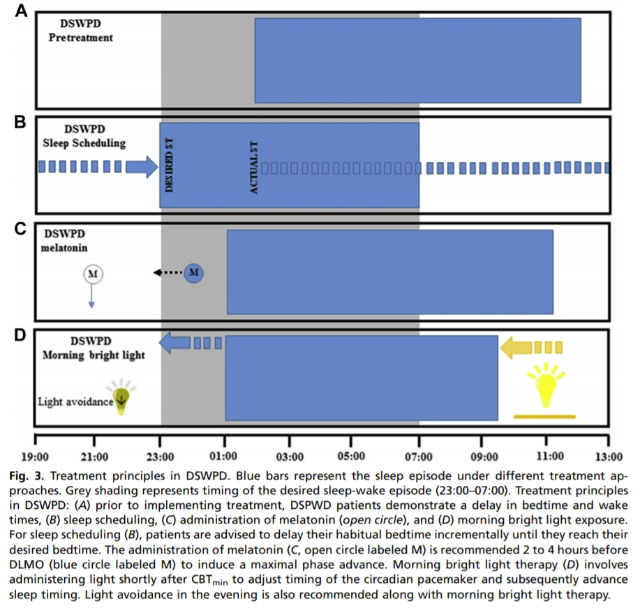
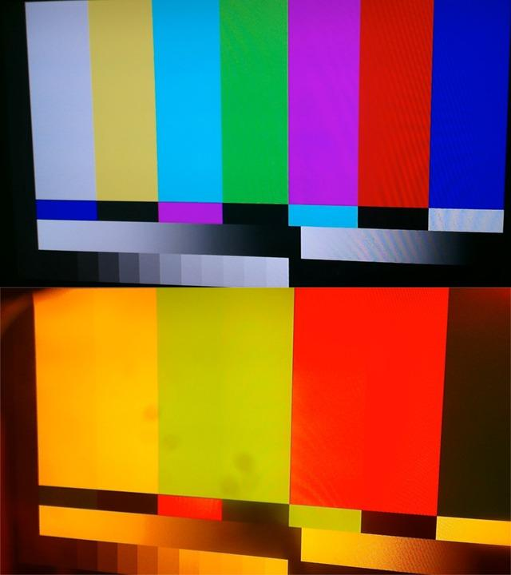
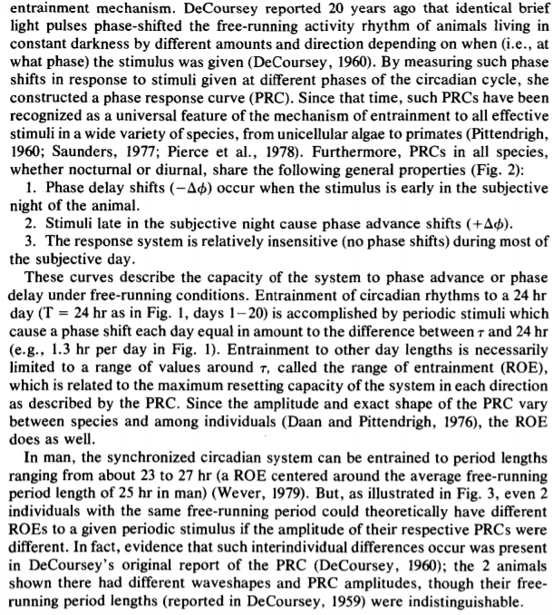

SleepNon24
Créée le samedi 24 août 2019
Paper draft
Foreword
This is a draft of a potential article for a work-in-progress therapy to manage non-24-sleep-wake-disorder (N24SWD). These procedures have not been vetted by the medical community nor reviewed by the scientific community. Thus, it is NOT recommended to follow the therapeutic procedure outlined in "A new combined therapy", "Stage 1", "Stage 2" and "Preliminary results" sections, as they should be considered totally unreliable. At the time of this writing, this therapy produced little effect to improve the condition. However, the "Introduction" and "Current therapeutic approaches" section can be safely read and provide a review of the state-of-the-art knowledge on this and similar circadian rhythm disorders. Please also note that this text (and the additional bibliographies below) may be partly written in french (the author's native language).
This draft was written by Stephen Karl Larroque in 2019.
Introduction
Sleep and circadian rhythm are highly conservated behaviors across all animals, and with some main components such as the suprachiasmatic nucleus in the hypothalamus, also called "master clock", regulating sleep by light (photic) inputs, and having precedence over all other peripheral clocks (Aschoff 198?), such as the pituitary gland which secretes melatonin, or insulin secreted by the liver and temperature modulation in the intestines. These structures are present in all vertebrates[???], which shows they are highly conservated in evolution and are thus serving critical homeostatic functions. Although both of these functions are still under active research to understand them comprehensively, we know that circadian rhythm's purpose is to allow for a living organism to be in synchrony with its environment: to be awake when it's possible to seek food, and to sleep otherwise to recover for the next day. As such, all living organisms rely on these two crucial functions to support their activities. Any disruption, or any abnormal sleep pattern, can therefore only be rare and significantly disruptive as this would cause the living organism to fit less with its environment, and thus decrease its survival chances if we follow darwinian principles.
For humans, we know very well how much sleep is healthy depending on age, with diminishing length with increased age [https://i.redd.it/ma3aj5nj81i31.png]. If the sleep duration is quite well defined, the bed time and wake up time are more variable, with some people being "early birds", others "night owls", and others in-between. These chronotypes can be detected by using questionnaires such as the Morningness-Eveningness Questionnaire[55].
{kind=link}
Besides the social isolation and "laziness" stigmata that sleep and circadian rhythm disorders may produce — a persistent myth despite the fact that motivation, alertness and performance are directly influenced by sleep and circadian rhythms[56,58] —, they can lead to several health complications, nearly all stemming from acute or chronic sleep deprivation: from reduction of attention, memory and performance in work settings with only a single night of sleep deprivation, to brain grey matter atrophies and gene modifications[???], and increased risks of accidents[58, ??? hospital workers accidents]. These effects are observed not only during experimental sleep deprivation, but also in settings where there is time to sleep but a shifting work schedule, which represents 15% of all full-time workers in the United States in 2009[59], such as hospital night shift workers [???], firefighters[59], polar antartica expeditions[61], submariners[60] and the NASA Mars Pathfinder and Rover staff[57, 58]. Interestingly, in this latter case, the workers were tasked with following an unnatural 24.65h schedule, to follow martian day-night cycle. The authors report that in 2004, the veteran workers of the Pathfinder mission, described as highly motivated and dedicated to their work, decided in "a rebellion" to stop it after only 1 month, describing the schedule as "broken"[58]. Although the study authors could later setup a strategy to help the workers better synchronize their sleep-wake schedule on the Rover mission, they continued to report an increasing fatigue, hinting at a reduced sleep efficiency despite sleeping theoretically sufficient hours[58]. This goes to show the difficulty for any human being to follow a non natural sleep schedule, with chronic sleep deprivation effects becoming unbearable after only a month, even for highly trained and dedicated workers.
Non-24-sleep-wake-disorder (N24SWD) is a circadian rhythm sleep-wake disorder (CRSWD) where the subject experiences a naturally and uncontrollable increasing shift in bed time [44]. It can be diagnosed using various methods with different degrees of precision: from simple sleep logs where the patient simply writes the bedtime and wake up time, to polysomnographs, minimal temperature monitoring and salivary tests for dim-light melatonin onset (DLMO).[44] It is also possible to use actimetry, as it was shown to be an accurate enough measurement method.[46]
(TODO: add prevalence, risks, genetics, etc on N24SWD or circadian rhythm disorders if not available)
Circadian rhythm disorders are complex, as they involve both internal clock mechanisms and external environmental cues ("zeitgebers", which influence on sleep was only relatively recently recognized since 1978[2]). In her landmark paper, De Coursey discovered the Phase Response Curve (PRC), a model of the complex interactions between the internal clock and external cues that was shown to be highly conservated across evolution, across all animal taxons[2]. This curve was first devised for the response to light, but is now also including melatonin, in what is now called a dark-light cycle[??]. This cycle can be succinctly summarized as follows: light stimulation close before sleeping delays the sleep onset (bedtime), whereas light after mid sleep advances sleep offset (wake up time). Melatonin does the opposite: administration close to bed time will advance sleep onset, whereas administration after mid sleep will delay sleep offset. Administration of light or melatonin at any other time during the wakeful phase has little to no effect on the PRC[19].
However, although the PRC shape and behavior is conservated in all animals, the exact timing will change between species: nocturnal animals will have their PRC's tau point (the central point of the PRC shape, from which the external cues effects are distributed around — this point is usually at about the mid-time of the sleep phase) during the day, since they sleep during the day, rather than at night. Furthermore, this can change between individuals: some will have their tau value early (the early birds), others later (night owls), and those afflicted with circadian rhythm might have it set during incomfortable times, or even an ever moving tau time for the non 24 free running disorder. The importance of the PRC for the sleep regulation cannot be overstated: it was found that the timing of light exposure relative to the PRC accounted for about 71% of the inter-individual variability of the PRC adaptation to night shift work, suggesting that although the PRC is only one of the sleep regulator mechanism — another one being the sleep homeostasis, regulating sleep pressure, as in Borbély's two-process model —, it is most likely the most important mechanism regulating the temporality/synchronicity with the zeitgebers of the circadian rhythm[25]. Furthermore, interactions between sleep homesteostasis and the PRC were experimentally observed, further supporting Borbély's model[11, 26, 41].
It is well known that humans, and nearly all animals, have a circadian phase length tau that is slightly beyond 24h, for humans it's about 24.2 according to NIH[1]. It was repeatedly demonstrated experimentally that isolating a human subject from any environmental cues (including light/dark cycle but also noise and thermal variations, food intake and exercise) causes a loss of entrainment to these external cues and ultimately a desynchronization from the 24h day cycle, causing the subject to revert back to its natural internal clock cycle beyond 24h[1, 2]. In other words, it can be said that humans are naturally non24. The problem lies when there is an impossibility to entrain properly (ie, to be synchronized to the target time) to these external cues, and thus to follow a 24h day cycle. In other words, although anybody can function on a bigger than 24h cycle in the absence of external cues, non 24h can only function in such a way, regardless of external cues. A corollary is that advancing cues (light around wake-up time) and pertinent elimination of delaying cues when necessary (absence of light/increase of melatonin before bedtime) are of paramount importance for any human to entrain to a 24h day cycle.
Another source of variability in the PRC shape resides in the magnitude of the response to external cues (ie, the height of the PRC). Not only the magnitude depends on the intensity/dosage of the zeitgeber[43], it also varies inter-individually because of endogenous factors[12]. Furthermore, the response to advancing or delaying cues is asymmetrical: on average, humans have been shown to have a range of entrainment (ROE) — which is the range of day time that one can maintain — to have been estimated between about 23h to 28h[2]. The magnitude is also asymmetrical, with low intensity light suppressing melatonin (and thus producing a delaying effect)[10, last ref], whereas high intensity light is required in the morning to advance the phase[43]. In other words, humans have a much easier possibility of delaying — and living on an extended day longer than 24h — than to advance by reducing their day duration. For instance, to make children sleep earlier than their usual time, it is advised to advance by small increments of 15 minutes[??]. Czeisler CA hypothesized that subjects with delayed sleep disorder (DSPD) may have an even weaker response to advancing the PRC phase, such that delaying was almost the only possible route. They furthermore tested their hypothesis experimentally on 5 DSPD subjects by devising a chronotherapy involving a tau of 27h for one week, in other words a daily 3h shift, which suggests that indeed DSPD subjects more easily responded to delaying than advancing, similarly to what was observed also in healthy volunteers without a circadian phase disorder (see below), although more studies with randomized trials with a bigger sample size are needed to confirm.
As written by [2]: « Elegant experiments by the late John Mills and his co-workers (1978) demonstrated that the measured circadian rhythms in nearly all normal subjects whose scheduled sleep-wake and light-dark cycles were advanced by 8 hr actually delay shifted 16 hr around the clock before resynchronizing. This is exactly the result expected in those individuals whose capacity to phase advance has been exceeded. Further, after a 12 hr phase shift, they found that 90% of the partial adaptations proceeded by the phase delay route. Those results suggest to us that some normal individuals, without a PRC abnormality, might develop DSPS when forced to attempt an acute 6-8 hr phase advance (e.g., shift workers). Like Mills' normal subjects, some would be unable to achieve the shift by the phase advance route. However, unlike his subjects, who were living on a very strictly imposed schedule in temporal isolation, individuals living in society would also inadvertently prevent complete resynchronization via the phase delay route by "sleeping late" on leisure days (as in Fig. 4, days 1-20). Those episodes of late sleep might prevent their endogenous rhythms from drifting later and later around the clock, thereby effectively trapping the rhythms in a chronically inappropriate phase position (near its position before the imposed phase advance). »
Both the inter-individual variability of the PRC[12] and the hyper-sensitivity of DSPD to delaying light cues[13] have now been observed experimentally, further supporting Czeisler et al's hypothesis.
Finally, a third source of variability is that the PRC shape is centered around the tau point, the mid sleep time, which is equal to the day cycle duration. Combined with the asymmetry in the PRC shape, this might make an absolute (but not relative) advancing an impossible feat for subjects with circadian phase disorders. For example, if a human is on average able to advance 30 min daily, depending on their own tau, a person might be unable to effetively advance: if the tau is 24.2 (24h and 12 minutes), then the advancing capacity exceeds the natural free running induced by the internal clock ; but if another person has a tau of 25h, with the same advancing capacity, then the maximal advancing capacity is only of 24h30, which exceeds a 24h day schedule, meaning that even with proper response to external cues, this individual cannot entrain to a 24h day, but only to a 24h30 day. Thus, the tau and magnitude of an individual's PRC are mathematically critical parameters for this individual to be able to entrain to a 24h day cycle. And indeed, non 24 free running disorder (N24) and DSPD were both recently shown to have a delayed tau (mean phase duration)[3, 4], confirming one of Czeisler CA et al's hypotheses[2]. Footnote: In the 2016 study, it was found that DSPD had a tau of about 24.5h, whereas N24 had more than 25h. This would suggest that N24 might have as a defining characteristic a longer tau than other circadian rhythm disorders. However, this study had a very low sample size, particularly for N24 which was only of 2 subjects. Furthermore, the 2013 study on DSPD patients only found an average tau of 25h, thus eliminating the apparent (but non statistically significative) difference found in the 2016 study.
Furthermore, DSPD were shown to have a delayed melatonin profile[18].
FIGURE 1 inspired/adapted from [2] to show each sources of variability in the PRC shape. Also where is sleep onset/offset.
FIGURE 1.5: unified model with both the PRC and the sleep homeostasis. Inspired by [11] (and maybe [2]):

FIGURE 1.6: see figs 1 and 3 of [15]

Thus, it is ALWAYS possible for a human to delay as well as advance, but advancing is always more limited compared to delaying. The corollary is that humans can modify their sleep onset/offset, simply by letting their natural clock free run.
Current therapeutic approaches
Several treatments were proposed for circadian rhythm disorders.
The pituitary gland is an important component of the sleep-wake rhythm in humans. It was shown through lesional studies to regulate the circadian rhythm, and hence got the nickname of "master clock".[47] It is influenced by both light and melatonin.[47] In blind non 24 subjects, lesions in the pituitary gland have been regularly observed[??]. This led to the hypothesis that this disorder may be caused by dysfunctions in the master clock. Hence, the two most pursued treatments for non 24 so far have been by modulating these two antagonistic signaling pathways, melatonin, the "darkness hormone" which is secreted in the absence of light, and light, which inhibits melatonin secretion.
Melatonin has historically been the first line of treatment for non 24 in blind people. It was shown to be effective for entrainment in up to 67% of the subjects.[45] However, since this is a natural hormone that is not patentable, no pharmaceutical industrial went through the process of validating melatonin through national institutions such as the USA Food And Drugs Administration, and thus melatonin is not officially recognized as a treatment for non 24, although there is good evidence this is the case.[44, 45] There is currently only one recognized drug treatment for non 24, which is Tasimelteon (commercial name Hetlioz),[44] with an entrainment rate of 20% in a randomized controlled study, which seems considerably lower than melatonin's entrainment rate.[45] Apart from these two drugs, there is currently not enough evidence for any other kind of treatment or therapies for non 24, according to the 2015 guidelines of the American Academy of Sleep Medicine (AASM).[44, 45] As pointed out by an excellent review, the AASM made their criteria more difficult in the latest revision of their guidelines, so that only treatments with reliably high confidence of effectiveness could be recommended, but that does not mean other therapies are ineffective, simply that there is not sufficient evidence.[45]
Light therapy was proposed as a way to advance the PRC. Increase in cognitive performance and attention was noted for night shift workers using a bright light (which definition of bright varies depending on the study) during their shift at night. However, light therapy has shown limitations: light cues have no effect on the circadian rhythm if outside of the PRC curves[19] (ie, only effect is around bedtime and wakeup time, during the individual's wake up period there is no effect), and furthermore sleep pressure can also reduce or nullify the effect of light[21]. Thus, it is important to both time correctly the light therapy according to the individual's PRC curve, and to ensure the individual is properly rested so that the light cue can be effectively processed to advance/delay the PRC.
An extension of the light therapy is the corollary dark therapy, which is to ensure that delaying light cues are minimized. Such a dark therapy usually involves either placing the individual in a dark room in the laboratory setting, as is often done to measure the natural DLMO and minimal temperature in order to qualify the circadian rhythm parameters such as its duration tau. Outside of the laboratory setting, experiments attempted to use accessories to help shift workers better adapt to their schedule, with significant success. Blue blockers glasses were shown to be efficient in improving the sleep efficiency and circadian rhythm delaying for night shift workers, and are now formally recommended by health bodies.[20] Although historically most studies have studies either light therapy or dark therapy, their combinations seem nowadays only natural since their complex interactions, by compounding or nullifying, provide an excellent mean to adjust one's circadian rhythm as shown in night shift workers[41].
Some have argued that the difference in the circadian rhythm might reflect an adaptation to a different timezone, and thus that moving the individual to a proper timezone would correct the chronotype. However, this was not supported by experiments, where the light exposure and occupation were explaining all the differences in the individuals chronotypes with no to little effect of the timezone.[17]
Another approach is chronotherapy. A naive chronotherapy commonly devised by non24 involves building a high sleep pressure by prior sleep deprivation, allowing to sleep at the target bedtime even though it is not in phase with the endogenous circadian rhythm and thus would mostly prevent any attempt to sleep during this high wakefulness period, bar for the high sleep pressure. This strategy is also employed by night shift workers[38, 41]. Needless to say, such strategies have very deleterious effects, not only in the long term, but also in the short term[??].
There are however more elaborate chronotherapy schemes that do not involve or limit sleep deprivation. A study on 5 DSPS patients found that chronotherapy was very effective to resynchronize the circadian rhythm faster to the target time by allowing free-running and even furthering the free-running to a higher tau (eg, follow a 27h day schedule instead of the endogenous 24.5h)[2]. All these patients were able to maintain their desired sleep schedules for months or even years after the therapy[2]. Despite the promises shown by chronotherapy in DSPS patients, a few authors raised concerns about the risk of modifying the tau parameter under the effect of artificial extension during chronotherapy[7], which stopped investigations into chronotherapy for circadian rhythm disorders since then. For instance, a case study reported the case of a DSPD patient transitioning to N24 after self-initiated adaptations in his lifestyle to accustom with his DSPD disorder[??]. This led to some suboptimal adaptations, such as practicing sport in the evening/night, which is known to negatively affect sleep efficiency when done this close to sleep onset[??]. This led some authors to argue this resulted in a regularly applied extended delay, ultimately causing a transition from DSPD to N24. This interpretation is arguable, as the patient did not follow a formal and controlled chronotherapy, but rather attempted to adapt his own schedule to his DSPD condition. Thus, the causality might be inversed: instead of the extended delay causing a switch to N24, it could be that the delay was caused by the DSPD transitioning to a N24. Thus, it can be debated whether these adaptations were caused by the DSPD condition, and whether a more appropriate and controlled chronotherapy would have instead enhanced his condition instead.
Nevertheless, these criticisms raise a new concept that was seldom, if never, studied before: the possibility to change the tau parameter (by reduction/advancing or by expansion/delaying) via a behavioral therapy, which we name the notion of tau adaptation (or compounding tau effect?). In other words: would forcing oneself to live longer days than the innate internal clock eventually lead to the internal clock adjusting to the new daylength?
Depending on the existence of the tau adaptation phenomenon, two very interesting scenarios are possible:
- Either the tau parameter cannot be changed, in which case chronotherapy is a safe way to move faster the sleep onset/offset and partially resynchronize with a desired schedule, thus increasing drastically the patient's quality of life by allowing some degree of control over the disorder. In practice, this would allow such an individual to reduce the timespan with a very incomfortable sleeping schedule by increasing the delaying step (eg, sleep 3 hours later than the day before, instead of the usual 1h for an individual with a 25h cycle, to "skip" dephased days faster) ; as well as increase the timespan in a desired sleeping schedule by advancing the PRC daily during this period (eg, sleep 30 minutes earlier everyday compared to the day before, such that an individual with an usual 25h cycle would live on a 24h30 cycle instead — dephasing only by 30 min daily instead of 1h, thus doubling the time spent in the range of the desired sleeping schedule).
- Either the tau parameter can be changed, in which case:
- delay chronotherapy might worsen circadian rhythm disorders such as DSPD into N24, as delaying might progressively extend the tau parameter and thus worsen the condition[2,35], studies showing that bigger taus are associated with worsened quality of life in circadian rhythm disorders [??]. But such adverse effects would also be reversible, perhaps at the cost of more stringent and uncomfortable sleep controlling measures, but still they would be reversible.
- and more importantly, advance chronotherapy might be a potential curative treatment for circadian rhythm disorders: although arduous since the range of entrainment and effect for advancing is more limited in humans (max 1h, but usually much less), daily advance in the PRC would eventually result in advancing the tau parameter to the desired value, closer to 24h. This would be the only mechanism known to durably reduce the circadian rhythm cycle.
- The population that might suffer from non24 might be much wider than previously thought, requiring only that the given the conditions are met. Indeed, if the tau parameter can be behaviorally or chemically changed, combined with the well-known fact that human's circadian rhythm is naturally above 24h and thus free-running, this would suggest that anybody could potentially acquire the non24 syndrome. Contrarywise, previous studies on variable night shift work found that some chronotypes, mostly the early birds, have more difficulties adjusting to change in their sleep schedule[15, 27, 38]. A few studies on the NASA personnel explored the possibility to enforce a non24-like free-running schedule of 24.65 hours for 78 days, in order to assess the potential impact of future human cosmonauts who would go on a mission to Mars. These studies found that most of the personnel had major difficulties adjusting to this new schedule, with inefficient sleep even past the 78 days. These studies however did not assess the initial chronotype of the participants[22, 23]. Indeed, it's known that the early bird chronotype might be partially determined genetically[63]. All of these preliminary evidences combined suggest that, in the case that the tau parameter is modifiable behaviorally or chemically, genetic mutations and predispositions are probably another contributing or discontributing factor to acquire non24. The early bird genotype might be a barrier preventing free-running and proper synchronization to zeitgebers, much like a genotype of zeitgebers hypersensitivity would on the contrary facilitate non24 acquisition by essentially making these subjects more susceptible to environmental factors[12, 13, 25, 28]. Furthermore, other genotypes may innately produce an increased tau, just as much as, in this hypothesis, behavioral adaptations might also delay the tau enough for entrainment to a 24h cycle being outside of the ROE[32]. In addition, sleep deprivation has been shown to modify the genotype by inducing genetic mutations[65, ??], hence specific lifestyles might induce genetic mutations causing or worsening circadian rhythm disorders such as non24. Thus, it is conceivable that there is a two-way interaction between genetic mutations and behavior/lifestyle, both influencing each other. And actually, these complex interactions between environmental and endogenous factors have already been suggested to explain the difficulties in adaptation of night shift workers[15, 41]. Further studies on these interactions might yield extraordinary insights into the physiopathology of circadian rhythm disorders.
FIGURE2: different scenarios of advance/delay impact on non-moving tau vs on moving tau, inspired by:

Despite the focus of most studies on the master clock, there is evidence that the sleep-wake rhythm is dictated not only by the master clock but by several pathways in the peripheral nervous system (ie, in the whole body).[47, 48, 49, 50] Indeed, there are several evidences of the implication of mistimed food intake impacting the circadian rhythm[51], which can in turn influence insulin sensitivity[52], and even the composition of the diet can cause disruptions in the circadian rhythm[53]. This can have dire consequences, as mistimed sleep, without direct sleep deprivation, can increase the risk for various metabolic diseases such as diabetes and even alter the human transcriptome. (TODO: extend and add refs, process refs in [54]).
A new combined therapy
Leveraging the natural tendency of humans to delay more easily, we here propose a new combined therapeutic strategy, aiming to at least enhance the individual's quality of life by teaching how to exert more control on the sleep schedule, while minimizing or avoiding altogether sleep deprivation, which can have lasting effects from the very first night of sleep deprivation[??]. This strategy involves both a chronotherapy to allow the subjects to learn how to exert some control on their internal clock, as well as ... therapy (luminotherapy, dark therapy, sound therapy?) to control external cues as needed, as well as self reporting using computerized tools to help the user both track and also follow through the whole process.
This strategy allows to test the two hypotheses of the tau adaptation, and get benefits in either cases: at worst, if the tau parameter cannot be changed, the strategy allows the individuals to exert more control on their PRC and thus sleep phases and quality of life via an individually adapted chronotherapy and sleep hygiene ; at best, it allows to reduce or might even eliminate the circadian rhythm disorder by progressively reducing the tau parameter until it gets closer to 24h to allow entrainment.
The strategy involves two stages:
- control of internal clock by extending/delaying the PRC (chronotherapy) + elimination/reduction of potentially influencing external cues → see chronotherapy below.
- stabilizing the internal clock by avoiding extension/delaying of the PRC + restoration/simulation of external cues as needed to complement the target PRC
Such a combined therapy was suggested as a very promising approach to investigate[2, 15], however it was never done before to this extent and data is lacking.
All the calculations below will use the wake up time as the reference point to estimate the DLMO and the circadian rhythm of the individuals, which was found to be an accurate proxy for the DLMO, contrary to the bedtime which was not predictive of the DLMO in healthy volunteers[6, 14]. Furthermore, we will not follow current recommendations of various health organizations about the timing of melatonin administration, as they were shown to be ineffective, but rather use the latest evidence from research experiments:
«Although pharmacopoeias and the European food safety authority (EFSA) recommend administering melatonin 1–2 h before desired bedtime, several studies have shown that melatonin is not always effective if administered according to that recommendation. Crucial for optimal treatment of CRSD, melatonin and other treatments should be administered at a time related to individual circadian timing (typically assessed using the dim light melatonin onset (DLMO)). If not administered according to the individual patient's circadian timing, melatonin and other treatments may not only be ineffective, they may even result in contrary effects. Endogenous melatonin levels can be measured reliably in saliva collected at the patient's home. A clinically reliably DLMO can be calculated using a fixed threshold. Diary and polysomnographic sleep-onset time do not reliably predict DLMO or circadian timing in patients with CRSD. Knowing the patient's individual circadian timing by assessing DLMO can improve diagnosis and treatment of CRSD with melatonin as well as other therapies such as light or chronotherapy, and optimizing treatment timing will shorten the time required to achieve results.»[16]
Furthermore, moving the participant's sleep schedule directly to the target sleep schedule at once has been shown to be not only ineffective, but also harmful by causing sleep deprivation. In effect, although the participant might forcefully wake up at the required time by using a device like an alarm clock, the circadian rhythm will behind the walls slowly drift in a free-running fashion until attaining the target time, meanwhile the desynchrony between the sleep schedule and the internal circadian rhythm decreasing the sleep efficiency as evidenced by polysomnography and ultimately sleep deprivation, as observed in both normal sleepers and non24 patients[2 with footnote 36 and footnote 37].
TODO: justify using literature on dsps and night shift work disorder: sighted non24 is very rare or misdiagnosed so litterature sparse, it is arguable whether all circadian rhythm disorders have shared mechanisms, with hints indicating that's true because melatonin work for all and sleep is a very conservated mechanism so likely it's a very stable process throughout evolution with some inter species and inter individual variability.
Stage 1
Before starting the Stage 1 of this protocol, it is crucial for the participant to both get diagnosed properly by a specialist physician in circadian rhythm disorders, and to rest properly for at least 2 weeks by following his/her own sleep schedule. The latter might not be as easy as it sounds: chronic sleep deprivation causes a decrease in cognitive performance that is not perceived properly by the subject, which means that subjects that are sleep deprived, which is a common occurrence for persons with the non24 syndrome, will have more difficulties to know when they need to sleep and how to adapt their behavior to help inducing sleep (which is a big part of the Stage 1 process).[24, 29, 31] Hence, a period of stabilization in the sleep schedule (in the sense that the natural free-running sleep schedule is following to the participant's needs) is essential for the proposed therapy to have any efficiency. This "pre-protocol" period can be advantageously used to order the necessary equipment as well as put in place good practices such as systematically maintaining a sleep log with the help of applications such as Sleepmeter (more about that below). Also, participants should be cautioned that they may be left in a worse condition if they do not follow through the whole protocol (stages 1 and 2).
time management is crucial, but more difficult even for night shift workers: «It is common to feel like there is too much to do and not enough time, especially when working the night shift. Prioritize your sleep by blocking off that time first, then determine what else must get done, assign a time for those activities, and delegate or postpone other tasks. We do not routinely decide to pull all-nighters when working days; working nights is not the time for it either. Sleep should not be an afterthought.» http://sci-hub.tw/10.1097/CNQ.0000000000000152
Stage 1: Delaying phase chronotherapy to reach the target wake up time: The chronotherapy involves an alternating strategy on 2 days, for 8 days:
- delay on day 1: extend the sleep onset by 3 hours (ie, sleep 3 hours later than the usual, or can calculate 4h subtracted from the sleep offset/wake up time if this one is more stable). Sleep as much as optimally needed to feel rested (X hours), and wake up at the new wake up time W. Eg: usual sleep time is from 5am to 1pm, on day 1 the new sleep time will be from 8am to 4pm (optimal sleep time of 8h), but the individual wakes up at 3pm instead (and sleeps less than the optimal 8 hours).
- stabilize on day 2: sleep at W-X=O time until W time. Eg: the individual will sleep from 7am to 3pm, effectively having delayed by 2h.
- Adjust and repeat for all subsequent days, and write down the time in a sleep log after each day. Adjusting consists in reducing/extending the delay depending on sleep efficiency:
- if take time to sleep then too early, O time should be delayed.
- if having too many nightmares (indicating more REM sleep than non-REM sleep), or wake up too early, then slept too late. O time should be advanced.
- Hint: the temperature minimum is attained at the mid sleep time, thus when the individual is feeling colder, this might be a good hint that the PRC shape has begun.
- Stop this stage when the individual reaches a wake up time close to the target wake up time, with enough margin to account for a few days of continued delays. For this experiment, we advised 4 days of margin. Eg, if the individual's tau before the stage 1 was 24.5h, thus 30min delay each day, and the target wake up time was 9.00am, the stage 1 should stop when the individual wakes up at 7.00am, to allow for 4 days of delaying before reaching 9.00am. During this period, stage 2 will be started in order to attempt to maintain the individual's circadian rhythm in this phase. The number of days of margin can be adjusted depending on the amount of margin one wants to leave in order to adjust to stage 2.
FIGURE 3: summarizing stage 1
During the application of the chronotherapy, it is essential to control a maximum of external parameters:
- At wake-up:
- turn on bright lights (use a neon of white light — not yellow — for extended time and/or use luminotherapy lights for short time just after waking up)
- Can take melatonin supplement to help delay further (although the effect might be paradoxical — it may not delay but advance, the effect of melatonin might be desynchronized compared to light in circadian rhythm disorders, this is a hypothesis advanced by some authors and there is currently no evidence in favor or against it)
- Before (1-2h at least) bedtime:
- use blue and green light blockers glasses 2h before the planned sleeping time (such as Uvex Skypper S1933X or Uvex S0360X Ultra-spec 2000 [8] — it is also possible to precisely measure the light stimulation by using a spectrometer or new consumer-grade devices such as the Lys[9]).
- stay in a place with minimum to no light intensity. Even with blue and green light blockers, the light intensity can still impact the circadian rhythm. Indeed, it was shown that even lux as small as 2-3 (candle lit dinner) suppress melatonin production [10].
- avoid using electronic screens (except ebook readers with einks and no backlight). If really needed, set the backlight to the minimum, and use apps to turn the colors red, such as Twilight on Android. Any screen filter software that does not totally turn all colors to reddish is not filtering enough.
- use an eye night cap to block a maximum of light during sleeping
- go out of bed and do not go to the bed until it's the planned time to sleep (avoid working from bed! If you can't sleep, go out of your bed and come back half an hour later)
- use noise blocking ear plugs during sleeping
- turn off any sound or vibration notifications from phones and such
- avoid practicing sport before bedtime, prefer to practice after waking up, during the first part of the (relative) day.
- eat early at least 3h before bedtime, including beverages like coffee[30] or sugar drinks.
- Other advices can be found in: http://sci-hub.tw/10.1097/CNQ.0000000000000152
The maximum efficiency of this chronotherapy is a delay of 12h under 7 days (the 8th being for the final stabilization, which then should be followed by the strategy's stage 2, which is simply the continuation of this stabilization).
However, this efficiency can only be reached if the subject's internal clock can be entrained to a 27h day. DSPD patients were shown to be able to partially entrain[2], however, they did not fully entrain as shown by the reduced sleep efficiency in one of their subject towards the end of the chronotherapy delaying phase they used. In such a misentrainment case, the internal clock will revert to its natural tau (eg, 24.2h in humans on average), thus a delay will still occur but reduced, which will in practice result in a less efficient sleep and interruptions in the sleep (eg, waking up earlier than intended). However, when inducing an increased delay shifting, the free-running circadian rhythm might be bigger than the endogenous free-running rhythm without induction. For instance, in night shift workers, who were otherwise normal sleepers and thus probably with an average tau around 24.2h, it was observed that on average the circadian rhythm shift was about 1h, which would be a tau of 25h[41]. Our strategy tries to reduce this issue by allowing an alternating day of stabilization, whereas [2] chained the delays. It is also possible to adjust the number of delay hours by reducing it until the sleep efficiency is not impacted anymore.
Alternating days of delay and stabilization further provide a safeguard against the possibility of permanently extending the tau: by stabilizing, we try to ensure that the internal clock does not register the extension of tau as permanent but only as transient, as this was one of the raised concern about chronotherapies in circadian rhythm disorders[7].
For writing the time in a sleep log, we advise to use Sleepmeter Free combined with the Sleepmeter Widget by Squall Line Software[5], which are free tools on smartphones that simplifies the maintenance of a sleep log, with the additional benefit of being very precise: instead of writing the time at which you retrospectively think you went to sleep and woke up, the subject can simply tap a widget on the screen when going to sleep and when waking up. The software will then delimit the sleep times, with optionally a calculation of some offset time (eg, if the subject is a slow sleeper and takes 30 min before sleeping, or is drowsy in the morning and takes 20 min to wake up, it is possible to set up the software to automatically add or subtract such amount of time automatically from the "widget tap" times). Using such a software will allow the subject to both more precisely track its own sleep duration, timing and quality, but also provide an incentive for continuing the therapy (increasing therapy compliance). This can furthermore provide valuable data to the physicians and researchers, as sleep log data was shown to be highly predictive of the PRC, allowing to model it with 90% accuracy from sleep logs alone[6]. The digitalization of sleep logs also show great promise to allow for large-scale sleep data acquisition for scientific studies, as well as provide automated health guidance for the individual[62].
Napping was suggested to be advised to help in adaptation to zeitgebers by reducing sleep pressure and increase clock susceptibility to light[11], however this was not experimentally tested and there is evidence that napping reduces the sleep pressure and sleep duration during the bedtime sleep, making it more difficult by reducing sleep efficiency because of a lack of sleep pressure and slight sleep debt, which would otherwise ease falling asleep at the planned time[26, 39]. Also napping does not allow to cycle through all sleep stages in the same way that a full night of sleep does[40]. Furthermore, DSPS were found to have slower sleep pressure buildup compared to normal sleepers, and one can probably safely assume the same holds true for non24[15]. We thus disadvise napping in this phase unless required because of too much sleep deprivation (eg, because of a daily shift too big, in which case it should be reduced to allow for easier entrainment).
In any case, shifting might produce a more chaotic sleep schedule, as the forced behaviorally-induced shifting might not always be followed by a concrete shift in the circadian rhythm depending on various factors[33]. The participant should thus be prepared that this stage 1 might not be followed by a daily result, but should not be detracted from the overall result that the induced shifting produces (ie, the shifting should in the end be overall faster and allow the reaching of the target wake up time faster than by following the endogenous free-running circadian rhythm). In the worst case scenario, the participant will simply shift according to the endogenous free-running circadian rhythm, but at best, and with the help of environmental cues control such as light, the shift will be faster when following this protocol.
TODO: replace natural by endogenous
TODO: define list of custom hindrances and aids, hide others, and use only these. Can add new custom ones, I can aggregate them myself, will be interested to cover unforeseen cases. Also write sleep quality. And sleep holes.
Stage 2
Stage 2: environmental cues control and melatonin administration to advance phase
- Vitamin B12 cyanocobalamin 1000mcg once per day, everyday (eg, Solgar brand). Vitamin B12 was shown to resolve a few sighted non24 cases and allow entrainment to a 24h schedule[55]. More recent studies evidenced a potential mechanism for this effect, with the B12 potentiating the magnitude of zeitgebers effects on the PRC (ie, B12 allows both light and melatonin — whether endogenous or exogenous — to have more shifting effect — whether advancing or delaying — on the circadian rhythm)[34].
- For melatonin administration: use 1 pill every few days (not everyday) of instant release melatonin, dosed at 1.9mg. Instant release is VERY important. More details:
- The optimal time to take the medication should be at the DLMO point - 4 hours[15]. To calculate the DLMO point = melatonin at wake up time - optimal sleep duration - 2 mod 24 [14]. Eg, if wake up time is 9am and the optimal sleep duration is 8 hours, the DLMO point will be at 9-8-2 = 11pm. From there, the optimal melatonin administration would be at 11-4 = 7pm. In practice, the melatonin should be taken between the optimal melatonin point and the DLMO, thus between 7pm and 11pm in our example, but NOT before 7pm (the melatonin point), as then the melatonin would have little to no effect before this point in the PRC phase.
- Note that the bedtime, and DLMO, should not be calculated according to the target bedtime the subject would like, but rather, as suggested in previous reviews, according to the usual/expected bedtime if the subject follows the endogenous freerunning rhythm. The idea is to use melatonin as a tau shortener, in other words to advance the bedtime, and thus it should be adapted to the actual bedtime and not the wished one.
- In this protocol, the melatonin administration is NOT daily, but every few days as required: when the individual uses melatonin at the optimal point (or close after), the PRC will be advanced. There is no currently available model that can predict the amount of advance that will thus be effected to any individual, but it can amount to less than a hour to several hours. Thus, the individual should take the melatonin when required to stay in a "range of target times": if for example the target time is to be awake by 9am, and the melatonin advance the PRC by 2h with a single dose, then the individual can take the melatonin when the wake up time gets close to 9am, to shift back to 7am, and then refrain from melatonin administration for a few days until the individual's circadian rhythm gets gradually close to 9am again. This way, the individual will always wake up between 7am and 9am, by using melatonin administration only when necessary. We also suggest this might also have the beneficial side consequence of avoiding habituation lessening effects that might happen with continuous administration of melatonin. If done properly, the wake up time should be irrespective of the bed time, although the individual should feel more sleepy earlier than the days prior, following melatonin administration.
- TOADD (rewrite): about the dosage, melatonin was shown to work for some individuals with as little as 0.5mg
it's mentioned in the current AASM guidelines, and before I have read the original paper
so this suggests that the dosage does not matter
I used to take 5mg at first, then 3mg, now I use 1 or 1.5mg and it works just the same
nowadays I just use whatever is commercially available
the only thing you want to make sure is to use an instant release melatonin
not a "long release"
because you want it to trigger your sleep mode
yes I did not know that for a long time, it was my physician who told me and now that I did a more thorough review of the scientific literature and what is known about sleep and circadian rhythm, it makes perfect sense
if you take a long release melatonin, it won't help much to go to sleep at the time you want, and in the morning you will feel more sleepy, because the melatonin will still be in effect
long release melatonin is for those who take it as a relaxant
(and I used both before knowing about the difference, and I can confirm, the long release ones do not work for us)
- use night cap when you sleep
- use blue blocker glasses 3 hours at least before you go to sleep [20]
- use auditive blockers when you sleep
- as before, control other environmental cues/zeitgebers:
- eat at least 2/3 hours before bedtime
- do NOT stay in bed if it's not to sleep: train your body to fall asleep faster by not staying in bed if it's not for sleeping! behavioral programming
- exercise early in your day rather than later and avoid in the 3h before bedtime
- avoid drugs, including alcohol
- stick to your sleeping schedule: be rigorous with your sleeping schedule and hygiene: remember it is likely you have more sensitivity to delaying effects, thus you should be particularly careful to avoid anything that can delay your sleep (eg, evening/night time social events). Note however that social contacts and knowledge of clock time were found insufficient for entrainment, so although these can disrupt the sleeping efficiency, they are not sufficient to stick to a sleeping schedule[60].
- avoid watching moving images (ie, videos) before sleep, prefer reading on an e-ink ebook or at worst a smartphone screen with a reddish screen filter and minimal backlight (ie, Twilight app on Android). Avoid using a laptop screen. Indeed, laptop screens tend to backlight more lux (ie, to project more light) compared to a smartphone, because a smartphone's screen is smaller and also for energy economy reasons they tend to allow a lower amount of intensity at the minimal setting than do laptop screens.
- RECORD your sleep log with sleepmeter, including inputing when you used an accessory (night cap, blue blocker, etc)
- Optional: expose yourself to bright light (lux >= 3000) in the 4 hours following wake-up to induce more phase advance[43]. If your wake up time is during the day, you can expose yourself to sunlight (even if cloudy), but if not an artificial light with the appropriate lux intensity can be used. Note that most artificial lights can only project enough lux for phase advance at very close range. New devices such as the Luminettes are currently investigated to make the use of such artificial light therapy more comfortable and increase the rate of treatment compliance.
FIGURE 4: summarizing stage 2 (or merge with Figure 3 to have both on one panel)
If stage 2 works, you can continue using it as long as you want. If not, stage 1 can be done again in order to shift back close to the target wake up time.
For methods: Lovato, N., Micic, G., Gradisar, M., Ferguson, S. A., Burgess, H. J., Kennaway, D. J., & Lack, L. (2016). Can the circadian phase be estimated from self-reported sleep timing in patients with Delayed Sleep Wake Phase Disorder to guide timing of chronobiologic treatment?. Chronobiology international, 33(10), 1376-1390.
Preliminary results
This section describes work-in-progress results that have not been statistically tested, they are first-hand observations on a single case.
- Smartphone-based sleeping log solutions may provide a quite accurate ground to predict phase shifts (and thus may help the subject in planning the next weeks or months of sleep schedules).
- Accessories (sleep eye mask, ear plugs, blue blockers and blue light filters apps) seem to improve sleep efficiency (TODO: statistical test on difference in sleep length as a proxy for efficiency, else would need an actimeter or polysomnograph with and without).
- Time-restricted feeding (skipping evening meal) may increase perceived tiredness at natural time to sleep (which in turns contributes to sleep efficiency). It may also somewhat reduce the phase shift.
- Melatonin between 5 and 3 hours before calculated optimal bedtime (bedtime = 8 hours before last wakeup time) seems to have a similar, but stronger effect (to potentiate sensitivity to natural tiredness). It seems to phase advance bedtime, but not wakeup time (ie, the subject sleeps longer, but without any benefit, except as a "sleeping pill" when necessary).
- Stage 1 procedure seems to indeed help in cycling faster. But stage 2 does not seem to stabilize.
Bibliography
[1]: National Institute of Health (NIH) Sleep and Sleep Disorder’s Teacher’s Guide, Supplement Series Grade 9-12 https://science.education.nih.gov/supplements/nih_sleep_curr-supp.pdf , page 27
[2]: Czeisler, C. A., Richardson, G. S., Coleman, R. M., Zimmerman, J. C., Moore-Ede, M. C., Dement, W. C., & Weitzman, E. D. (1981). Chronotherapy: resetting the circadian clocks of patients with delayed sleep phase insomnia. Sleep, 4(1), 1-21.
[3]: Micic, G., De Bruyn, A., Lovato, N., Wright, H., Gradisar, M., Ferguson, S., ... & Lack, L. (2013). The endogenous circadian temperature period length (tau) in delayed sleep phase disorder compared to good sleepers. Journal of sleep research, 22(6), 617-624.
[4]: Micic, G., Lovato, N., Gradisar, M., Burgess, H. J., Ferguson, S. A., & Lack, L. (2016). Circadian melatonin and temperature taus in delayed sleep-wake phase disorder and non-24-hour sleep-wake rhythm disorder patients: An ultradian constant routine study. Journal of biological rhythms, 31(4), 387-405.
[5]: https://play.google.com/store/apps/details?id=com.squalllinesoftware.android.applications.sleepmeter.free&hl=en_US
[6]: Lovato, N., Micic, G., Gradisar, M., Ferguson, S. A., Burgess, H. J., Kennaway, D. J., & Lack, L. (2016). Can the circadian phase be estimated from self-reported sleep timing in patients with Delayed Sleep Wake Phase Disorder to guide timing of chronobiologic treatment?. Chronobiology international, 33(10), 1376-1390. https://www.ncbi.nlm.nih.gov/pubmed/27611743
[7]: Oren DA, Wehr TA. Hypernyctohemeral syndrome after chronotherapy for delayed sleep phase syndrome. N Engl J Med. 1992;327(24):1762. https://www.mdedge.com/psychiatry/article/63478/sleep-medicine/night-owls-reset-physiologic-clock-delayed-sleep-phase/page/0/[[https://www.mdedge.com/psychiatry/article/63478/sleep-medicine/night-owls-reset-physiologic-clock-delayed-sleep-phase/page/0/3|3]]
[8]: https://www.blublox.com/blogs/news/spectrum-test-results-for-leading-blue-light-glasses-brands-revealed
[9]: https://lystechnologies.co.uk/blogs/reflections/what-is-a-non-24-hour-sleep-wake-phase-disorder-and-what-can-be-done-to-treat-it
[10]: https://twitter.com/CGronfier/status/1118860771604168710 and Prayag, A. S., Najjar, R. P., & Gronfier, C. (2019). Melatonin suppression is exquisitely sensitive to light and primarily driven by melanopsin in humans. Journal of pineal research, 66(4), e12562. and Zeitzer, J. M., Dijk, D. J., Kronauer, R. E., Brown, E. N., & Czeisler, C. A. (2000). Sensitivity of the human circadian pacemaker to nocturnal light: melatonin phase resetting and suppression. The Journal of physiology, 526(3), 695-702. and Vartanian, G. V., Li, B. Y., Chervenak, A. P., Walch, O. J., Pack, W., Ala-Laurila, P., & Wong, K. Y. (2015). Melatonin suppression by light in humans is more sensitive than previously reported. Journal of biological rhythms, 30(4), 351-354.
[11]: Sleep homeostasis and the circadian clock: Do the circadian pacemaker and the sleep homeostat influence each other’s functioning? https://www.sciencedirect.com/science/article/pii/S2451994417300068 - Summary: sleep homeostatic process influences the circadian rhythm, the other way around there is more limited evidence we are not sure at all. TODO: read more fully, may find something in link with my hypothesis that bedtime != wake-up time change.
[12]: https://www.ncbi.nlm.nih.gov/pubmed/31138694
[13]: Watson, L. A., Phillips, A. J., Hosken, I. T., McGlashan, E. M., Anderson, C., Lack, L. C., ... & Cain, S. W. (2018). Increased sensitivity of the circadian system to light in delayed sleep–wake phase disorder. The Journal of physiology, 596(24), 6249-6261. https://www.ncbi.nlm.nih.gov/pubmed/30281150 (for DSPD) + Mémoire Sensibilité non-visuelle à la lumière et décalage du cycle éveil-sommeil par Christophe Moderie (in french, for non-24), https://pdfs.semanticscholar.org/2e24/1cade46b0c7ed28753dbb1685c7e8bfde204.pdf
[14]: https://www.ncbi.nlm.nih.gov/pubmed/15600132
[15]: Diagnosis, Cause, and Treatment Approaches for Delayed Sleep-Wake Phase Disorder. https://www.ncbi.nlm.nih.gov/pubmed/27542884
[16]: https://www.sciencedirect.com/science/article/abs/pii/S1087079213001135
[17]: evidence that light exposure and occupation can change the chronotype, removing the difference in geographical light exposition: «We therefore suggest that the age and occupation of our population increase the likelihood that these individuals will experience relatively little light exposure in the morning whilst encountering more light exposure later in the day, when light has a delaying effect upon the circadian system.» Chronotype and environmental light exposure in a student population., https://www.ncbi.nlm.nih.gov/pubmed/29913073
[18]: https://www.ncbi.nlm.nih.gov/pubmed/26149168
[19]: Daytime Exposure to Short- and Medium-Wavelength Light Did Not Improve Alertness and Neurobehavioral Performance. → no effect of light during daytime on performance (contrary to light administration during night): https://www.ncbi.nlm.nih.gov/pubmed/27474192 , this contradicts an earlier study with a slightly smaller sample size: https://www.ncbi.nlm.nih.gov/pubmed/14572122 but both agree they have no influence on melatonin secretion (and so apriori no influence on circadian rhythm PRC).
[20]: A compromise phase position for permanent night shift workers: circadian phase after two night shifts with scheduled sleep and light/dark exposure. https://www.ncbi.nlm.nih.gov/pubmed/16887753 and formally advised by: Working Time Society consensus statements: Evidence based interventions using light to improve circadian adaptation to working hours. https://www.ncbi.nlm.nih.gov/pubmed/30700675
[21]: https://www.sciencedirect.com/science/article/pii/S2451994417300068 Fig2 + explains sleep pressure: + BEST: when high sleep pressure, magnitude of light on PRC is reduced
«The strongest evidence of an influence of sleep homeostatic mechanisms on clock functioning comes from sleep deprivation experiments, demonstrating an attenuation of phase shifts of the circadian rhythm to light pulses when sleep homeostatic pressure is increased. The data suggest that the circadian clock is less susceptible to light when sleep pressure is high.»
→ important toadd: means that any chronotherapy requires that the subject feels rested, as sleep deprivation will unoptimally reduce the efficiency of both the therapy and of sleep quality. A corollary is that before starting the chronotherapy, the subject should first try to sleep for a few days following his/her natural cycle, and with as many hours as necessary to feel optimally rested. To this effect, a chart of the average sleep duration per age can be found in [??].
They suggest: «Adaptation to zeitgebers may be improved by introducing nap schedules to reduce sleep pressure, and through that increasing clock susceptibility to light.», but from my experience it just messes up things!
[22]: DeRoshia, Charles W.; Colletti, Laura C.; Mallis, Melissa M. (2008). "The Effects of the Mars Exploration Rovers (MER) Work Schedule Regime on Locomotor Activity Circadian Rhythms, Sleep and Fatigue" (PDF 10.85MB). NASA Ames Research Center. NASA/TM-2008-214560.
[23]: Barger, LK; Sullivan, JP; Vincent, AS; Fiedler, ER; McKenna, LM; Flynn-Evans, EE; Gilliland, K; Sipes, WE; Smith, PH; Brainard, GC; Lockley, SW (October 1, 2012). "Learning to live on a Mars day: fatigue countermeasures during the Phoenix Mars Lander mission". Sleep. 35 (10): 1423–35. doi:10.5665/sleep.2128. PMC 3443769. PMID 23024441.
[24]: https://www.ncbi.nlm.nih.gov/pubmed/30874565
[25]: PRC accounts for 71% of the circadian rhythm variability: https://www.ncbi.nlm.nih.gov/pubmed/29589871
[26]: BEST: evidence of interaction between circadian and homeostatic sleep processes, confirming Borbély's theory: «In naturalistic conditions, subjective and objective sleepiness and driving events are increased following night shifts, even during short (~30 minutes) commutes and exacerbated by an interaction between circadian phase and duration of wakefulness.», Sleepiness and driving events in shift workers: the impact of circadian and homeostatic factors., https://www.ncbi.nlm.nih.gov/pubmed/30882154
[27]: «Sleep duration among early-morning shift workers is substantially truncated due to their work schedules». https://www.ncbi.nlm.nih.gov/pubmed/20882266
[28]: «The variance in DLMO time, however, was greater in the late group (range 4.5 h) compared to the early group (range 2.4 h) perhaps due to greater effect of environmental influences in delayed sleep types or greater intrinsic instability in their circadian system.» Timing of sleep and its relationship with the endogenous melatonin rhythm. https://www.ncbi.nlm.nih.gov/pubmed/21188265
[29]: «Advanced circadian timing was associated with a number of subjective memory complaints and symptoms. By contrast, sleep fragmentation was linked to lowered perceptions of cognitive decline, and less concern about memory failures. As circadian disruption is apparent in both MCI and Alzheimer's disease, and plays a key role in cognitive function, our findings further support a circadian intervention as a potential therapeutic tool for cognitive decline.» → it might not be simply age that is responsible for cognitive decline, but more sleep deprivation, fragmentation etc due to misregulated circadian rhythm. https://www.ncbi.nlm.nih.gov/pubmed/30320584
[30]: Caffeine does not entrain the circadian clock but improves daytime alertness in blind patients with non-24-hour rhythms. https://www.ncbi.nlm.nih.gov/pubmed/25891543/
[31]: You won’t recognize it, but your brain on sleep loss is like your brain on booze. Researchers found that subjects who slept just six hours a night for 14 days (yes, that’s 2 weeks) had the cognitive wherewithal of someone with a 0.1% blood alcohol level. That’s legally drunk.
https://www.klova.com/blogs/the-daily-snooze/25-terrifying-side-effects-of-sleep-deprivation
http://www.bcmj.org/article/impact-sleep-deprivation-resident-physicians-physician-and-patient-safety-it-time-wake-call
[??]: You’ll incur some minor brain damage.
It’s not really as bad as it sounds, but researchers at Stanford University and Washington Medical School have found that just one night of bad sleep is enough to raise levels of amyloid beta - a substance which clumps together creating plaque in your brain that’s toxic to nerve cells. Also, a study in the journal SLEEP found that just one all-nighter resulted in signs of brain tissue loss. Study researcher Christian Benedict, of Uppsala University, said in a statement, “Our results indicate that a lack of sleep may promote neurodegenerative processes.”
sources in: https://www.klova.com/blogs/the-daily-snooze/25-terrifying-side-effects-of-sleep-deprivation
https://academic.oup.com/brain/article/140/8/2104/3933862
https://academic.oup.com/sleep/article/37/1/195/2453981
https://www.eurekalert.org/pub_releases/2013-12/uu-stp122913.php
[32]: «There is a strong genetic influence on the sleep-wake patterns of 12-year-old adolescents. Genes have a greater influence on sleep initiation and sleep maintenance and a smaller role in sleep timing, likely to be influenced by family environment.», thus accrediting the hypothesis that circadian disorders might be at least partially acquired. Genetic and environmental contributions to sleep-wake behavior in 12-year-old twins. https://www.ncbi.nlm.nih.gov/pubmed/24179306
[33]: BEST: Pre-screening questionnaire for BLIND non24: https://www.ncbi.nlm.nih.gov/pubmed/26951421
+ using hypnotics and stimulants not appropriate! + shifting can be a bit chaotic!
«The circadian basis of N24HSWD distinguishes it from other sleep-wake disorders, and therefore use of hypnotics and stimulants to address the sleep and sleepiness symptoms, respectively, is not appropriate.21 The pattern of sleep disruption experienced by patients with the disorder does not always present as a shift in sleep timing each day. A majority of individuals will attempt to maintain sleep at a socially normal time. As a result, some individuals will produce a sleep pattern with the nocturnal sleep episode expanding and contracting as they move in and out of phase and with the build up and pay-back of homeostatic sleep pressure.22 Due to the pleomorphic variation in patient's sleep timing, a review of sleep history may not reveal a clear cyclic pattern to indicate the presence of N24HSWD.23 These more subtle cyclic changes are termed “relative coordination” and often require an expert to review.»
[34]: BEST: test B12 1.5mg, might AMPLIFY the MAGNITUDE of light phase shifts! Just like the mechanism suggested by rats studies: https://www.ncbi.nlm.nih.gov/pubmed/8842380 and https://www.ncbi.nlm.nih.gov/pubmed/8698113 and human studies: https://www.ncbi.nlm.nih.gov/pubmed/7232967 (can't find vitamin B12? But idea that therapies can module magnitude of light effect on PRC curve maybe) and https://www.ncbi.nlm.nih.gov/pubmed/6622881 and https://www.ncbi.nlm.nih.gov/pubmed/2305167 and https://www.ncbi.nlm.nih.gov/pubmed/1759094 and
[??]: Melatonin, works for ALL circadian sleep phase disorders, not only non24
[35]: «However, recent evidence (J. Elliott, personal communication) indicates that PRC amplitude can actually be affected by prior conditions. It is therefore conceivable that recurrent phase shifts may contribute to the condition of DSPS.» → à force de phase shifter on devient dsps avec plus de facilités à phase delay que advance? et avec reduced env cues on devient non24?
[36]: BEST: « Elegant experiments by the late John Mills and his co-workers (1978) demonstrated that the measured circadian rhythms in nearly all normal subjects whose scheduled sleep-wake and light-dark cycles were advanced by 8 hr actually delay shifted 16 hr around the clock before resynchronizing. This is exactly the result expected in those individuals whose capacity to phase advance has been exceeded. Further, after a 12 hr phase shift, they found that 90% of the partial adaptations proceeded by the phase delay route. Those results suggest to us that some normal individuals, without a PRC abnormality, might develop DSPS when forced to attempt an acute 6-8 hr phase advance (e.g., shift workers). Like Mills' normal subjects, some would be unable to achieve the shift by the phase advance route. However, unlike his subjects, who were living on a very strictly imposed schedule in temporal isolation, individuals living in society would also inadvertently prevent complete resynchronization via the phase delay route by "sleeping late" on leisure days (as in Fig. 4, days 1-20). Those episodes of late sleep might prevent their endogenous rhythms from drifting later and later around the clock, thereby effectively trapping the rhythms in a chronically inappropriate phase position (near its position before the imposed phase advance).» https://www.ncbi.nlm.nih.gov/pubmed/7232967
[37]: «Note that when his scheduled sleep episodes were acutely advanced to the times he desired (from 9:00 p.m. to 7:00 a.m. on days 51 - 52), he spent almost all of both nights awake. His sleep efficiency was only 19.5% on night 51, rising to a mere 41.6% on night 52, notwithstanding the significant level of prior sleep deprivation at that point. This was also despite the factthat he was living in an environment free of time cues, unaware of the time at which we scheduled his activities. Such sleeplessness even under the favorable laboratory conditions of quiet isolation and absolute darkness verifies his reported difficulty sleeping at those desired hours.» https://www.ncbi.nlm.nih.gov/pubmed/7232967
[38]: Sleep strategies of night-shift nurses on days off: which ones are most adaptive?, 2014, https://www.frontiersin.org/articles/10.3389/fneur.2014.00277/full
[39]: https://www.researchgate.net/publication/8001986_The_Nighttime_Nap_Strategies_for_Improving_Night_Shift_Work_in_Workplace
[40]: Other advices can be found in: http://sci-hub.tw/10.1097/CNQ.0000000000000152
[41]: http://sci-hub.tw/https://www.jstor.org/stable/40966833?seq=1#page_scan_tab_contents
[42]: (empty unused ref, placeholder after deduplicating other refs)
[43]: brighter intensity (lux) of light in the 4h after wake up produce a bigger phase advance → the window to use light for advancing is quite large + the light intensity has an effect on the magnitude of the advancing effect: Kozaki, T., Toda, N., Noguchi, H., & Yasukouchi, A. (2011). Effects of different light intensities in the morning on dim light melatonin onset. Journal of physiological anthropology, 30(3), 97-102. https://www.ncbi.nlm.nih.gov/pubmed/21636952
[44]: AASM CRSWD clinical practice guidelines 2015 https://aasm.org/clinical-resources/practice-standards/practice-guidelines/crswd-intrinsic/ and http://sleepeducation.org/docs/default-document-library/crswd-draft-executive-summary.pdf?sfvrsn=2
[45]: BEST: plus interpretation of these guidelines (eg, non recommendation does not mean they should not be tried) and other infos: Circadian-Based Therapies for Circadian Rhythm Sleep-Wake Disorders https://www.ncbi.nlm.nih.gov/pmc/articles/PMC5156320/
[46]: actigraphy for diagnosis, AASM guidelines: https://www.ncbi.nlm.nih.gov/pmc/articles/PMC6040807/
[47]: Dragoi, Cristina Manuela & Morosan, Elena & Dumitrescu, Ion-Bogdan & Nicolae, Alina & Arsene, Andreea & Arsene, & Drăgănescu, Doina & Lupuleasa, Dumitru & Ioniţă, Ana & Pantea Stoian, Anca & Nicolae, Camelia & Rizzo, Manfredi & Magdalena, Mititelu. (2019). INSIGHTS INTO CHRONONUTRITION: THE INNERMOST INTERPLAY AMONGST NUTRITION, METABOLISM AND THE CIRCADIAN CLOCK, IN THE CONTEXT OF EPIGENETIC REPROGRAMMING. FARMACIA. 67. 4. 10.31925/farmacia.2019.4.2. https://www.researchgate.net/profile/Mititelu_Magdalena/publication/334391438_INSIGHTS_INTO_CHRONONUTRITION_THE_INNERMOST_INTERPLAY_AMONGST_NUTRITION_METABOLISM_AND_THE_CIRCADIAN_CLOCK_IN_THE_CONTEXT_OF_EPIGENETIC_REPROGRAMMING/links/5d271e6a299bf1547cac5ace/INSIGHTS-INTO-CHRONONUTRITION-THE-INNERMOST-INTERPLAY-AMONGST-NUTRITION-METABOLISM-AND-THE-CIRCADIAN-CLOCK-IN-THE-CONTEXT-OF-EPIGENETIC-REPROGRAMMING.pdf
[48]: Asher, G., & Sassone-Corsi, P. (2015). Time for food: the intimate interplay between nutrition, metabolism, and the circadian clock. Cell, 161(1), 84-92. Review.
[49]: Yanling, X., Lili, C., Qingming, T., Jiajia, Z., Guangjin, C., Mengru, X., & Shaoling, Y. (2019). New insights into the circadian rhythm and its related diseases. Frontiers in physiology, 10, 682.
[50]: Challet, E. (2019). The circadian regulation of food intake. Nature Reviews Endocrinology, 15(7), 393-405. Review.
[51]: Depner, C. M., Melanson, E. L., McHill, A. W., & Wright, K. P. (2018). Mistimed food intake and sleep alters 24-hour time-of-day patterns of the human plasma proteome. Proceedings of the National Academy of Sciences, 115(23), E5390-E5399.
[52]: Stenvers, D. J., Scheer, F. A., Schrauwen, P., la Fleur, S. E., & Kalsbeek, A. (2019). Circadian clocks and insulin resistance. Nature Reviews Endocrinology, 15(2), 75-89. Review.
[53]: Branecky, K. L., Niswender, K. D., & Pendergast, J. S. (2015). Disruption of daily rhythms by high-fat diet is reversible. PloS one, 10(9), e0137970.
[54]: TOPROCESS: mistimed sleep impact on health: https://www.pnas.org/content/106/11/4453.short and https://onlinelibrary.wiley.com/doi/full/10.1038/oby.2009.264 and https://diabetes.diabetesjournals.org/content/64/4/1073.short and https://www.pnas.org/content/111/6/E682.short and https://onlinelibrary.wiley.com/doi/full/10.1111/jsr.12307 and https://cdn.elifesciences.org/articles/06253/elife-06253-v2.pdf and https://www.sciencedirect.com/science/article/pii/S0076687914000287
[55]: Sack, R. L., Auckley, D., Auger, R. R., Carskadon, M. A., Wright Jr, K. P., Vitiello, M. V., & Zhdanova, I. V. (2007). Circadian rhythm sleep disorders: part II, advanced sleep phase disorder, delayed sleep phase disorder, free-running disorder, and irregular sleep-wake rhythm. An American Academy of Sleep Medicine Review. Sleep, 30(11), 1484-1501. https://www.ncbi.nlm.nih.gov/pmc/articles/PMC2082099/
[56]: Hull, J. T., Wright Jr, K. P., & Czeisler, C. A. (2003). The influence of subjective alertness and motivation on human performance independent of circadian and homeostatic regulation. Journal of biological rhythms, 18(4), 329-338.
[57]: DeRoshia, Charles W.; Colletti, Laura C.; Mallis, Melissa M. (2008). "The Effects of the Mars Exploration Rovers (MER) Work Schedule Regime on Locomotor Activity Circadian Rhythms, Sleep and Fatigue" (PDF 10.85MB). NASA Ames Research Center. NASA/TM-2008-214560. https://ntrs.nasa.gov/archive/nasa/casi.ntrs.nasa.gov/20100031099.pdf
[58]: Barger, L. K., Sullivan, J. P., Vincent, A. S., Fiedler, E. R., McKenna, L. M., Flynn-Evans, E. E., ... & Lockley, S. W. (2012). Learning to live on a Mars day: fatigue countermeasures during the Phoenix Mars Lander mission. Sleep, 35(10), 1423-1435. https://www.ncbi.nlm.nih.gov/pubmed/23024441 : "The authors attributed this result to the high motivation of the crew, although motivation has limited ability to override circadian and homeostatic regulation of alertness and performance and is, in fact, subject to these influences itself."
[59]: TOPROCESS: https://www.ncbi.nlm.nih.gov/pubmed/19268039/
[60]: The authors found that in crew members living on the 18-h duty cycle, the endogenous rhythm of melatonin showed an average period of 24.35 h (n = 12, SD = 0.18 h). These data indicate that social contacts and knowledge of clock time are insufficient for entrainment to a 24-h period in personnel living by an 18-h rest-activity cycle aboard a submarine. https://www.ncbi.nlm.nih.gov/pubmed/10452330/
[61]: https://www.ncbi.nlm.nih.gov/pubmed/17655924/
[62]: https://journals.sagepub.com/doi/pdf/10.1177/0748730414565665 and https://www.ncbi.nlm.nih.gov/pubmed/26411343 and https://mhealth.jmir.org/2019/5/e13421/ and https://www.researchgate.net/publication/50346192_Development_of_an_Online_Sleep_Diary_for_Physician_and_Patient_Use
[63]: genetics, early bird vs night owl (DSPD): Jones SE, Tyrrell J, Wood AR, et al. Genome-Wide Association Analyses in 128,266 Individuals Identifies New Morningness and Sleep Duration Loci. PLoS Genet. 2016 Aug 5;12(8). https://www.ncbi.nlm.nih.gov/pubmed/27494321 + Genome-wide association analyses of chronotype in 697,828 individuals provides insights into circadian rhythms, Jones et al, 2019, Nature Communications https://www.ncbi.nlm.nih.gov/pubmed/30696823 + Circadian Polymorphisms in Night Owls, in Bipolars, and in Non-24-Hour Sleep Cycles https://www.ncbi.nlm.nih.gov/pmc/articles/PMC4225198/
[64]: http://www.pnas.org/content/early/2013/02/20/1217154110
Supplementary bibliography (to process)
TOREAD: Borbely's two-process model:
https://onlinelibrary.wiley.com/doi/full/10.1111/jsr.12371
https://www.ncbi.nlm.nih.gov/pubmed/7185792
https://www.ncbi.nlm.nih.gov/pmc/articles/PMC5675465/
https://www.sciencedirect.com/science/article/pii/S2451994417300068 Fig2 + explains sleep pressure: + BEST: when high sleep pressure, magnitude of light on PRC is reduced
«The strongest evidence of an influence of sleep homeostatic mechanisms on clock functioning comes from sleep deprivation experiments, demonstrating an attenuation of phase shifts of the circadian rhythm to light pulses when sleep homeostatic pressure is increased. The data suggest that the circadian clock is less susceptible to light when sleep pressure is high.»
→ important toadd: means that any chronotherapy requires that the subject feels rested, as sleep deprivation will unoptimally reduce the efficiency of both the therapy and of sleep quality. A corollary is that before starting the chronotherapy, the subject should first try to sleep for a few days following his/her natural cycle, and with as many hours as necessary to feel optimally rested. To this effect, a chart of the average sleep duration per age can be found in [??].
They suggest: «Adaptation to zeitgebers may be improved by introducing nap schedules to reduce sleep pressure, and through that increasing clock susceptibility to light.», but from my experience it just messes up things!
Also ref for sleep pressure = homeostatic regulation of sleep: «Moreover, loss of sleep is followed by increased sleep indicating some kind of homeostatic regulation of sleep.»
https://books.google.be/books?id=ev0rfZf1x6UC&pg=PA172&lpg=PA172&dq=borbely+model+adenosine&source=bl&ots=UDRDP-aKxI&sig=ACfU3U2h9Jkhev6liC5vzGg657gOYF6DPQ&hl=fr&sa=X&ved=2ahUKEwiX0sC39KDkAhUIY1AKHYEhAY4Q6AEwD3oECAgQAQ#v=onepage&q=borbely%20model%20adenosine&f=false
https://lecerveau.mcgill.ca/flash/capsules/outil_bleu24.html
Sleep pressure concept from experiment: Dijk and Czeisler,1995 - but poorly understood, lacking data.
Sleep debt stems from Borbely's work, or more precisely a homeostatic debt initially termed.
Essentially, Borbely's model is that there are two sleep phases: the circadian sleep phase, modelled by the PRC, and the homeostatic sleep phase. The interaction of both is modelled by Borbely's. But the homeostatic sleep phase is poorly understood, apart from the fact that sleep deprivation, in other words a higher sleep pressure, leads to a lowered response to light. Thus, the sleep depriving strategy to resynchronize is not appropriate, and even reduces the chances in succeeding a delay shift.
B12 use cyanocobalamin, can be converted to both forms of B12 (methylcobalamin or adenosylcobalamin): https://www.healthline.com/nutrition/methylcobalamin-vs-cyanocobalamin#bottom-line
EAR PLUGS + can use white noise machine: https://noisyworld.org/foam-wax-silicone-earplugs/ and https://noisyworld.org/best-earplugs-for-sleeping/
There are thus lots of complex interactions in various processes pertaining to sleep, it is not simply a single process. Hence, there are lots of parameters, which interactions and effects are not entirely elucidated to this day, but we have already good evidence to think that they are useful for sleep regulation and potentially control.
Author to read: Rajaratnam SM https://www.ncbi.nlm.nih.gov/pubmed/?term=Rajaratnam%20SMW%5BAuthor%5D&cauthor=true&cauthor_uid=31123831
- DSPD:
BEST GREATER sensitivity to light in DSPD! https://www.ncbi.nlm.nih.gov/pubmed/30281150
BEST: interindividual variability of PRC now proven! https://www.ncbi.nlm.nih.gov/pubmed/31138694
BEST: «Current treatment approaches focus on correcting the circadian delay; however, there is a lack of data investigating combined therapies for treatment of DSWPD.» → exactly what my approach does. Diagnosis, Cause, and Treatment Approaches for Delayed Sleep-Wake Phase Disorder. https://www.ncbi.nlm.nih.gov/pubmed/27542884
«Approximately 10% of patients with chronic insomnia are reported to have DSWPD, suggesting the requirement of strict diagnostic criteria to differentiate DSWPD from sleep onset insomnia.»
«Current treatment options have short-term efficacy, but relapse to a delayed sleep time is likely to occur if patients are noncompliant.»
Table 1 limitations of sleep logs → using a tool like sleepmeter allows to reduce or eliminate altogether the subjectivity in reporting
tau = circadian period, about 24.15h according to them
Figure 2: «In an individual with DSWPD (B), DLMO occurs later than in a normal sleeper (A) and is potentially influenced by hypersensitivity to evening light, increased evening light exposure, and decreased morning light exposure. A delay in the phase of the circadian pacemaker and sleep-wake timing has been reported in patients with DSWPD, manifesting as a longer interval between CBTmin and sleep offset time, compared with normal sleepers (A). [...] In healthy sleepers, the temperature minimum during sleep occurs w2 hours before sleep offset, whereas in DSWPD the temperature minimum has been reported to occur w4 hours before sleep offset.»
BEST: DSPD have slower homeostatic sleep pressure buildup, they feel less. «Based on this association, dysregulation of the homeostatic sleep process may be an underlying mechanism that contributes to later sleep onset times in patients with DSWPD. As shown by Uchiyama and colleagues,56,57 sleep propensity during wake differs between patients with DSWPD and controls following sleep restriction, with patients with DSWPD accumulating homeostatic sleep drive at a slower rate compared with controls. In combination with slower homeostatic sleep drive accumulation, it has also been theorized that DSWPD symptoms may be influenced by slower dissipation of sleep pressure. Studies have reported that patients with DSWPD have longer habitual total sleep times compared with normal sleepers.»
«Nos résultats suggèrent qu’une phase circadienne en délai, une augmentation plus lente du besoin de dormir et une sensibilité circadienne à la lumière accrue contribuent à la plainte d’un horaire de sommeil trop tardif.», mémoire Sensibilité non-visuelle à la lumière et décalage du cycle éveil-sommeil par Christophe Moderie, https://pdfs.semanticscholar.org/2e24/1cade46b0c7ed28753dbb1685c7e8bfde204.pdf
Delayed sleep phase disorder risk is associated with absenteeism and impaired functioning. https://www.ncbi.nlm.nih.gov/pubmed/29073375
«Individuals with DSWPD who have more delayed sleep and a greater phase angle also have more irregular sleep. This suggests that it is not delayed sleep timing per se that drives poor functional outcomes in DSWPD, but rather the timing of sleep relative to circadian phase and resultant irregular sleep patterns.», Sleep regularity is associated with sleep-wake and circadian timing, and mediates daytime function in Delayed Sleep-Wake Phase Disorder., https://www.ncbi.nlm.nih.gov/pubmed/31132578
- Sleep and autism review:
BEST: Sleep patterns predictive of daytime challenging behavior in individuals with low-functioning autism. (predictive in 81% subjects!) https://www.ncbi.nlm.nih.gov/pubmed/29197172
BEST: unstable sleep autists have more difficult symptoms: Behaviorally-determined sleep phenotypes are robustly associated with adaptive functioning in individuals with low functioning autism. https://www.ncbi.nlm.nih.gov/pubmed/29079761
BEST: New genes linking autism and sleep disorders: https://www.spectrumnews.org/news/sleep-struggles-autistic-people-may-genetic-basis/ + https://www.ncbi.nlm.nih.gov/pubmed/30973326 "There’s a theory that autism is a biological [circadian] rhythm disorder, but there’s very little research in terms of genetics to validate that […] Some of these insomnia genes, such as FOXP1, have been directly linked to autism. […] Autistic children are nearly twice as likely as their unaffected siblings to carry mutations that impact one of the sleep genes, and 2.5 times as likely as children in the general population. They are 1.5 times as likely as their siblings to have mutations that affect an insomnia gene. And they are 1.7 times as likely as children in the general population to have a deletion in one of these genes. […] Together the studies suggest that alterations to pathways involved in circadian rhythms may underlie the sleep problems seen in autism."
- Melatonin:
Melatonin advances the circadian timing of EEG sleep and directly facilitates sleep without altering its duration in extended sleep opportunities in humans. https://www.ncbi.nlm.nih.gov/pubmed/15459246
BEST: melatonin optimal administration timing: «4 hours before DLMO induces a maximal phase advance (Fig. 3C), whereas melatonin administration 12 to 15 hours after DLMO or up to 4 hours after waking is reported to induce maximal phase delays.80 A meta-analysis conducted in 2010 by Geijlswijk and colleagues81 investigating the efficacy of melatonin for DSWPD indicated that, compared with placebo, melatonin treatment advances endogenous melatonin onset by, on average, 1.18 hours, decreases SOL by 23 minutes, and advances sleep onset by 0.67 hours. Although this meta-analysis did not take dosage of melatonin into consideration, others have shown that a small dose of 0.3 to 0.5 mg is as effective as 3 mg for advancing sleep onset.» https://www.ncbi.nlm.nih.gov/pubmed/27542884
BEST: «Although pharmacopoeias and the European food safety authority (EFSA) recommend administering melatonin 1–2 h before desired bedtime, several studies have shown that melatonin is not always effective if administered according to that recommendation. Crucial for optimal treatment of CRSD, melatonin and other treatments should be administered at a time related to individual circadian timing (typically assessed using the dim light melatonin onset (DLMO)). If not administered according to the individual patient's circadian timing, melatonin and other treatments may not only be ineffective, they may even result in contrary effects. Endogenous melatonin levels can be measured reliably in saliva collected at the patient's home. A clinically reliably DLMO can be calculated using a fixed threshold. Diary and polysomnographic sleep-onset time do not reliably predict DLMO or circadian timing in patients with CRSD. Knowing the patient's individual circadian timing by assessing DLMO can improve diagnosis and treatment of CRSD with melatonin as well as other therapies such as light or chronotherapy, and optimizing treatment timing will shorten the time required to achieve results.» https://www.sciencedirect.com/science/article/abs/pii/S1087079213001135
BEST: dim light melatonin onset (DLMO) predicted by wake time and midpoint of sleep, but not bedtime. ME: so wake time (sleep offset) better to predict real bedtime and circadian rhythm than bedtime (sleep onset). «The DLMO occurred about 2 hours before bedtime and 14 hours after wake. Wake time and midpoint of sleep were significantly associated with the DLMO (r = 0.77, r = 0.68 respectively), but bedtime was not (r = 0.36). The possibility of predicting young healthy normally entrained people's DLMOs from their sleep times is discussed.», The relationship between the dim light melatonin onset and sleep on a regular schedule in young healthy adults., https://www.ncbi.nlm.nih.gov/pubmed/15600132
NOTE ME: all these parameters can be assumed to be on adults with an average sleeping duration of 8h (hence 14h after wake up = 2h before bedtime). Thus melatonin should be administered 4+2h = 6h before bedtime! Totally different from what is prescribed! But more precise calculation since wake up time more predictive of dlmo would be: time of optimal melatonin administration = (wakeuptime+(24-optimalsleepduration(8h?)-2)-4)mod(24)
DLMO for objective analysis of sleep: https://www.ncbi.nlm.nih.gov/pubmed/16884842 and https://onlinelibrary.wiley.com/doi/pdf/10.1111/jsr.12030
Summary: DLMO determination through objective measurements from saliva is better to do before treatment to optimize the treatment, but it's less adequate for n24 since it's constantly delaying.
BEST: «DSPD patients had significantly later timed melatonin profiles that were delayed by approximately 3 h compared to normal sleepers, and there were no notable differences in the relative duration of secretion between groups. However, melatonin secretion between dim-light melatonin onset (DLMO) and acrophase was less prominent in DSPD patients compared to good sleepers, who showed a more acute initial surge of melatonin following the DLMO. Although the regulatory role of melatonin is unknown, abnormal melatonin profiles have been linked to psychiatric and neurological disorders (e.g., major depression, obsessive compulsive disorder, Parkinson disease). These results therefore suggest that in addition to a delayed endogenous circadian rhythm, a diminished initial surge of melatonin secretion following DLMO may contribute to the etiology of DSPD.», Nocturnal Melatonin Profiles in Patients with Delayed Sleep-Wake Phase Disorder and Control Sleepers., https://www.ncbi.nlm.nih.gov/pubmed/26149168
BEST: «DSWPD patients exhibited 31.5% greater phase delay shifts than healthy controls. In both groups, a later initial melatonin phase was associated with a greater magnitude phase shift», Increased sensitivity of the circadian system to light in delayed sleep-wake phase disorder. https://www.ncbi.nlm.nih.gov/pubmed/30281150
→ BEST ME: Thus DSPD are more sensitivy to light phase delay shifts (31.5%!), less to melatonin surge secretion, and have slower sleep buildup (maybe due to less melatonin secretion) compared to normal sleepers. Also maybe why strong melatonin with immediate release is better, do not take long release melatonin (useless since duration is not different between controls and dspd). Since the PRC can be asymmetrical, the higher sensitivity to phase delay light (ie, closer to bedtime) gives no indication about light phase advance sensitivity, which might be lower than for good sleepers.
- Chronotypes:
«The variance in DLMO time, however, was greater in the late group (range 4.5 h) compared to the early group (range 2.4 h) perhaps due to greater effect of environmental influences in delayed sleep types or greater intrinsic instability in their circadian system.» Timing of sleep and its relationship with the endogenous melatonin rhythm. https://www.ncbi.nlm.nih.gov/pubmed/21188265
«Falling asleep at work at least once a week occurs in 32%-36% of shift workers. Risk of occupational accidents is at least 60% higher for non-day shift workers. Shift workers also have higher rates of cardiometabolic diseases and mood disturbances. Road and workplace accidents related to excessive sleepiness, to which shift work is a significant contributor, are estimated to cost $71-$93 billion per annum in the United States. There is growing evidence that understanding the interindividual variability in sleep-wake responses to shift work will help detect and manage workers vulnerable to the health consequences of shift work.» Sleep loss and circadian disruption in shift work: health burden and management. https://www.ncbi.nlm.nih.gov/pubmed/24138359
BEST: Daytime Exposure to Short- and Medium-Wavelength Light Did Not Improve Alertness and Neurobehavioral Performance. → no effect of light during daytime on performance (contrary to light administration during night): https://www.ncbi.nlm.nih.gov/pubmed/27474192 , this contradicts an earlier study with a slightly smaller sample size: https://www.ncbi.nlm.nih.gov/pubmed/14572122 but both agree they have no influence on melatonin secretion (and so apriori no influence on circadian rhythm PRC).
ME: there are at least 3 known different sleep rhythms: homeostatic, circadian and PRC (light-dark cycle with melatonin)
circadian DSPD vs non-circadian DSPD (fake DSPD or bad sleep hygiene DSPD): circadian DSPD are more subject to depressive disorders, and half DSPD are non-circadian!!! https://www.ncbi.nlm.nih.gov/pubmed/28364473
Badly designed study, there was no adaptation of the schedule to the DSPD real schedule, they just provided the melatonin to be taken x hours before the target bedtime, but without accounting for how the underlying circadian rhythm would adapt, hence the circadian rhythm was not moved, their only result was because of melatonin hypnotic effects: https://www.ncbi.nlm.nih.gov/pubmed/29912983
Circadian rhythm metabolites not so cyclic (only 17%), so might be more complex than previously thought: Circadian and wake-dependent changes in human plasma polar metabolites during prolonged wakefulness: A preliminary analysis. https://www.ncbi.nlm.nih.gov/pubmed/30872634
- light and night shift workers
«A substantial proportion (10%-22%) of patients with insomnia initiate sleep at too early a circadian phase, implicating a circadian etiology for their insomnia. Outpatient circadian phase assessments should be considered to improve differential diagnoses in insomnia and to inform the development of appropriately timed circadian-based treatments.» → thus the distinction between DSPD and insomnia being based on circadian cycle disorder for DSPD but not insomnia seems at least partially unfounded: https://www.ncbi.nlm.nih.gov/pubmed/29029340
«Although healthcare workers perceive themselves to be less alert on the first night shift compared to subsequent night shifts, objective performance is equally impaired on subsequent nights.» → although the first sleep deprivation is felt as the worst, habituation to sleep deprivation does NOT enhance cognitive performance, as it stays constantly reduced compared to no sleep deprived performance. https://www.ncbi.nlm.nih.gov/pubmed/30874565
BEST: confirmation of inter-individual variability of the PRC in humans, and in fact it accounts for 71% of the variability in adaptation to changes of circadian rhythm! «There is substantial inter-individual variability in the way the circadian clock responds to changing shift cycles. The mechanisms underlying this variability are not well understood. We tested the hypothesis that light-dark exposure is a significant contributor to this variability; when combined with diurnal preference, the relative timing of light exposure accounted for 71% of individual variability in circadian phase response to night shift work.», Temporal dynamics of circadian phase shifting response to consecutive night shifts in healthcare workers: role of light-dark exposure., https://www.ncbi.nlm.nih.gov/pubmed/29589871
«Of the 416 hospital workers who participated, two in five (40.9%) screened positive for a sleep disorder and 21.6% screened positive for depression or anxiety. After multivariable adjustment, screening positive for a sleep disorder was associated with 83% increased incidence of adverse safety outcomes. Screening positive for depression or anxiety increased the risk by 63%. Sleep disorders and mood disorders were independently associated with adverse outcomes and contributed additively to risk.» Sleep disorders, depression and anxiety are associated with adverse safety outcomes in healthcare workers: A prospective cohort study., https://www.ncbi.nlm.nih.gov/pubmed/30069960
BEST: Shiftwork Disorder Screening Questionnaire https://www.ncbi.nlm.nih.gov/pubmed/23204612
BEST: new objective measure of sleep and circadian rhythm: ocular: «infrared reflectance oculography was used to collect ocular measures of sleepiness: positive and negative amplitude/velocity ratio (PosAVR, NegAVR), mean blink total duration (BTD), the percentage of eye closure (%TEC), and a composite score of sleepiness levels (Johns Drowsiness Scale; JDS).», «The study demonstrated that objective ocular measures of sleepiness are sensitive to circadian rhythm misalignment in shift workers.» https://www.ncbi.nlm.nih.gov/pubmed/26094925
BEST: evidence that light exposure and occupation can change the chronotype, removing the difference in geographical light exposition: «We therefore suggest that the age and occupation of our population increase the likelihood that these individuals will experience relatively little light exposure in the morning whilst encountering more light exposure later in the day, when light has a delaying effect upon the circadian system.» Chronotype and environmental light exposure in a student population., https://www.ncbi.nlm.nih.gov/pubmed/29913073
BEST: light exposure spectral definition: Spectral responses of the human circadian system depend on the irradiance and duration of exposure to light. https://www.ncbi.nlm.nih.gov/pubmed/20463367 complements earlier study "Action Spectrum for Melatonin Regulation in Humans: Evidence for a Novel Circadian Photoreceptor" 2001
- TBI
tbi have less melatonin production in the evening: Sleep disturbance and melatonin levels following traumatic brain injury. https://www.ncbi.nlm.nih.gov/pubmed/20498441
but tbi have no dlmo onset difference, so the difference might lie in the slow melatonin buildup, similarly to DSPD: The effect of traumatic brain injury on the timing of sleep. https://www.ncbi.nlm.nih.gov/pubmed/15865324
cognitive behavior therapy in tbi: https://www.ncbi.nlm.nih.gov/pubmed/28400181
«These findings are based on a small sample and can be considered hypothesis generating for future clinical studies.» https://www.ncbi.nlm.nih.gov/pubmed/28420282
80% of TBI have sleep issues: «These findings confirm the experience of changes to sleep after TBI and may at least in part account for the reported increased daytime sleepiness in this population. Sleep disturbance should be addressed during rehabilitation.» https://www.ncbi.nlm.nih.gov/pubmed/16442985 and confirmed by: https://www.ncbi.nlm.nih.gov/pubmed/23549523 and also Sleep Disturbances in Traumatic Brain Injury: A Meta-Analysis. https://www.ncbi.nlm.nih.gov/pubmed/26564384
Brain lesion correlates of fatigue in individuals with traumatic brain injury. https://www.ncbi.nlm.nih.gov/pubmed/26957190
TBI, PTSD and sleep disorders review: https://www.ncbi.nlm.nih.gov/pubmed/26164549
- Sleep deprivation and cognitive functions
Cross-sectional analysis of sleep-promoting and wake-promoting drug use on health, fatigue-related error, and near-crashes in police officers. https://www.ncbi.nlm.nih.gov/pubmed/30232109
«Advanced circadian timing was associated with a number of subjective memory complaints and symptoms. By contrast, sleep fragmentation was linked to lowered perceptions of cognitive decline, and less concern about memory failures. As circadian disruption is apparent in both MCI and Alzheimer's disease, and plays a key role in cognitive function, our findings further support a circadian intervention as a potential therapeutic tool for cognitive decline.» → it might not be simply age that is responsible for cognitive decline, but more sleep deprivation, fragmentation etc due to misregulated circadian rhythm. https://www.ncbi.nlm.nih.gov/pubmed/30320584
Sleep hygiene: «An e-mail delivered CBT for sleep-health program for college students: effects on sleep quality and depression symptoms.» https://www.ncbi.nlm.nih.gov/pubmed/21677898
BEST: «In an insomnia outpatient sample, SE and depressive symptoms improved significantly after a CBT-I group intervention. All chronotypes benefited from sleep improvement, but those with greater eveningness and/or less sleep improvement experienced less reduction in depressive symptom severity. This suggests that evening preference and insomnia symptoms may have distinct relationships with mood, raising the possibility that the effect of CBT-I on depressive symptoms could be enhanced by assessing and addressing circadian factors.» Chronotype and Improved Sleep Efficiency Independently Predict Depressive Symptom Reduction after Group Cognitive Behavioral Therapy for Insomnia. https://www.ncbi.nlm.nih.gov/pubmed/25845891
→ BEST ME: thus, sleep hygiene has limited efficiency in helping DSPD patients to get more sleep duration or quality. Thus, sleep hygiene should mostly consist in avoiding external cues zeitgebers that can adversely affect attempts to follow a chronotherapy.
«However, the magnitude of the masked priming effect, which can be taken as an index of automaticity of lexical processing, increased following sleep loss. These findings suggest that while no evidence of impairment to lexical access was observed after sleep loss, an increase in automatic processing may occur as a consequence of compensatory mechanism» https://www.ncbi.nlm.nih.gov/pubmed/16489999
BEST: «Although impairment of daytime functioning is a symptom of many sleep disorders, there are limited data on their nature for some patient groups. The role of the circadian system on impaired functioning, specifically the wake maintenance zone (WMZ)-a ∼3-h window of reduced sleep propensity that occurs shortly before the onset of melatonin synthesis-has received little attention. [...] Performance in the 3 hours before the onset of melatonin secretion (i.e., the expected WMZ) was significantly improved compared to performance during a 3-hour block earlier in the biological day, despite a longer time awake. The improvement during WMZ was most prominent after extended wakefulness (i.e., day 2 of the CR).» → ME: might be why n24 have so much difficulty sleeping, the only time when they feel at their performance peak is just before they need to sleep, and since sleep pressure builds up more slowly, might be more difficult to sleep (eg, stop working when in the "zone"). https://www.ncbi.nlm.nih.gov/pubmed/23585751
Personal sleep debt and daytime sleepiness mediate the relationship between sleep and mental health outcomes in young adults. https://www.ncbi.nlm.nih.gov/pubmed/29790238
«Mediation analyses indicated that morningness-eveningness affected daytime sleepiness and substance use both directly and indirectly through all proposed sleep-related mediators. However, the effect of morningness-eveningness on depressive mood was entirely indirect and was accounted for more by poor sleep than by sleep debt or bedtime irregularity.» Morningness-eveningness and daytime functioning in university students: the mediating role of sleep characteristics., https://www.ncbi.nlm.nih.gov/pubmed/27758010
- Animal model
idem for temperature
- genetic:
- other drugs:
https://www.ncbi.nlm.nih.gov/pubmed/25204464
https://www.ncbi.nlm.nih.gov/pubmed/26466871
BEST: ME: avoid recreational drug use, such as nicotine, alcohol and cannabis, as they were associated with poorer sleep quality: Risky drug use and effects on sleep quality and daytime sleepiness. https://www.ncbi.nlm.nih.gov/pubmed/26010431
BEST: MDMA may increase tau by lengthening the activity phase. Acute MDMA administration alters the distribution and circadian rhythm of wheel running activity in the rat. https://www.ncbi.nlm.nih.gov/pubmed/20816766
- depression
BEST: Parents' anxiety is correlated with child's higher night-to-night variability. A possible lead to a behavioral cause of circadian rhythm derived disorders. The Association Between Anxiety Symptoms and Sleep in School-Aged Children: A Combined Insight From the Children's Sleep Habits Questionnaire and Actigraphy. https://www.ncbi.nlm.nih.gov/pubmed/27254114
- heart
- BEST: Hypersensitivity to light inhibition of melatonin in the evening, in [15]:
- "In one study published investigating the potential hypersensitivity to evening light exposure in DSWPD, patients with DSWPD and controls were exposed to 1000 lux of light 2 hours before the peak in melatonin secretion, and showed a greater suppression in melatonin production in patients with DSWPD (71%) compared with healthy sleepers (56%).53 Most recently, in a preliminary study by Cain and colleagues54 in which participants were exposed to regular room light (200 lux) for 3 hours before habitual bedtime, greater melatonin suppression was observed in patients with DSWPD (n 5 4) compared with controls (n 5 5) (unpublished abstract)." → not far fetched to think non24 may have the same issue.
- + chronotherapy not controlled, high relapse rate, does not work (it works to delay faster, particularly when combined with ketogenic diet, but not to stabilize): "Prescribed sleep scheduling is used to correct a delay in bed and wake times. First described by Czeisler and colleagues,42 prescribed sleep scheduling involves delaying an individual’s sleep episode incrementally to further delay the patient’s bedtime until reaching the desired bedtime (Fig. 3B). Once reached, the patient is asked to rigorously maintain the new sleep-wake schedule. Although studies in adolescents with subclinical DSWPD75 and case reports have shown positive results,42 there are currently no published controlled trials that have shown efficacy for this treatment approach.76 Findings from one study indicate that prescribed sleep scheduling is associated with high relapse rates,77 whereas another reports the development of free-running CRSWDs in a patient with DSWPD after the sleep scheduling intervention.7"
- BEST: dosage of melatonin interacts with/changes optimal phase advance timing: ref 80 says: "The optimal administration time for advances and delays is later for the lower dose of melatonin. When each dose of melatonin is given at its optimal time, both yield similarly sized advances and delays." https://academic.oup.com/jcem/article/95/7/3325/2596406
- ME: "Also interestingly, the optimal time depends on the dosage of melatonin (and I guess the individual's sensitivity to melatonin). With 3mg (stronger dose), you can take it 2h before DLMO, whereas for 0.5mg (lower dose) it had the most effect when taken 4h before DLMO. And interestingly again, when each dose was taken at their respective optimal point, the amount of phase advance was the same (a bit more than 1h, similarly to van Geijlswijk's paper)."
- ref 81: melatonin works for DSPD and phase advance 1.18h: https://www.ncbi.nlm.nih.gov/pmc/articles/PMC2982730/ and can see the same in https://academic.oup.com/jcem/article/95/7/3325/2596406
Additional notes to test/add in the paper
- important also for other disorders: night shift sleep disorder https://www.webmd.com/sleep-disorders/features/night-shift-sleep#1 euieie prevalence: 2-5% https://www.ncbi.nlm.nih.gov/pubmed/25246026 and more accidents (see refs above), tbi, age, etc. Potentially pervasive and underestimated health issue.
- Pas que circadian disorder mais aussi shift worker littérature riche, and inversely, insights into circadian rhythm disorders development could help also for shift workers and jet lag.
- Stabilization, à l'approche on réduit et in vise 1h avant l'heure visée pour avoir de la marge.
- Stage 2 Melatonin et vit b12 et lumière programme avec smart plug
- Cost effective solutions with off-the-shelf or free tools.
- Uvex lunettes, tested with spectrogram
- Chrono therapy in Circadian rhythm has been dropped since then, but it's very promising and we think mostly safe if done properly (avoid extended period of increseased delaying, max 1 week but this is arbitrary).
- Décalé plus facilement donc faut hygiène de sommeil plus strict plus fort propension
- That's why sleeping too early, trying to conform for non24 will create a chaotic sleeping schedule the next days, because in addition to sleep pressure and sleep debt created by sleep deprivation or inefficiency, the clock will continue free running, at the default rate, which might be different from usual, and maybe even tampered by the attempts to wake up earlier.
- Strategy progressive entrainment on augmente décalage petit à petit car ça shift tau
- Findings for disorders would also help for shift workers.
- We predict there will be more and more disorders including n24 with more shift works
- How to know your current rhythm : temperature min at mid sleep time, if take time to sleep then too early, if wake up too early then slept too late.
- Naps are authorized although seems better without. But not on day 2 stabilizing
- Nightmares rem sleep at the end
- W real wake up time adjust else revert to natural, make it adaptive
- Compounding tau effect and slowing down progressively to shift tau
- It is likely N24, and CRSWD in general, are multifactorial diseases, seeing the heterogeneity of the responses to treatment (some being treatable with light/dark therapy, others with melatonin, others with B12 vitamin, etc. but not all subjects respond to the same treatment).
- CRSWD - circadian rhythm sleep-wake disorders, as named by the 2015 US guidelines - are not only sleep disorders, but also wakefulness disorders, as is implied by the name. This means that not only these subjects have issues with their sleep, but also during their wakeful time, and are often found to use wakefulness complement such as modafinil off-label or nootropics.
- new hypothesis: ketogenic diet (vegetarian to avoid worse health outcomes), combined with intermittent fasting (skip meals = time-restricted feeding, eat in the morning and skip evening), see detailed advices at: https://www.reddit.com/r/N24/comments/e27vqn/carnivore_miracle/fb2nvvl/ and https://www.reddit.com/r/N24/comments/ef716l/feel_like_i_am_unable_to_progress_in_life/fbyyqq2?utm_source=share&utm_medium=web2x and https://www.reddit.com/r/N24/comments/ef716l/feel_like_i_am_unable_to_progress_in_life/fbz6abn?utm_source=share&utm_medium=web2x
Good recent lay public article, keto (low-carb) can help with insulin management, for diabetics and obese (several studies!): https://www.nytimes.com/2020/01/02/style/self-care/keto-diet-explained-benefits.html
If keto works, hypothesis is either that insulin signaling has more impact on circadian rhythm than previously thought, with some people such as non24 being particularly sensitive, maybe in particular it's pre-diabetic non24 people that are more sensitive? Or it can be because of gut dysbiosis, maybe candida albicans overgrowth that is stunted after some weeks of ketosis?
Beware, very low carb may starve bacteria and in fact promote candida albicans overgrowth, because candida albicans has a mitochondria and thus can feed off from ketones, so better to have low carb (not very low)? https://www.reddit.com/r/ketoscience/comments/8zbiwu/does_ketogenic_diet_make_candida_better_or_worse/e2i319u/ and https://digestivehealthinstitute.org/2015/04/09/dietary-control-candida-overgrowth/ - also this last link explains why too low carb will diminish/disable the immunity system, so actually it's very bad overall ,plus there is no evidence that apart in immunodepressive people, candida albicans can cause any chronic subtle issues (chronic candidiasis, or candida hypersensitivity), it's only proven to cause big issues and only in immunodepressed individuals, so if keto works for some non24, it's likely not because of "starving" candida albicans contrary to what alternative medicine proponents may claim: https://sciencebasedmedicine.org/candida-and-fake-illnesses/
If candida albicans, or in general gut dysbiosis, is the culprit for some non24, diagnosis from gut samples and probiotics may help then.
"Hyperglycemia itself predisposes hyperglycemic patients to infection by pathogens including Candida albicans." https://digestivehealthinstitute.org/2015/04/09/dietary-control-candida-overgrowth/ and http://www.ncbi.nlm.nih.gov/pubmed/2407580?hc_location=ufi (bonus: https://www.ncbi.nlm.nih.gov/pubmed/3084140?hc_location=ufi)
"Stanford’s Dr. Gardner also says he sees one common misconception about keto: eating too much protein. Most amino acids in protein foods can be converted into glucose in the body, undermining efforts to keep carb intake low. “It drives me nuts that people don’t get it,” he said when he sees people eat, for instance, steak after steak." so carnivore diet != ketogenic https://www.nytimes.com/2020/01/02/style/self-care/keto-diet-explained-benefits.html
"It’s crucial, doctors say, to consult with a dietitian or physician, have cholesterol levels regularly checked, and replenish the fluids and sodium lost by increased urination and the severe restriction of carbohydrates. If not, within two to four days of beginning the diet, that depletion can bring on the “keto flu” — symptoms like dizziness, poor sleep and fatigue in some people." “Carbohydrates have a lot of nutrients that can help us maintain our body function,” said Dr. Prado. On the diet, some people experience “keto breath,” a halitosis likely caused by the production of acetone, which is one of the ketone bodies.
- eating may have more importance than previously thought
- evidence this may be a multifactorial disease: non-24 is a class of a wide variety of etiologies, as there are multiple co-dependent systems at multiple scales that are necessary for entrainment. https://www.researchgate.net/profile/Mititelu_Magdalena/publication/334391438_INSIGHTS_INTO_CHRONONUTRITION_THE_INNERMOST_INTERPLAY_AMONGST_NUTRITION_METABOLISM_AND_THE_CIRCADIAN_CLOCK_IN_THE_CONTEXT_OF_EPIGENETIC_REPROGRAMMING/links/5d271e6a299bf1547cac5ace/INSIGHTS-INTO-CHRONONUTRITION-THE-INNERMOST-INTERPLAY-AMONGST-NUTRITION-METABOLISM-AND-THE-CIRCADIAN-CLOCK-IN-THE-CONTEXT-OF-EPIGENETIC-REPROGRAMMING.pdf
- melatonin more a drug to make you feel tiredness that you may otherwise ignore, because n24ers are used to feel sleep deprived and to still function, so it's harder to recognize the signs of tiredness and the optimal bed time.
- new hypothesis: some form of n24 may be linked with metabolic syndrome, particularly diabetes. Maybe the same people for whom the ketogenic diet works?
- coffee effect on wakefulness, alternative to modafinil (at least 6h before melatonin uptake)
- BEST: UV (ultra-violet) light effect on circadian rhythm? The circadian activity rhythm is reset by nanowatt pulses of ultraviolet light (in flies) https://royalsocietypublishing.[[https://royalsocietypublishing.org/doi/pdf/10.1098/rspb.2018.1288|org]][[/doi/pdf/10.1098/rspb.2018.1288]]
- BEST: Episodic impairment of consciousness: Notably, wake, NREM and REM sleep are not to be seen as discreet all-or-nothing states of being, but rather their intrinsic components may rapidly oscillate and recombine in hybrid states of pathological (sleep disorders) or simply unusual (parasomnias) consciousness misfits [20]. https://www.sciencedirect.com/science/article/pii/S1010660X16000045
- food and circadian rhythm and other zeitgebers:
- Circadian clock useless if not sync with env + in case if conflicting input between clocks, light will always have precedence (aschoff, 1981): Mammalian Photoentrainment: Results, Methods, and Approaches https://www.sciencedirect.com/science/article/pii/S0076687905930371
- Each organ has its own clock, for guts it's food https://www.sciencedirect.com/science/article/pii/B9780444520029000425
- sleep associated with fasting state, so fasting state triggers (or at least promote) sleep (find source, one of the reviews)
- Sleep better and earlier when temperature low. Can we manipulate that? Eg by food and digest and rest mechanism? https://www.sciencedirect.com/science/article/pii/B9780128093245027723
- Biological Clock - an overview https://www.sciencedirect.com/topics/neuroscience/biological-clock
- ketogenic diet and epilepsy and circadian rhythm: https://www.ncbi.nlm.nih.gov/pmc/articles/PMC2651887/
- "This study demonstrates how a ketogenic diet strongly and specifically influences the endogenous clock and the circadian physiology of two different peripheral tissues: liver and intestine. Sleep-wake cycle, changes in body temperature, and hormone blood levels are just few daily patterns governed by the endogenous clock. Circadian (from the Latin “circa” = around, and “die” = day) rhythms are involved in sustaining important biological processes and their alteration, such as during shift-work or frequent transoceanic flights, can drastically perturb our physiology and health. Virtually, all the tissues of our body contain an internal clock, which synchronizes the specific tissue physiology to stimuli coming from the external world. Metabolic homeostasis and circadian clock functions are profoundly linked. Time of food and its composition, such as a western high fat diet, has been shown to affect the liver endogenous clock, impinging on its circadian rhythmicity both transcriptionally and metabolically. However, little is known about how the intestinal clock is affected by food and how different peripheral clocks specifically interpret a nutritional stress. [...] Genome-wide analysis showed that PPAR-alpha target genes displayed a specific daily rhythmicity in the intestine upon ketogenic diet. Intriguingly, beta-hydroxyl-butyrate, an important metabolite produced by the activation of the ketogenic biochemical pathway, started to oscillate in the serum and the intestine with the same profile of PPAR-alpha target genes." https://www.hfsp.org/hfsp-news-events/nutrition-and-circadian-rhythms-how-ketogenic-diet-specifically-affects-endogenous and https://www.cell.com/cell-metabolism/pdfExtended/S1550-4131(17)30500-4 and lay public summary BEST: differential effect on intestine and liver, one is phase advanced, the other delayed): Ketogenic diet rewires circadian clock, Claire Greenhill, Nature Reviews Endocrinology https://www.nature.com/articles/nrendo.2017.129
- BEST: ketogenic diet in sleep of epileptic children: shorten sleep but without reducing sleep quality (only stage 2 is decreased), decrease daytime sleep (naps/drowsiness), increases attention and increase REM sleep -> decrease total sleep time but actually improves sleep quality https://onlinelibrary.wiley.com/doi/full/10.1111/j.1528-1167.2006.00834.x
- "A ketogenic diet and fasting induce time-of-day-dependent hypothermia in mice. A ketogenic diet affects the expression of circadian genes in the mouse liver." https://www.sciencedirect.com/science/article/pii/S221154631300020X
- BEST: ketogenic diet produces a phase advance + prc tau duration shortening: "Circadian expression of PAI-1 mRNA was phase-advanced for 4.7, 7.9, and 7.8 hours in the heart, kidney, and adipose tissues, respectively, as well as that of circadian genes mPer2 and DBP in KD mice, suggesting that peripheral clocks were phase-advanced by ketosis despite feeding ad libitum under a periodic light-dark cycle. The circadian clock that regulates behavioral activity rhythms was also phase-advanced, and its free-running period was significantly shortened in KD mice." Ketogenic Diet Disrupts the Circadian Clock and Increases Hypofibrinolytic Risk by Inducing Expression of Plasminogen Activator Inhibitor-1, Katsutaka Oishi et al, 2009 https://www.ahajournals.org/doi/pdf/10.1161/ATVBAHA.109.190140
- BEST: multiple testimonies from humans of a similar effect as observed in animals: https://www.reddit.com/r/keto/comments/2z0v4e/my_circadian_rhythm_is_different_in_keto_am_i/ + in particular: https://www.reddit.com/r/keto/comments/2z0v4e/my_circadian_rhythm_is_different_in_keto_am_i/cpep5ot/ and https://www.patreon.com/posts/13783706 and https://www.patreon.com/posts/13723551
- BEST: eat big meals at a specific time each day (STRICT time-restricted feeding + bonus points if it's ketogenic diet) "food-entrainable oscillator (FEO) kickstarts circadian rhythms. Rodent studies have shown that timed feeding, regardless of the actual time, consistently realigns the circadian expression of numerous genes (eg, Polidarova et al., 2011 and Sherman et al., 2012). [...] I feel guilty summarizing so much research so briefly, but for the sake of our sanity, the major finding of this part was: 1) bigger meals entrained peripheral circadian clocks better than smaller ones; and 2) they became more entrained to the time of the biggest meal." https://www.patreon.com/posts/13723551
- but ketogenic diet phase delays circadian rhythm in liver: https://www.semanticscholar.org/paper/Ketogenic-diet-delays-the-phase-of-circadian-and-in-Genzer-Dadon/f24d10cc565ad0993c42f826fbfe9249395c1e71
- ME SUMMARY THEORY OF MECHANISM: differential effect of keto on liver (switching off) and intestines (over expressing) suggest that this somehow blocks insulin signalling and put an emphasis on time of food intake, so it goes with my hypothesis of non24 responding to ketogenic diet are pre-diabetics. And ketogenic diet is known to help for diabetes, reduces medication intake. + insulin inhibits melatonin, so ketogenic inhibiting insulin also indirectly lets melatonin activates fully.
- find source: can appear at birth, or at adolescence, or after traumatic incident or illness. Or blindness.
- ketogenic diet and circadian rhythm: from comments in: https://www.patreon.com/posts/13723551 and https://www.patreon.com/posts/13783706
- Combination of starvation interval and food volume determines the phase of liver circadian rhythm in Per2::Luc knock-in mice under two meals per day feeding. https://www.ncbi.nlm.nih.gov/pubmed/20847299
- Phase shifts in circadian peripheral clocks caused by exercise are dependent on the feeding schedule in PER2::LUC mice. https://www.ncbi.nlm.nih.gov/pubmed/27123825
- Impairment of Circadian Rhythms in Peripheral Clocks by Constant Light Is Partially Reversed by Scheduled Feeding or Exercise. https://www.ncbi.nlm.nih.gov/pubmed/26467286
- Low-carbohydrate, high-protein diet affects rhythmic expression of gluconeogenic regulatory and circadian clock genes https://www.ncbi.nlm.nih.gov/pubmed/22823864
- BEST: time-restricted feeding + ketogenic diet: Timed high-fat diet resets circadian metabolism and prevents obesity https://www.ncbi.nlm.nih.gov/pubmed/22593546
- Hepatic, duodenal, and colonic circadian clocks differ in their persistence under conditions of constant light and in their entrainment by restricted feeding https://www.ncbi.nlm.nih.gov/pubmed/21452916
- BEST: ketogenic diet phase advances and shorten free-running tau period: Ketogenic diet disrupts the circadian clock and increases hypofibrinolytic risk by inducing expression of plasminogen activator inhibitor-1. https://www.ncbi.nlm.nih.gov/pubmed/19628783 : "The circadian clock that regulates behavioral activity rhythms was also phase-advanced, and its free-running period was significantly shortened in KD mice."
- BEST: clinical guidelines 2019 for ketogenic diet: "NLA Scienitific Statement: Review of current evidence and clinical recommendations on the effects of lowcarbohydrate and very-low-carbohydrate (including ketogenic) diets for the management of body weight and other cardiometabolic risk factors: A scientific statement from the National Lipid Association Nutrition and Lifestyle Task Force" https://www.lipidjournal.com/article/S1933-2874(19)30267-3/pdf
- increased risks if eating saturated fats. But reduction of risks (compared to normal diet) if high unsaturated fat/low saturated fat
- Increased risk if too low carbs or too high carbs. But may be rather linked to saturated fats and lack of vegetables rather than carbs content itself (they raise the question themselves in the paper).
- may increase carbohydrates count to reduce risks, also easier to maintain
- keto appears to reduce hunger
- more proteins -> less weight loss
- should do a blood test (lipid/lipoprotein assessment) before and after switching to ketogenic diet to identify extreme responses
- can reduce use of diabetes medication, and for that no need to be in ketosis, can do a flexible ketogenic diet with some carbohydrates (although they do not describe whether there is a gradation, ie, less carbs leads to more medication reduction? They write near the end it's one of the open questions, p.707)
- mediterranean diet improves all profiles, but does not apriori lead to medication reduction for diabetes
- may induce unfavorable gut microbiota changes
- can't do strict carnivore ketogenic 0 carbs diet for too long, max should be 2-6 months, then patient should be transitioned to a more sustainable and less risky diet such as mediterranean, or simply flexible keto with max 150g/day of carbs and high unsaturated fats/low saturated fats, such as with vegetables, fruits, whole-grains and legumes. (Both are advised in paper)
- keto diets challenge current established dietetary guidelines and knowledge, as it looks to be beneficiary contrary to the apparently ill-advised food restrictions.
- BEST: Also ADA consensus: https://www.diabetes.co.uk/news/2019/apr/landmark-us-consensus-recommends-low-carb-diet-in-diabetes-management-91667065.html + https://care.diabetesjournals.org/content/42/5/731
- https://www.dietdoctor.com/ada-2018-very-low-carbohydrate-diets-for-diabetes
- EASD also: https://www.lchf-rd.com/2018/12/18/low-carb-diet-in-2019-american-diabetes-association-standards-of-care/
- BEST: shows that strict keto (20-50g of (wet) carbs per day) is more efficient to manage diabetes: https://www.lchf-rd.com/2019/04/23/ada-includes-use-of-a-very-low-carb-keto-eating-pattern-in-new-report/
- https://www.atkins.com/how-it-works/library/articles/american-diabetes-association-reverses-itself-on-low-carb-diets
- high carb can cause diabetes? https://www.thedailybeast.com/the-heart-associations-junk-science-diet + AHA seal of approval polemic: https://en.wikipedia.org/wiki/American_Heart_Association#Criticisms
- "The amount of carbohydrate intake required for optimal health in humans is unknown. Although the recommended dietary allowance for carbohydrate for adults without diabetes (19 years and older) is 130 g/day and is determined in part by the brain’s requirement for glucose, this energy requirement can be fulfilled by the body’s metabolic processes, which include glycogenolysis, gluconeogenesis (via metabolism of the glycerol component of fat or gluconeogenic amino acids in protein), and/or ketogenesis in the setting of very low dietary carbohydrate intake (49)." + https://care.diabetesjournals.org/content/42/5/731
- types of carbohydrates: starches, sugars and fibers: https://www.diabetes.org/nutrition/understanding-carbs
- Biggest yearly (twice a year) experiment on circadian rhythm misalignment: daylight saving time, 24% increase in heart attacks the next day just for a 1h shift (lost, in spring), and 21% reduction in heart attacks in autumn when gaining 1h, but also same rates for car crashes, and suicide rates, but also lots of genese changes in immune system, with a 4h restricted sleep, 70% reduction in natural killer cells. Link is so strong that WHO classified nighttime shift work as a probable carcinogen: https://youtu.be/5MuIMqhT8DM?t=533 and for WHO/International Agency for Research on Cancer https://www.esmo.org/Oncology-News/Night-Shift-Work-Classified-as-Probably-Carcinogenic-to-Humans and https://www.thelancet.com/journals/lanonc/article/PIIS1470-2045(19)30455-3/fulltext and https://www.thelancet.com/journals/lanonc/article/PIIS1470-2045(19)30578-9/fulltext - interesting fun fact, an Oxford study thought the evidence was based on bad scientific practice, but in fact the study itself got it wrong: http://www.hazards.org/cancer/graveyardshift.htm + why we have stronger evidence in humans about breast cancers than other types of cancers such as prostate? Because night shift work is primarily by women: "Getting it right on health impacts of night working is important. The number of UK workers who regularly work through the night has risen dramatically, with the rise far more marked in women than men" - IARC classification dates back to 2007, but was updated in 2019 (same conclusion with more data and stronger evidence).
- "Finally, the higher incidence of cancer could be caused, in part, by light during the night shift. Light suppresses the secretion of the neurohormone melatonin which is an antioxidant." -> melatonin supplementation and blue blocker glasses may reduce the cancer (and immunodepressive) incidence + 20 years of studies and experiments on circadian realignment + protocol for partial alignment: https://www.cdc.gov/niosh/nioshtic-2/20045415.html Practical circadian interventions for night shift work, Eastman CI - "primary proposed mechanism for a possible shift work effect on breast cancer risk is also by hormonal perturbations" http://www.hazards.org/cancer/graveyardshift.htm - "The results provide further evidence that night shiftwork may increase the risk for breast cancer and suggest that the largest impact on risk is associated with the most disruptive shifts." - Echoing a concern raised separately by both Schernhammer and Stevens, Hansen said in the years after cessation of exposure, the passage of time “attenuates or fully eliminates” previously observed risks. (ME: so if we start to freerun and sleep according to our circadian rhythm, over time the risk decreases as the hormonal perturbations gradually level out).
- half life of caffeine is 2.5-10h https://nourishbalancethrive.com/blog/2018/06/08/why-your-ketogenic-diet-isnt-working-part-2-sleep-and-circadian-rhythm/
- melatonin inhibits insulin, hence not good to eat in the evening: https://www.ketonutrition.org/blog/2018/8/24/time-restricted-feeding-for-your-circadian-rhythm (combine with this study for sources on glucose levels increased later in the day/evening/night if the meal is taken later in the day): https://www.ncbi.nlm.nih.gov/pmc/articles/PMC2651887/
- TOADD REF: sleep disorders and suicidality: https://www.ncbi.nlm.nih.gov/pmc/articles/PMC5609851/
- keto microbiota? https://link.springer.com/article/10.1007/s11154-019-09518-8
- time-restricted feeding and circadian rhythm: https://intermittentdieter.com/how-fasting-and-keto-affect-sleep-and-energy/ and https://www.ncbi.nlm.nih.gov/pubmed/27304506 with app tracking: https://www.ncbi.nlm.nih.gov/pubmed/26411343
- insulin inhibiting melatonin: https://www.ncbi.nlm.nih.gov/pubmed/23535335
- Risk: ketogenic diet stunts growth, or even lead to, a loss of muscle mass: https://www.patreon.com/posts/29988113
- BESTREF TOADD: video extract refs from ted talk, very good summary about sleep deprivation: https://www.youtube.com/watch?v=5MuIMqhT8DM
- BEST ME: initial idea back: shortening of tau + phase advance, use anything possible to do that, so can combine food and light for example, maybe multiple zeitgebers control has a cumulative effect? (ie, controlling food + controlling light = 2x phase advance and tau shortening than food or light alone).
- Postprandial sleepiness (tiredness after eating, particularly at lunch, and particularly with high-carb diet/meal), is attributable to the effect of proteins increasing levels of tryptophan and then serotonin, which itself promotes melatonin, the sleep hormone. In addition, carbohydrates help assimilation of tryptophan into serotonin. So a ketogenic diet is likely to increase vigilance, at the expense of mood issues, but may be alleviated maybe by complemeting with 5-HTP complement (but beware of serotoninergic syndrome, which is deadly!). See Postprandial sleepiness section below for more details and sources.
- Scanning the horizon: towards transparent and reproducible neuroimaging research, Poldrack et al, Nature Reviews 2017 https://www.ncbi.nlm.nih.gov/pmc/articles/PMC6910649/ , mentions GWAS statistical issues (genome-wide association studies, most of them are wrong!) - so the genes identified for non24 in blinded are not necessarily valid given the small sample size and thus power...
- REF TOADD: ultraviolet A light may play a role in circadian rhythm resetting, so it's not only light density but also radiations: Negelspach, D. C., Kaladchibachi, S., & Fernandez, F. (2018). The circadian activity rhythm is reset by nanowatt pulses of ultraviolet light. Proceedings of the Royal Society B: Biological Sciences, 285(1884), 20181288.
- Skin has its own rhythm: https://www.sciencedaily.com/releases/2019/10/191016133015.htm
- BESTREFS: Insulin resistance and circadian clocks: for the moment, there is evidence that circadian rhythm misalignment can influence/worsen metabolic syndrome, but not the other way around (limited evidence in 2nd paper). But if ketogenic diet works, it's some evidence of metabolic syndrome -> circadian rhythm misalignment! Best would be to confirm prediabetes in non24 subjects for whom ketogenic diet helps.
- Circadian clocks and insulin resistance, Nature reviews, https://www.nature.com/articles/s41574-018-0122-1
- The Role of Circadian Rhythms in the Hypertension of Diabetes Mellitus and the Metabolic Syndrome https://link.springer.com/article/10.1007/s11906-018-0843-5 - that's evidence in humans
- The endogenous circadian clock programs animals to eat at certain times of the 24-hour day: What if we ignore the clock? https://www.sciencedirect.com/science/article/abs/pii/S0031938418301938
- TOADD ME: It is conceivable that a family history of metabolic syndromes (obesity, diabetes, potentially alzheimer disease [use reviews refs from WP]) may predispose some individuals to develop a circadian rhythm disorder, including non-24.
- comorbidity with psychiatric disorders: "Relatively rare in sighted patients, it may be associated with delayed sleep-wake rhythm disorder or psychiatric disorders.", Non-24-Hour Sleep-Wake Rhythm Disorder in Sighted and Blind Patients https://www.ncbi.nlm.nih.gov/pubmed/26568125 (Uchiyama review on non24 in sighted and blind, same as in Hayakawa T, Uchiyama M, Kamei Y, et al. Clinical analyses of sighted patients with non-24-h sleep wake syndrome: a study of 57 consecutively diagnosed cases. Sleep 2005;28(8):949.)
- Tasimelteon done phase 3 trial: Lockley SW, Dressman MA, Licamele L, et al. Tasimelteon for non-24-hour sleep-wake disorder in totally blind people (SET and RESET): two multicentre, randomised, double-masked, placebo-controlled phase 3 trials. Lancet. 2015 Oct 31;386(10005):1754-64. + Hida A, Kitamura S, Katayose Y, et al. Screening of clock gene polymorphisms demonstrates association of a PER3 polymorphism with morningness-eveningness preference and circadian rhythm sleep disorder. Sci Rep. 2014 Sep 9;4:6309.
- Duffy JF, Cain SW, Chang AM, et al. Sex difference in the near-24-hour intrinsic period of the human circadian timing system. Proc Natl Acad Sci U S A. 2011;13;108 Suppl 3:15602-8.
- Modafinil! Vigilance agent: Lee D, Shin WC. Forced entrainment by using light therapy, modafinil and melatonin in a sighted patient with non-24-hour sleep-wake disorder. Sleep Med. 2015 Feb;16(2):305-7.
- TOREAD: https://rarediseases.org/rare-diseases/non-24-hour-sleep-wake-disorder/ and its sources "Organisms have evolved mechanisms to time their cellular and metabolic processes to anticipate this daily rhythm. As a result, within nearly all cells of the human body there is a biological clock based on a cycle of DNA and protein synthesis. Clock gene activity has been found within white blood cells and cells of the heart, brain, liver and many other tissues." + "N24 occurs in 55-70% of completely blind people, but also occurs in an unknown number of sighted people." + mention Idiopathic hypersomnia (the inverse of non24)
- Hereditary genetics: https://rarediseases.org/rare-diseases/non-24-hour-sleep-wake-disorder/
- "There is increasing evidence of a genetic component to N24. In most cases it is not a simple inherited genetic condition (Medelian inheritance). Most patients with N24 do not have parents or close relatives with the condition."
- "However, there do seem to be several genetic factors which can predispose someone to the development of N24.
- ME: that's FALSE, at least two cases of hereditary non24 (me and goocy, both from father)
- BEST REF: confirmation that constraining to conventional schedules will lead to irregular sleep! "Individuals with DSWPD who have more delayed sleep and a greater phase angle also have more irregular sleep. This suggests that it is not delayed sleep timing per se that drives poor functional outcomes in DSWPD, but rather the timing of sleep relative to circadian phase and resultant irregular sleep patterns." where phase angle = difference between DLMO and desired bedtime). https://www.sciencedirect.com/science/article/abs/pii/S1389945718304908 and https://www.reddit.com/r/DSPD/comments/eqeax0/anyone_know_what_a_phase_angle_is/ + Besides that, there are different approaches to calculate DLMO more accurately. For example, based on the lowest body temperature time (you need to have device which gonna check and log your body temp) + 2h = DLMOff - average sleep duration - 1h = DLMOn. + ME: and I suspect that the "irregular sleep wake disorder" is simply non24 or DSPD that try to stick to unnatural rhythm - FALSE: for some non24 constrained to a non-natural schedule, yes that's the case but only transiently, but there are real cases of irregular sleep wake disorder where it's their natural rhythm, and it's totally different from non24!
- ME TOADD: 2 or 3 weeks after beginning of sleep log recording, during vacation had lots of sunlight, had to drive, but still slept later and later everyday and even had to nap during the day, so proof that high lighting does NOT work for me! But Goocy did work!
- REF: video sleep experts debunk sleep myths (good summary, for normal sleepers mostly but applies to non24 with some adaptation): https://www.youtube.com/watch?v=owMlmhvik_0
- BESTREF: circadian DSPD vs non-circadian DSPD: half of DSPD have a circadian misalignment, and half do not. It is likely the half with circadian misalignment are the ones with most of the clock genes mutations and that are resistant to therapies and lifestyle based interventions: https://www.ncbi.nlm.nih.gov/pubmed/28364473
- Here is a very interesting study on 182 DSPD patients which found that half of them had no circadian rhythm misalignment (non-circadian DSPD), whereas those who had a misalignment (circadian DSPD) were more prone to depression. This may explain why some articles such as this one may get written. Hopefully, future research should take into account the difference between circadian DSPD (ie, natural rhythm) and non-circadian DSPD (ie, acquired by behavior).
- https://www.reddit.com/r/DSPD/comments/euj1lt/study_half_of_the_people_diagnosed_with_dspd_do/
- BESTREFS psychiatric misdiagnoses: psychiatric misdiagnosis of a non24 case (+ psychiatric symptoms disappeared after entrainment, showing how sleep deprivation can worsen the mental health): "Case study: psychiatric misdiagnosis of non-24-hours sleep-wake schedule disorder resolved by melatonin." https://www.ncbi.nlm.nih.gov/pubmed/16292119 and another case where mild depression and anxiety were consecutive to sleep disorder and resolved when sleep disorder was treated: https://europepmc.org/article/med/29458698 - and psychiatric misdiagnosis of DSPD as mood disorder and ADHD, symptoms overlapping: http://medical-case-reports.imedpub.com/a-case-report-on-delayed-sleep-phase-disorder-in-an-adolescent-misdiagnosisand-symptom-overlap-with-mood-disorder-and-attention-de.php?aid=9988 + Circadian Disruption in Psychiatric Disorders (review by Jones & Benca, 2015) + Meehl’s Checklist of Schizotypic Signs, 1964 with "night-owl" as a symptome of schizotypic!
- BESTREF for intro + danger: Science of Circadian Rhythms, An Issue of Sleep Medicine Clinics, 2015
- "Consequences of Circadian Disruption on Cardiometabolic Health" → link between metabolic diseases (diabetes, obesity etc) and non24 or shift work
- "Consequences of Circadian Disruption on Neurologic Health" → sleep-wake cycle is the most robust output rhythm of the circadian system, is significantly affected by neurodegenerative disorders, and may precede them by decades. Emerging evidence suggests that circadian disruption (ie, non24, shift work) may be a risk factor for these neurologic disorders.
- "jet lag and shift work disorders"
- BEST ME (check in CRSWD guidelines): BTW let me add also that actimeter (such as fitbit or hospitals' ones, but they're not that different) and temperature measurements can be used to diagnose. In fact, activemeter + temperature min/max + salivatory dim light melatonin onset are probably the best measures possible of the circadian rhythtm.
- IMPORTANT TOADD: find paper on dose dependent response of light therapy, goocy had to use stronger light to be synchronized, mention that in the paper.
- BEST ME: in discussion, propose there are several types of etiologies of non24, and each etiology has a different response to treatments: hyporesponse to light indicates a good response to strong light therapy, mistimed endogenous melatonin may indicate exogenous melatonin, and insulin hormone missignalling, potentially with insulin resistance and metabolic syndromes predisposition, may indicate the ketogenic diet to favor intestine's rhythm (regulated by food) over the liver's (regulated by insulin).
- ME: good blue light filters also reduce luminosity, both go hand in hand. When blue light quantity and luminosity are both reduced enough, iris should be adapted to see in the dark, with looking at the electronic screen for an extended period having no impact.
- BESTREFS: Sleep Deprivation refs to read: https://www.reddit.com/r/N24/comments/eqecuw/tired/fftd0a7/
- Poor recovery sleep after sleep deprivation in delayed sleep phase syndrome https://onlinelibrary.wiley.com/doi/full/10.1046/j.1440-1819.1999.00481.x
- Sleep deprivation and a non–24-h working schedule lead to extensive alterations in physiology and behavior, 2019, https://www.fasebj.org/doi/10.1096/fj.201802727R
- It's not on a non24, it's a normal sleeper trying to do a non24 shift work schedule, so it's a shift work disorder study: "The results show that although the subjects could sleep during the schedule, their sleepiness increased significantly." → see also NASA experiment
- Sleep Deprivation: A Cause of Psychotic Disorganization, 1970 https://www.jstor.org/stable/2776001?seq=1 - hallucinations and stuff are now confirmed effect of sleep deprivation without any link with personality or underlying psychiatric disorder
- BEST TOREAD: 2017 Nobel Prize in Medicine was awarded to a team doing research on the genetic and physiological origins of circadian rhythms and chronotypes: "3 scientists just won the Nobel Prize for discovering how body clocks are regulated — here's why that's such a big deal" + "body clock" + "your entire body, down to your cells" https://www.businessinsider.fr/us/hall-rosbash-young-nobel-prize-physiology-medicine-circadian-clock-2017-10 - about PER gene (same as modulated with ketogenic diet) and https://www.reddit.com/r/DSPD/comments/eygseh/do_most_people_not_believe_you/fgrvlzp/
- BEST misdiagnosis of non24 as psychiatric disorder (and somatization and stress and insomnia bs): https://www.reddit.com/r/N24/comments/eqecuw/tired/ffpn3fc/?context=8&depth=9 and https://www.reddit.com/r/N24/comments/e3v4e4/should_i_just_end_it/fb1nxrj/
- Melanopsin eye receptors: "En 2002, Dr David Berson de l'Université Brow aux USA, a découvert le chaînon manquant des mécanismes de régulation de l'horloge biologique: les cellules ganglionnaires de la rétine interne (devant les bâtonnets et les cônes) contiennent un pigment photosensible appelé ‘mélanopsine'. Ce récepteur nouvellement découvert s'associait parfaitement avec le «spectre d'action» de la lumière bleue. Maintenant que les scientifiques ont identifié la mélanopsine, ils ont pu retracer ses projections via le tractus rétino-hypothalamique au SCN dans l'hypothalamus et d'autres zones dans le cerveau. (1) Cette découverte signifie que les yeux transmettent aussi la lumière mais à travers un système non visuel et les études comparant le système visuel et le système non visuel montrent que la piste de la lumière bleue sur la mélanopsine était non seulement responsable de la régulation de notre système circadien, mais également du système responsable de la vigilance." https://www.psio.com/fr/recherche-melatonine.html
- "Des molécules hautement efficaces avec un degré de spécification pour la conversion d'énergie sont connues comme les « photo récepteurs ». Ceci inclus les molécules photo pigment, comme la chlorophylle qui est importante dans la photosynthèse des plantes. Les cônes et les bâtonnets sont quant à eux les « photo récepteurs » de la rétine déterminants pour la fonction visuelle. La melanopsine trouvée dans les cellules ganglionnaires de la rétine est, quant à elle, responsable de la régulation de l'horloge biologique.
"Les cellules ganglionnaire de la rétine, par exemple, fournissent l'information sur la luminance de l'environnement au système de régulation des rythmes circadiens et règle par ailleurs le réflex pupillaire. La mélanopsine absorbe la lumière via un chromophore rétine-aldéhyde ce qui conduit à une modification du potentiel membranaire via une cascade de signalisation avec des G-protéines. La glande pinéale quant à elle contient la pinopsin, un photorécepteur similaire qui est sensible à 470 nm qui est exclusivement exprimé dans cet organe et non exprimé dans la rétine ou ailleurs dans le cerveau. C'est grâce à la pinopsin que le pacemaker circadien contrôle la production de mélatonine indépendamment des voies visuelles (cônes et bâtonnets)."
" A ce propos, l'hémoglobine semble remporter la palme des « photoaccepteurs » les plus sensibles dans des tissus aussi variés que les cellules neurales, les fibroblastes et les cellules de l'épithélium. Présents dans les globules rouges, on soupçonne d'autres « photoaccepteurs » intermédiaires avec l'hémoglobine notamment la myoglobine et le cytochrome-C oxydase mais aussi le cytochrome-B oxydase, la superoxyde dismutase, l'oxyde nitrique synthase, la guanylase cyclase et les cryptochromes. Ceci se complique par le fait que la correspondance entre une simple longueur d'onde et une cible moléculaire unique n'est pas directe."
- blue light increase serotonin (vigilance) https://www.psio.com/pdf/pro/How-to-increase-serotonin-in-the-human-brain.pdf
- green light for pain https://www.psio.com/fr/recherche-lumiere-verte.html
- psio audiovisual blue light therapy (also includes pulsed light which has 50% less pulses but as much effect on melatonin according to a study they did): https://www.psio.com/fr/recherche-melatonine.html
- blue light therapy glasses:
- BEST: DSPD luminettes: https://www.reddit.com/r/DSPD/comments/8d0wbe/i_cured_myself/ - stopped using it because too much phase advance at some point (so it's longitudinally additive) and restarted whenever needed. So instead of seeking entrainment, alternative is to use phase advance devices/therapies to gradually shift towards an ideal time, and reuse whenever needed.
- N24 re-timer: https://www.reddit.com/r/N24/comments/8bw67q/how_my_non24_treatment_has_allowed_me_to_sleep/ (suboptimal because light placed down the eyes)
- Luminettes and Psio are the only ones with specific clinical trial studies showing they work better than placebo in inhibiting melatonin (and indirectly phase advancing). Others such as Ayo or Re-timer are founded on blue light studies but not specific to these glasses. https://www.lefigaro.fr/lifestyle/2016/01/12/30001-20160112ARTFIG00220-luminette-et-psio-des-lunettes-au-service-du-bien-etre.php
- Body clock = peripheral circadian clocks: https://www.geneticlifehacks.com/how-natural-supplements-can-change-circadian-gene-expression/ - supplements affecting circadian clock gene expression, with references (but experimental research)
- BEST: high-carb diet (and low-protein) may break circadian rhythm: "Our results suggested that low intake energy ratio of proteins and high intake energy ratio of carbohydrates, skipping intake of the staple foods at breakfast, and excessive intake amount of the staple foods at lunch and dinner may be associated with poor sleep-wake regularity.", Relationship of dietary factors and habits with sleep-wake regularity, https://search.informit.com.au/documentSummary;dn=507546060116986;res=IELAPA
- BEST: sleep loss and metabolic syndromes: (no definitive conclusion but there are hints and potential mechanisms)
- Sleep loss: a novel risk factor for insulin resistance and Type 2 diabetes (and weight gain), https://journals.physiology.org/doi/full/10.1152/japplphysiol.00660.2005
- Short Sleep Duration and Weight Gain: A Systematic Review https://onlinelibrary.wiley.com/doi/full/10.1038/oby.2007.118
- Mortality associated with short sleep duration: The evidence, the possible mechanisms, and the future (clinical review): https://www.sciencedirect.com/science/article/abs/pii/S1087079209000720
- Sleep duration and mortality: a systematic review and meta‐analysis https://onlinelibrary.wiley.com/doi/full/10.1111/j.1365-2869.2008.00732.x
- In US, Non-24 is considered a disability (see disability act): https://www.circadiansleepdisorders.org/docs/N24-QandA.php (for non-24) and https://www.circadiansleepdisorders.org/docs/DSPD-QandA.php (for DSPD) and https://en.wikipedia.org/wiki/Ableism and internalized ableism https://link.springer.com/chapter/10.1057/9780230245181_2
- "They further indicate that REM sleep, being under strong circadian control, boosts working memory performance according to genotype in a time-of-day dependent manner. Finally, our data provide first evidence that slow wave sleep and NREM sleep delta activity, majorly regulated by sleep homeostatic mechanisms, is linked to working memory independent of the timing of the sleep episode within the 24-h cycle. [...] The quantity and quality of sleep majorly depends on its timing." https://www.ncbi.nlm.nih.gov/pmc/articles/PMC4249976/
- "As a result, I cannot work a set time schedule since my sleep cycle is constantly on the move. I cannot predict when I will be awake and when I will be asleep. I've been through treatment but it was not effective, so I'm stuck with this disorder. I would give anything to fix my health, but unfortunately my body won't cooperate. [...] Non-24 makes your sleep schedule unpredictable day-to-day. You might get up 1+ hours later than the day before, but professional and social functions (the ones you don't miss) will interfere with your normal sleep patterns and fragment your sleep. Unlike DSPS, you can't ask for something like a late shift. With non-24, one day might need to be a late shift, another might need to be an early shift, and maybe another you'll be sleeping from 9 AM - 5 PM, all on short notice. [...] The accommodations you want are something along the lines of (a) give me flexibility in the hours that I work; (b) don't confuse tiredness for lack of professionalism; and (c) excuse me from non-essential functions if I am too tired to attend. I think that the current understanding of sleep disorders is too immature to overcome the inherent biases and misguided beliefs of ordinary people when it comes to a conceptually confusing and rare disorder. [...] It may be emotionally draining to explain your disorder, which is probably very private to you, only for your needs to be disregarded. With that said, I think it would be a good idea to disclose this if and when you start getting complaints for sleeping at work, or something related to your sleep. [...] Non-24 is the analog to shift-work disorder after all." https://www.reddit.com/r/legaladvice/comments/2nu2zr/is_my_accommodation_reasonable_according_to_the/ and https://www.sleepfoundation.org/non-24-sleep-wake-disorder/living-managing/maintaining-socialwork-life and https://www.inc.com/wanda-thibodeaux/a-new-group-of-people-is-claiming-discrimination-at-work-and-science-says-theyre-right.html - ME: only teleworking is a sustainable accomodation for this disorder...
- IMPORTANT TO ADD: more than half of blind people have non24, it's extremely frequent for them, but extremely rare for sighted individals. Also different mechanism. https://rarediseases.org/rare-diseases/non-24-hour-sleep-wake-disorder/
- IMPORTANT: strict ketogenic diet (0 net carbs), follow ketogenic diet for epilepsy recipes, NOT low-carbs/keto for sports or weight loss or others, it's not the same! You need to really have 0 carbs!
- IMPORTANT: About whether people with CRSWD who sleep according to their own natural rhythm will still have health issues independently of sleep deprivation: not much research, since these disorders are relatively rare (except for blind people, but they have other confounding factors), but according to icd-10, "Unless they also have another sleep disorder, the quality of their sleep is usually normal." https://icd.codes/icd10cm/G4724
- "In 84% cases, diabetes wasn’t the only cause of unfitness (comorbidities, vascular complications…). [...] Our results suggest that several employees with diabetes seemed to be restricted from certain jobs or couldn’t maintain their jobs. Most often, the occupational practitioners decisions were not solely justified by the diabetes but by the coexistence of complications or comorbidities. This last argument, associated with an increased risk to be on sick leave for a long period, stresses the importance of the preventive actions in diabetes. However, the prejudice of a higher risk of occupational accidents due to diabetics seems unfounded." https://orbi.uliege.be/handle/2268/147301
- basics of chronobiology: https://www.em-consulte.com/en/article/112914
- CRSWD != insomnia, because the individual can sleep very fast when sleeping on their own natural schedule. Also if melatonin has any effect, probably not insomnia since melatonin does not help in inducing sleep: https://en.wikipedia.org/wiki/Insomnia#Medications - Wikipedia may have outdated info, a 2015 review finds evidence of melatonin helping to reduce the sleep onset for primary insomnia: Evidence for the efficacy of melatonin in the treatment of primary adult sleep disorders, Auld F et al
- BEST REF biology of melatonin: "Melatonin is synthesized from tryptophan via 5-hydroxytryptophan and 5-hydroxytryptamine (serotonin). [...] In humans melatonin is metabolized, ~70% to 6-sulphatoxy melatonin (aMT6s), primarily within the liver, by 6-hydroxylation, followed by sulfate conjugation (with some species variations). A number of minor metabolites are also formed, including the glucuronide conjugate. N1-acetyl-N2-formyl-5-methoxykynuramine and N1-acetyl-5-methoxy-kynuramine, were initially reported as brain metabolites (1, 16) but have proved difficult to detect in plasma or urine except after administration of exogenous melatonin (17). Exogenous oral fast release or intravenous melatonin has a short metabolic half-life (20 to 60 min, depending on author and species), with a large hepatic first pass effect and a biphasic elimination pattern (18). Slow release/prolonged release/surge sustained preparations are of course designed to extend the time of high circulating melatonin [e.g., (19)]. It has low bioavailability in general although transmucosal administration increases bioavailability (20). A critical feature of exogenous melatonin with regard to its clinical uses is its very low toxicity and lack of addictive properties (21, 22)." https://www.frontiersin.org/articles/10.3389/fendo.2019.00391/full by Josephine Arendt!! Who has shown that endogenous melatonin production does not decrease with exogenous melatonin intake (no brain chemical habituation) - see also potential link with ketogenic diet: https://old.reddit.com/r/N24/comments/f5jrk8/has_anyone_tried_vitamin_b12_supplements/fi6fv7k/
- BEST TOREAD: differential effect of melatonin on circadian rhythm (chronobiology) C and Borbély's homeostatic process S: https://www.reddit.com/r/DSPD/comments/f5el6s/i_finally_got_total_control_over_my_sleep/fi9x0r1/?context=3 and https://www.lesswrong.com/posts/E4cKD9iTWHaE7f3AJ/melatonin-much-more-than-you-wanted-to-know "Melatonin works on both systems. It has a weak “hypnotic” effect on Process S, making you immediately sleepier when you take it. It also has a stronger “chronobiotic” effect on the circadian rhythm, shifting what time of day your body considers sleep to be a good idea." (mirror:
- Contrary to common beliefs, marijuana (cannabis/THC) is not a hypnotic, it does not help with sleep disorders: https://www.inverse.com/mind-body/weed-for-sleep-guide-cannabis-for-better-rest
- BEST: reduced DMN resting-state connectivity in night owls when scanned early in the morning: https://www.inverse.com/article/53324-night-owls-morning-larks-study + https://www.ncbi.nlm.nih.gov/pubmed/30763951 - BUT difference clusters are very tiny, and no correlation of connectivity with time of day and chronotype, looks more like spurious results to me, there is certainly a change of connectivity but more in attentional networks, hence why the spurious results when looking at DMN since it's connected. Hence, DMN connectivity of different chronotypes is apriori the same IMO, so both can be used as controls, no need to screen for morningness-eveningness.
- non-24 and bipolar disorder origin: "A pleiotropy between non-24-hour rhythms and bipolar disorder was hypothesized by the late Franz Halberg almost 50 years ago,63 with the suggestion that circadian desynchronization or malsynchronization causes the mood disturbances. […] There was little or no association of bipolar disorder with non-24-hour sleep-wake cycles (Table 3)." https://www.ncbi.nlm.nih.gov/pmc/articles/PMC4225198/
- BEST: why treatments may not work + melatonin has very different effect with same dosage depending on the individual (inter-individual variability) + Short Term vs Long Term Success: https://www.circadiansleepdisorders.org/info/treatment_issues.php
- master thesis light hyposensitivity combined with process S (somnolence or fatigue buildup) slow to build up as the cause for sighted non-24: https://papyrus.bib.umontreal.ca/xmlui/handle/1866/19156?locale-attribute=fr
- "Desynchrony of this rhythmicity seems to be implicated in several pathologic conditions, including tumorigenesis and progression of cancer. In 2007, the International Agency for Research on Cancer (IARC) categorized "shiftwork that involves circadian disruption [as] probably carcinogenic to humans" (Group 2A in the IARC classification system of carcinogenic potency of an agentagent) (Painting, Firefighting, and Shiftwork; IARC; 2007)." https://www.ncbi.nlm.nih.gov/pubmed/22811066/
- Health in a 24-h society, Arendt et al, Lancet 2001: "sleepiness surpasses alcohol and drugs as the greatest identifiable and preventable cause of accidents in all modes of transport. Industrial accidents associated with night work are common, perhaps the most famous being Chernobyl, Three Mile Island, and Bhopal." https://www.ncbi.nlm.nih.gov/pubmed/11583769/
- "The main causes of cobalamin deficiency are related to inadequate intake of animal products, autoimmune gastritis, pancreatic insufficiency, terminal ileum disease, syndrome of intestinal bacterial overgrowth [candida albicans?]. Relative deficiency may be seen in excessive binding of vitamin B12 to transcobalamin I.", Neurological disorders in vitamin B12 deficiency, 2019 https://www.ncbi.nlm.nih.gov/pubmed/31094486
- BEST TOADD: insulin resistance, diabetes type 2, circadian rhythm and melatonin receptor mutation link:
- Melatonin Effects on Glucose Metabolism: Time To Unlock the Controversy, 2020, Arendt et al https://www.ncbi.nlm.nih.gov/pubmed/31901302
- BEST: Late dinner impairs glucose tolerance in MTNR1B risk allele carriers: A randomized, cross-over study, 2018 "The concurrence of meal timing with elevated endogenous melatonin concentrations resulted in impaired glucose tolerance. This effect was stronger in MTNR1B risk-carriers than in non-carriers. Furthermore, eating late significantly impaired glucose tolerance only in risk-carriers and not in the non-risk carriers. The interaction of dinner timing with MTNR1B supports a causal role of endogenous melatonin in the impairment of glucose tolerance. These results suggest that moving the dinner to an earlier time may result in better glucose tolerance specially in MTNR1B carriers."
- Involvement of melatonin MT2 receptor mutants in type 2 diabetes development, 2013: "rs10830963 variant located in the intron of the MTNR1B gene" https://www.ncbi.nlm.nih.gov/pubmed/24005634
- Tired of diabetes genetics? Circadian rhythms and diabetes: the MTNR1B story?, Nagorny & Lyssenko, 2012 (review): "Circadian rhythms are ubiquitous in biological systems and regulate metabolic processes throughout the body. Misalliance of these circadian rhythms and the systems they regulate has a profound impact on hormone levels and increases risk of developing metabolic diseases. Melatonin, a hormone secreted by the pineal gland, is one of the major signaling molecules used by the master circadian oscillator to entrain downstream circadian rhythms. Several recent genetic studies have pointed out that a common variant in the gene that encodes the melatonin receptor 2 (MTNR1B) is associated with impaired glucose homeostasis, reduced insulin secretion, and an increased risk of developing type 2 diabetes."
- Minireview: Toward the establishment of a link between melatonin and glucose homeostasis: association of melatonin MT2 receptor variants with type 2 diabetes. 2013 https://www.ncbi.nlm.nih.gov/pubmed/23798576
- Melatonin receptors in diabetes: a potential new therapeutical target? 2014 https://www.ncbi.nlm.nih.gov/pubmed/25160745 "Remarkably, it was also suggested that genetic variations within MTNR1B disordered β-cells function directly, i.e. insulin secretion. This indicated the functional link between MT2 and T2D risk at the protein level, and it may represent the prevailing pathomechanism for how impaired melatonin signaling causes metabolic disorders and increases the T2D risk. It is speculated that melatonin and its receptors may be a new therapeutic avenue in diabetes."
- BEST: meta-analysis: "MTNR1B rs10830963", Effects of MTNR1B genetic variants on the risk of type 2 diabetes mellitus: A meta-analysis, Shen & Jin, 2019
- BEST: Associations between chronotype, MTNR1B genotype and risk of type 2 diabetes in UK Biobank, 2020 https://www.ncbi.nlm.nih.gov/pubmed/31623012 : "Our findings suggest that the MTNR1B G risk allele and late chronotype increase the risk of T2D. The association between late chronotype and higher risk of T2D appears to vary across MTNR1B rs10830963 genotypes."
- Assessment of MTNR1B Type 2 Diabetes Genetic Risk Modification by Shift Work and Morningness-Eveningness Preference in the UK Biobank, Diabetes, 2020
- hence keto! But current hypothesis is that melatonin receptor mutation -> increased T2DM risk, but can be the opposite, or both at the same time, they simultaneously reinforce together!
- BEST: melatonin biology: "Melatonin, N-acetyl-5-methoxytryptamine, is an indole mainly synthesized from tryptophan in the pineal gland and secreted exclusively during the night in all the animals reported to date. While the pineal gland is the major source responsible for this night rise, it is not at all the exclusive production site and many other tissues and organs produce melatonin as well. Likewise, melatonin is not restricted to vertebrates, as its presence has been reported in almost all the phyla from protozoa to mammals. Melatonin displays a large set of functions including adaptation to light: dark cycles, free radical scavenging ability, antioxidant enzyme modulation, immunomodulatory actions or differentiation⁻proliferation regulatory effects, among others. However, in addition to those important functions, this evolutionary 'ancient' molecule still hides further tools with important cellular implications.", Melatonin Uptake by Cells: An Answer to Its Relationship with Glucose?, Mayo et al, Molecules, 2018 https://www.ncbi.nlm.nih.gov/pubmed/30103453 and https://www.ncbi.nlm.nih.gov/pubmed/31803142
- melatonin biology: "Melatonin is a well-known, nighttime-produced indole found in bacteria, eukaryotic unicellulars, animals or vascular plants. In vertebrates, melatonin is the major product of the pineal gland, which accounts for its increase in serum during the dark phase, but it is also produced by many other organs and cell types. Such a wide distribution is consistent with its multiple and well-described functions which include from the circadian regulation and adaptation to seasonal variations to immunomodulatory and oncostatic actions in different types of tumors. The discovery of its antioxidant properties in the early 1990s opened a new field of potential protective functions in multiple tissues. A special mention should be made regarding the nervous system, where the indole is considered a major neuroprotector. Furthermore, mitochondria appear as one of the most important targets for the indole's protective actions." Melatonin transport into mitochondria, Mayo et al, 2017 https://www.ncbi.nlm.nih.gov/pubmed/28828619 : "Since melatonin readily crosses the physiological barriers, such as the blood-testis barrier, and has a very low toxicity, it appears as an excellent candidate in the prevention and/or treatment of the multiple male reproductive dysfunctions associated with various pathologies."
- melatonin biology: Melatonin and male reproductive health: relevance of darkness and antioxidant properties. 2015 https://www.ncbi.nlm.nih.gov/pubmed/25941822/
- melatonin biology: melatonin is anti-cancerigen: Melatonin, immune function and cancer. 2011 https://www.ncbi.nlm.nih.gov/pubmed/22074586/
- "Diets are currently characterized by elevated sugar intake, mainly due to the increased consumption of processed sweetened foods and drinks during the last 40 years. Diet is the main source of advanced glycation endproducts (AGEs). These are toxic compounds formed during the Maillard reaction, which takes place both in vivo, in tissues and fluids under physiological conditions, favored by sugar intake, and ex vivo during food preparation such as baking, cooking, frying or storage. Protein glycation occurs slowly and continuously through life, driving AGE accumulation in tissues during aging. For this reason, AGEs have been proposed as a risk factor in the pathogenesis of diet-related diseases such as diabetes, insulin resistance, cardiovascular diseases, kidney injury, and age-related and neurodegenerative diseases." https://www.ncbi.nlm.nih.gov/pubmed/32041293
- "Melatonin (MT), an indole formed enzymatically from L-trytophan (Trp), was first discovered in the bovine pineal gland in 1958 by Lerner et al. Melatonin is the most versatile and ubiquitous hormonal molecule produced not only in the pineal gland but also in various other tissues of invertebrates and vertebrates, particularly in the gastrointestinal tract (GIT). This review focuses on the localization, production, metabolism and the functions of MT in GIT and the duodenal unit (liver, biliary routes and pancreas), where multi-step biosynthetic pathways of this indole, similar to those in pinealocytes, have been identified." https://www.ncbi.nlm.nih.gov/pubmed/17928638
- "Melatonin,N-acetyl-5-methoxytryptamine, is a hormonal product of the pineal gland. Its synthesis is higher at night than during the day in all vertebrates including man. Once melatonin is produced in the pineal gland it is quickly released into the vascular system. The rapid release of melatonin is generally believed to relate to its high lipophilicity which allows it to readily pass through the membrane of the pinealocytes and the endothelial cells which line the capillaries. The result of the nocturnal synthesis and secretion of melatonin is high blood levels at night. Also because of its highly lipophilic nature, melatonin from the blood readily escapes into every other bodily fluid and all cells in the body. Until recently it was generally thought that melatonin's action in the organism depended on its exclusive interaction with specific receptors on cells located in discrete locations. Certainly, the interactions of melatonin with these membrane-bound receptors are believed to mediate the endocrine and circadian rhythm effects of melatonin. It was recently discovered, however, that melatonin's primary action may not depend on the previously described membrane receptors. We have found that melatonin is a very potent hydroxyl radical scavenger; free radicals and the hydroxyl radical in particular, because of its very high reactivity, can be extremely damaging to macromolecules in cells. Compared to glutathione and mannitol, two well known free radical scavengers, melatonin is a more powerful scavenger and affords protection of molecules, especially DNA, from oxidative damage. Melatonin's extremely high diffusibility is important for its scavenging action because this feature allows it to enter all cells and every subcellular compartment. Whereas the free radical quenching activity of melatonin does not require a receptor, we also have evidence that it may be bound in the nucleus thereby providing on-site protection to DNA. Besides scavenging the highly toxic hydroxyl radical, melatonin also stimulates glutathione peroxidase activity which metabolizes the precursor of the hydroxyl radical, hydrogen peroxide, to water. Thus, melatonin has at least two means to protect the cell from oxidative damage, i.e., it breaks down hydrogen peroxide to harmless water and, in the event any hydroxyl radicals are formed, melatonin scavenges them. Melatonin may be the premier molecule to protect the organism from oxidative damage." https://www.ncbi.nlm.nih.gov/pubmed/8136717
- " After oral application of tryptophan, the plasma melatonin increases in dose-dependent manner both in intact and pinealectomized animals, indicating that extrapineal sources such as GIT rather than pineal gland are the major producers of this indole. In the upper portion of GIT, melatonin exhibits a wide spectrum of activities such as circadian entrainment, free radicals scavenging activity, protection of mucosa against various irritants and healing of various GIT lesions such as stomatitis, esophagitis, gastritis and peptic ulcer." https://www.ncbi.nlm.nih.gov/pubmed/18212399
- "These results indicate that the pineal gland of the trout releases the methoxyindoles 5-MTOL, 5-MIAA, and 5-MT in addition to melatonin. The release appears to be only partly light dependent." https://www.ncbi.nlm.nih.gov/pubmed/8812361
- Genetic variants in MTNR1B affecting insulin secretion, 2010 https://www.ncbi.nlm.nih.gov/pubmed/20597807
- Circadian disruption and remedial interventions: effects and interventions for jet lag for athletic peak performance, 2012: "In this review, we describe the underlying genetic and physiological mechanisms controlling the circadian clock and its inherent ability to adapt to external conditions on a daily basis. We then examine the fundamentals of the various adaptation stimuli, such as light, chronobiotics (e.g. melatonin), exercise, and diet and meal timing, with particular emphasis on their suitability as strategies for competing athletes on the international circuit. These stimuli can be artificially manipulated to produce phase shifts in the circadian rhythm to promote adaptation in the optimum direction, but care must be taken to apply them at the correct time and dose, as the effects produced on the circadian rhythm follow a phase-response curve, with pronounced shifts in direction at different times. Light is the strongest realigning stimulus and careful timing of light exposure and avoidance can promote adjustment. Chronobiotics such as melatonin can also be used to realign the circadian clock but, as well as timing and dosage issues, there are also concerns as to its legal status in different countries and with the World Anti-Doping Agency. Experimental data concerning the effects of food intake and exercise timing on jet lag is limited to date in humans, and more research is required before firm guidelines can be stated"
- BEST: Impact of circadian disruption on glucose metabolism: implications for type 2 diabetes, Mason et al, 2020 (review): "We next discuss the impact of circadian disruptions on glucose control and type 2 diabetes. Given the concurrent high prevalence of type 2 diabetes and circadian disruption, understanding the mechanisms underlying the impact of circadian disruption on glucose metabolism may aid in improving glycaemic control."
- BEST: Common type 2 diabetes risk variant in MTNR1B worsens the deleterious effect of melatonin on glucose tolerance in humans, Garaulet et al, 2015 : "The aim of this study was to investigate whether this MTNR1B variant influenced the effect of melatonin (5mg) on glucose tolerance assessed by an oral glucose tolerance test (OGTT; 75 g) at different times of the day (morning and evening) as compared to a placebo."
- SUMMARY: MTNR1B expression in carriers of the rs10830963 variant have increases in glucose tolerance when concomittant with melatonin (exogenous). A previous study by the same group has shown that daytime exogenous melatonin intake increased both glucose intolerance and insulin resistance. The effect is strong, this genetic variant explains 25% of the variance of glucose profile. Even in normal-weight and nondiabetic participants. This genetic variant may promote progression from normal to a prediabetic state.
- "Genome-wide-association studies (GWAS) have found an association between MTNR1B rs10830963 and increased fasting plasma glucose levels and T2D risk [1, 2, 6]. Follow-up studies confirmed this association with T2D risk [7–9]. However, although the genetic association of rs10830963 with T2D risk is now established, the functional impact of this MTNR1B variant on glucose control is poorly characterized"
- "Importantly, among more than 60 variants associated with T2D and/or glycemic traits, the common MTNR1B risk variant rs10830963 had the most significant adverse influence on the disposition index, a product of both insulin secretion and insulin sensitivity, as estimated by an oral glucose tolerance test (OGTT) [12]."
- "Despite GWAS have provided robust evidence for an association of the common MTNR1B risk variant with glycemic traits, the magnitude of its effect is small. Notably, all the metabolic assessments in these GWAS were performed during daytime hours when endogenous melatonin concentrations were very low or absent [13]."
- "A new approach to investigate the role of melatonin and the MTNR1B diabetes risk variant in glucose metabolism could be to test the effect of exogenous melatonin administration during the daytime on glucose metabolism between carriers and non-carriers of the MTNR1B risk variant. The aim of the current study was to assess whether MTNR1B rs10830963 influences the magnitude of effect of exogenous melatonin administration on glucose tolerance at different times of the day (morning and evening), as compared to placebo administration."
- "This would imply that the risk allele carriers have a gain-of-function phenotype, a hypothesis supported by the current results in which risk carriers showed an intensification of the deleterious effect of melatonin on glucose tolerance."
- BEST: "Previous data from our group has already demonstrated that daytime administration of melatonin diminishes glucose tolerance and increases estimates of insulin resistance in humans, both in the morning and in the evening." Ref: Methods for monitoring the functional status of the circadian system in dietary surveys studies: application criteria and interpretation of results. (review), Garaulet M, Madrid JA, 2015. https://www.ncbi.nlm.nih.gov/pubmed/25719796
- "The current data revealed a common variant that increased this deleterious effect of melatonin on glucose AUC by 6 fold as compared to that in the non-carriers.The relative risk of the genetic variant in glucose AUC was exceptionally large for genetic studies. These findings further support the integral link between melatonin and glucose tolerance."
- "Plasma melatonin concentration has one of the most robust day/night rhythms of all hormones, with high levels during the night and near-undetectable levels during the day [13]." Melatonin, sleep, and circadian rhythms., Czeisler et al, 2005
- "The rs10830963-G allele has recently been implicated in the transition of normoglycemia to a state of impaired fasting glucose [23]. It has been postulated that this particular variant promotes the progression from a normal to a prediabetic state rather than the progression from a prediabetic to a diabetic state [23]. Further interventional studies in shift workers will help to determine whether changing the timing of food intake to avoid concurrent exposure to melatonin can improve glucose tolerance."
- "The strong effect and high prevalence of this genetic variant (MAF: ~30%; thus, 51% are carriers among a population of European ancestry), as well as the common use of melatonin supplementation (over-the-counter or by prescription), make our findings particularly relevant for clinical practice, not only for treatment but also for preventive purposes. Regarding the use of exogenous melatonin, identifying individuals with the rs10830963-G allele may be helpful to provide personalized recommendations about the relative timing of food consumption and melatonin administration."
- "In conclusion, we show that the MTNR1B risk variant worsens the effect of melatonin on glucose tolerance in humans."
- Significant difference in glucose tolerance profile in the morning, but we can see from the figures that with an appropriate statistical test, in the evening there should be a statistical difference too.
- IMPORTANT: this study is on CG carriers (and female rugby performers), not even on GG!
- See also time-restricted feeding and circadian rhythm below (with studies showing that timing of food intake influences weight gain without any dietary composition changes - likely because of melatonin at least in part).
- BEST: Impact of Common Diabetes Risk Variant in MTNR1B on Sleep, Circadian, and Melatonin Physiology. Lane et al, Diabetes, 2016 : "The risk of type 2 diabetes (T2D) is increased by abnormalities in sleep quantity and quality, circadian alignment, and melatonin regulation. A common genetic variant in a receptor for the circadian-regulated hormone melatonin (MTNR1B) is associated with increased fasting blood glucose and risk of T2D, but whether sleep or circadian disruption mediates this risk is unknown. We aimed to test if MTNR1B diabetes risk variant rs10830963 associates with measures of sleep or circadian physiology in intensive in-laboratory protocols (n = 58-96) or cross-sectional studies with sleep quantity and quality and timing measures from self-report (n = 4,307-10,332), actigraphy (n = 1,513), or polysomnography (n = 3,021). In the in-laboratory studies, we found a significant association with a substantially longer duration of elevated melatonin levels (41 min) and delayed circadian phase of dim-light melatonin offset (1.37 h), partially mediated through delayed offset of melatonin synthesis. Furthermore, increased T2D risk in MTNR1B risk allele carriers was more pronounced in early risers versus late risers as determined by 7 days of actigraphy. Our results provide the surprising insight that the MTNR1B risk allele influences dynamics of melatonin secretion, generating a novel hypothesis that the MTNR1B risk allele may extend the duration of endogenous melatonin production later into the morning and that early waking may magnify the diabetes risk conferred by the risk allele." → early risers = DSPD who try to conform to standard schedule. How can I be sure? Because they have delayed melatonin production late into the morning but still wake up early!
- "In humans, the release of melatonin occurs concurrent with overnight fasting during sleep. Elevated melatonin levels during an oral glucose load during the day causes impaired glucose tolerance (6,10)."
- "Common variants in MTNR1B associate with increased risk of T2D, fasting blood glucose (FBG) levels (7,8), and lower glucose-stimulated insulin secretion in individuals without diabetes (11). Functional studies have established that MTNR1B rs10830963 is the likely causal variant (12). Strong independent association of rare, loss-of-function variants in MTNR1B with increased risk of T2D further implicates MTNR1B as the most likely causal gene in the region (13)."
- BEST: " In the in-laboratory studies, we found significant associations between MTNR1B diabetes risk variant rs10830963G and timing of the melatonin rhythm: an allelic dose-dependent delayed DLMOff by 1 h and 22 min (β = 1.36 h, 95% CI 0.28–2.44, N = 95, P = 0.015, r2 = 19%) and a longer duration of elevated melatonin levels by 41 min during constant routine protocols (defined as the difference between DLMO and DLMOff) (β = 41 min, 95% CI 4.2–78, N = 94, P = 0.032, r2 = 2.5%). This association is driven by the delay in DLMOff, as we did not see an association with DLMO (P = 0.236) (Table 2 and Fig. 1)."
- BEST: Fig 1, CG have delayed DLMOff and duration of melatonin secretion time, but for GG it's even worse!
- "We then asked if melatonin synthesis offset accounts for the relationship between rs10830963 and delayed DLMOff. A suggestive association of the risk allele with delayed melatonin synthesis offset (β = 1.05 h, 95% CI −0.17 to −2.28, N = 82, P = 0.097) was observed, and after conditioning on melatonin synthesis offset, the effect of rs10830963 on DLMOff was halved (βconditional = 0.65 h, 95% CI −0.066 to 1.366, P = 0.079, PANOVA < 0.001), suggesting partial mediation. Additional adjustment for season of study had no effect (data not shown). We tested if chronotype or sleep timing contributes to the association between rs10830963 and DLMOff. We found significant mediation by sleep timing (bedtime 82.3%, P = 0.05; midpoint 84.4%, P = 0.04; wake time 85.9%, P = 0.05; chronotype (MEQ) 47.7%, P = 0.13), although a small portion of the effect is independent of sleep timing. The relationship between rs10830963 and melatonin duration is not mediated by sleep duration (P = 0.24)."
- BEST: "Objectively measured sleep timing (7-day actigraphy) significantly modified the effect of rs10830963 on T2D risk, such that earlier sleep timing in combination with the G allele carries an increased risk compared with later sleep timing. In analyses of participants of European descent stratified by median bedtime, midpoint, and wake time, a significant association between rs10830963 genotype and T2D was seen in early sleep timing, but not in late sleep timing (bedtime ≥23:12), independent of sleep duration. Thus, the effect of rs10830963 on risk of T2D may be modified by sleep timing, with risk allele carriers with earlier sleep timing at an increased risk."
- "We hypothesized that a common T2D risk variant in MTNR1B would be associated with melatonin, sleep, or circadian traits. We found the MTNR1B diabetes risk variant (rs10830963G) was associated with a later melatonin offset and a longer duration of elevated melatonin levels in highly controlled laboratory studies. Furthermore, we demonstrated that the increased T2D risk in rs10830963G carriers is more pronounced in early sleep timing and almost absent in late sleep timing, in which an extended morning melatonin profile would be obscured by the later rise time. Thus, taken together, our data suggest that MTNR1B rs10830963G extends the duration of melatonin production later into the morning, and waking up earlier in the morning magnifies the diabetes risk with MTNR1B genotype."
- "Delayed DLMOff and a longer duration of melatonin in risk allele carriers may result in an increased risk for food intake to coincide with elevated melatonin levels in the morning, leading to decreased glucose tolerance and possibly elevated diabetes risk. Consistently, risk allele carriers with earlier sleep timing have an increased T2D risk, possibly due to concomitant food intake and elevated melatonin levels in the morning. In addition to the adverse effects of an increase in melatonin levels into daytime, a reduction in nighttime melatonin signaling also appears to be deleterious. Reduced nighttime melatonin signaling, either by MTNR1B receptor rare loss-of-function variants (13) or reduced nighttime melatonin levels (5), is associated with an increased risk of T2D."
- "The impact of MTNR1B rs10830963G on DLMOff is significantly mediated by sleep timing, suggesting that MTNR1B variation may influence DLMOff through changes in sleep timing or that MTNR1B variation may influence sleep timing through changes in the timing of the melatonin profile. No significant associations with other sleep and circadian traits were observed, consistent with previous studies of narrower scope showing no MTNR1B risk allele effect on self-reported sleep disturbances (41,42)."
- SUMMARY: DSPD people who try to wake up (and eat) early (and who most like have this genetic variant of melatonin receptors) are at increased risk of developing diabetes! So skip breakfast, or wake up later. This is one of the risks of DSPD (aside from chronic sleep deprivation). It may be true for anyone eating during melatonin secretion, but delayed from the night into mornings and magnified deleterious effect for carriers of this gene variant as shown in rugby sportswomen study.
- IDEA ME: that's why melatonin therapy is not enough, but light therapy at wake up is super important, to inhibit melatonin production (ie, reduce melatonin synthesis duration and thus advance DLMOff).
- Link with study on DSPD finding that they have longer duration of melatonin and later DLMO
- TODO: find study on children and adolescents, they often are DSPD, so it's natural in fact!
- Genetic study on non-24 and dspd: only 3 non-24 + 1 possible non-24, and they still could do genetic analysis (but limited to a few specific genes): https://www.ncbi.nlm.nih.gov/pmc/articles/PMC4225198/ and https://www.circadiansleepdisorders.org/info/N24genes.php
- Genes found for DSPD (including non-24, who were later resequenced from the DSPD pool after looking at actimetry data): MTNR1B rs10830962, CRY2 rs11605924, RORA rs12443044, NFIL3 rs2482705, and RORC rs3828057 associations with the DSPS phenotype
- does not mention diabetes, but MTNR1B is associated!
- These genes were ARNTL, BHLHE40, BHLHE41, CLOCK, CRY1, CRY2, CSNK1D, CSNK1E, DBP, NFIL3, NPAS2, NR1D1, PER1, PER2, and PER3. Although the 36 samples from DSPS cases and controls resequenced proved too few for DSPS case-control contrasts, resequencing of BHLHE40 produced observations relevant to non-24-hour circadian phenotypes and bipolar disorder.
- uses Haploview Hapmap 3 software https://www.ncbi.nlm.nih.gov/pmc/articles/PMC4225198/#B46
- for non-24: BHLHE40, including rs34883305, rs34870629, rs74439275, and rs3750275 (all n=37, Beta=0.99, SEBeta=0.18, p=4.58E-09, Bonferroni p=2.95E-06) as well as rs908078 (p=1.53E-07, Bonferroni p=9.87E-05), rs11130215, rs1104976, rs2271566, and rs6790630
- Table 2. All three participants with definite non-24-hour cycles (Figure 1) were heterozygous for the C (minor) allele of rs908078, as was the participant with a possible non-24-hour component and 6 with delayed 24-hour rhythms. None of 28 participants out of 45 without the C allele had any suspicion of a non-24-hour component (Rs=0.560, p=0.006), though some such were seen with extended genotyping.
- "There was little or no association of bipolar disorder with non-24-hour sleep-wake cycles (Table 3)."
- We failed in our meta-analysis to replicate other reported associations of phase delay with PER2 rs2304672,54 or rs7221412 near PER1,28 and we did not replicate the reported CLOCK rs 1801260 interaction with GNB3 rs5443.
- The role of specific alleles in non-24-hour rhythms and DSPS could be explored in cell cultures, which display delaying and free-running circadian rhythms related to the donor's phenotype.22,26,59,60 For example, over-expression of BHLHE40 produced phase delays in cell cultures.
- Adverse Events Associated with Melatonin for the Treatment of Primary or Secondary Sleep Disorders: A Systematic Review, 2020
- Pharmacotherapies for sleep disturbances in dementia. Cochrane systematic review, 2016. "From the studies we identified for this review, we found no evidence that melatonin (up to 10mg) helped sleep problems in patients with moderate to severe dementia due to Alzheimer Disease."
- BEST: book summarizing latest findings (2020) in the genetics of chronotypes such as DSPD: Neurological modulation of sleep, 2020: https://books.google.be/books?id=RnPKDwAAQBAJ&pg=PA58&lpg=PA58&dq=whole+genome+small+sample+size+how+to+analyze&source=bl&ots=ftPQA3xXaH&sig=ACfU3U3S6R03872xQcTPeYWcfDakNkkcTg&hl=fr&sa=X&ved=2ahUKEwj488ud2eXnAhXG8qQKHZxUB_E4ChDoATACegQICRAB#v=onepage&q=whole%20genome%20small%20sample%20size%20how%20to%20analyze&f=false - section Genetics of Sleep, also explain that genetic analyses and public biobanks have helped make tremendous progress! + GWAS of Chronotype (summarizes all big studies but says should be interpreted with caution) + page 62 interactions of both genetic and environment cause sleep disorders (first sentence of page 62) + link between sleep duration and depression on same page + no link between shift work and type 2 diabetes
- Intermittent fasting / time-restricted feeding and circadian rhythm:
- BEST: Eating Jet Lag: A Marker of the Variability in Meal Timing and Its Association with Body Mass Index, Nutrients, 2019: "The timing of food intake has been associated with obesity and adverse metabolic outcomes, independently of the amount or content of food intake and activity level." https://www.ncbi.nlm.nih.gov/pubmed/31817568
- BEST: Timing of food intake: Sounding the alarm about metabolic impairments? A systematic review, Beccuti et al, 2017 https://www.ncbi.nlm.nih.gov/pubmed/28928073 : "Growing evidence points to an association between timing of food intake and obesity in humans, raising the question if when to eat matters as much as what and how much to eat. Based on the new definition of obesity as a chronobiological disease, an unusual or late meal timing represent a circadian chronodisruption, leading to metabolic impairments. Preliminary data from cross-sectional and experimental studies suggest that changes in meal timing can influence obesity and success of weight loss therapy, independently from total energy intake, dietary composition and estimated energy expenditure. A systematic review of observational and experimental studies in humans was conducted to explore the link between time of food ingestion, obesity and metabolic alterations. Results confirm that eating time is relevant for obesity and metabolism: observational and experimental studies found an association between meal timing, weight gain, hyperglycemia and diabetes mellitus with benefits deriving from an early intake of food in the day in a wide range of individuals. Herein clinical, future perspectives of chronoprevention and chronotherapy of obesity and type 2 diabetes are also provided. In conclusion, meal timing appears as a new potential target in weight control strategies, and therapeutic strategies should consider this contributor in the prevention of obesity."
- Review: Circadian Rhythms in Diet-Induced Obesity, Engin et al, 2017 : "Consequently, disruption of clock genes results in dyslipidemia, insulin resistance and obesity. Modifying the time of feeding alone can greatly affect body weight. Changes in the circadian clock are associated with temporal alterations in feeding behavior and increased weight gain. Thus, shift work is associated with increased risk for obesity, diabetes and cardio-vascular diseases as a result of unusual eating time and disruption of circadian rhythm."
- Timing of food intake predicts weight loss effectiveness, 2013
- BEST: timed feeding of dense food can change circadian rhythm, by suprachiasmatic nucleus (SCN), same region producing melatonin: Dopamine Signaling in the Suprachiasmatic Nucleus Enables Weight Gain Associated with Hedonic Feeding, Grippo et al, 2020 "The neuronal mechanism by which the consumption of energy-dense food restructures the timing of feeding is poorly understood. Here, we demonstrate that dopaminergic signaling within the suprachiasmatic nucleus (SCN), the central circadian pacemaker, disrupts the timing of feeding, resulting in overconsumption of food. D1 dopamine receptor (Drd1)-null mice are resistant to diet-induced obesity, metabolic disease, and circadian disruption associated with energy-dense diets. Conversely, genetic rescue of Drd1 expression within the SCN restores diet-induced overconsumption, weight gain, and obesogenic symptoms."
- The Association between Chronotype and Dietary Pattern among Adults: A Scoping Review, Mazri et al, 2019 : "This scoping review demonstrates that evening-type individuals are mostly engaged with unhealthy dietary habits related to obesity and were thus hampered in the case of weight loss interventions. Hence, this review has identified several dietary aspects that can be addressed in the development of a personalised chrono-nutrition weight loss intervention."
- Social Jet Lag Associates Negatively with the Adherence to the Mediterranean Diet and Body Mass Index among Young Adults, Nutrients, 2019 : "Our results revealed that individuals with greater social jet lag showed lower adherence to the Mediterranean diet and had a higher BMI. Among the habits that characterized the Mediterranean dietary pattern, we observed that higher social jet lag was significantly associated with a lower intake of fruits and vegetables, as well as skipping breakfast."
- Naturalistic, multimethod exploratory study of sleep duration and quality as predictors of dysregulated eating in youth with overweight and obesity Andrea B. Goldschmidt, E. Whitney Evans, Jared M. Saletin, Katie O’Sullivan, Dorit Koren, Scott G. Engel, Alissa Haedt-Matt https://www.sciencedirect.com/science/article/abs/pii/S0195666319305823
- using smartphone apps to conduct the study!
- BEST: Forbidden sleep zone due to dopamine, 1-4h before sleeping: https://www.reddit.com/r/DSPD/comments/ds92ht/i_sometimes_feel_a_spike_in_alertness_with_a/
- "As the day goes on, and energy winds down, the SCN compensates for this by sending a stronger alertness signal to the brain and body. This alertness signal reaches a peak in the two hours just before bedtime. This zone of maximum alertness is known as the “forbidden zone for sleep” since the alertness signal makes sleep nearly impossible during that zone." https://rarediseases.org/rare-diseases/non-24-hour-sleep-wake-disorder/
- BEST REF: https://www.sciencedaily.com/releases/2008/08/080819213033.htm and https://www.jneurosci.org/content/28/34/8454 Volkow, N. D., Wang, G. J., Telang, F., Fowler, J. S., Logan, J., Wong, C., ... & Ferré, S. (2008). Sleep deprivation decreases binding of [11C] raclopride to dopamine D2/D3 receptors in the human brain. Journal of Neuroscience, 28(34), 8454-8461.
- "we postulate that dopamine increases after sleep deprivation is a mechanism by which the brain maintains arousal as the drive to sleep increases but one that is insufficient to counteract behavioral and cognitive impairment."
- SUMMARY: dopamine increases before sleep for those who are sleep deprived! So the more sleep deprived people are, the harder for them to sleep (hence why it can worsen circadian rhythm disorders, and eg increase the delay period from 30min to 1h for non-24). This is a vicious cycle, since non-24 and DSPD causes people to be sleep deprived when they try to conform to a schedule. Hence, they should first try to follow their natural rhythm, to reduce this and other confounding effect on their sleep.
- My take: https://www.reddit.com/r/N24/comments/fauke4/forbidden_sleep_zone_dopamine_is_why_the_more/ (mirror: .\_Forbidden sleep zone__ Dopamine is why the more sleep deprived you are, the harder it will be to sleep _ N24.pdf)
- BEST REF: Wake Maintenance Zones (there are 2 here), impacted by circadian rhythm: "The alerting effect of the wake maintenance zone during 40 hours of sleep deprivation", 2018 https://www.ncbi.nlm.nih.gov/pubmed/30030487
- "Under entrained conditions, the accumulation of homeostatic sleep pressure in the evening is opposed by a strong circadian arousal signal prior to the dim light melatonin onset, called the Wake Maintenance Zone (WMZ). [...] Participants improved in cognitive response inhibition during WMZ1 (13.5 h awake) and sustained attention during WMZ2 (37.5 h awake), but not in higher executive function tests. [...] EEG power reductions coincided during WMZ1 with stable subjective sleepiness and sustained attention. During WMZ2, EEG power reductions were more pronounced and coincided with improved sustained attention. Our results suggest the circadian arousal signal in the evening differently modulates cognitive functions and EEG power depending on the duration of prior wakefulness."
- "However, sleep pressure does not linearly increase over time5, even after extended wakefulness by partial or total sleep deprivation (as reviewed by Schmidt et al.6)." A time to think: circadian rhythms in human cognition.
- "Instead, sleep propensity (the tendency to fall asleep) is also modulated by a circadian process. The circadian component (Process C) regulates the endogenous circadian rhythm of sleep-wake regulation across 24 hours1 and is governed by the biological clock in the suprachiasmatic nucleus of the hypothalamus (SCN)7. Both processes interact with each other and can only be determined separately by means of specialized protocols such as the forced desynchrony protocol8 or nap paradigms9."
- "When analyzing the circadian impact on sleep propensity under these conditions, the circadian drive for sleep is very low in the early evening before bedtime, shortly before the secretion onset of the pineal hormone melatonin8. At first glance, this may seem counterintuitive, because it implies a high circadian drive for alertness in the evening8–12. Yet, it was shown that the circadian arousal signal in the early evening leads to higher subjective and objective alertness and is thus opposing the accumulated homeostatic sleep pressure - a phenomenon called the ‘wake maintenance zone’ (WMZ) or ‘forbidden zone of sleep’5,9,11."
- "Cognitive performance, as well as subjective and objective alertness, is also high during the WMZ in the evening15–24. Significant performance improvements of sustained attention occur during the WMZ, both after a normal duration of prior wakefulness as well as after sleep deprivation16. Better working memory performance during the WMZ has been linked to sleep-dependent higher hypothalamic activation as assessed in the Blood Oxygenation Level Dependent (BOLD) response of the MRI after a normal duration of prior wakefulness, but not after very low or very high sleep pressure conditions25. These studies suggest a differential impact on cognitive performance during the WMZ, depending on the duration of prior wakefulness."
- Figure 2 h) is highly suggestive:

- BEST: hint at differential effect and processes between sleep onset and wake up onset per my hypothesis: "Sleep during the baseline night was compared to sleep during the recovery night (see also Table S4). Participants had (as expected) significantly shorter sleep onset latency (SOL) and a significantly longer total sleep time (TST) in the recovery night (SOL: F1,9 = 8.152, p = 0.018; TST: F1,9 = 5.070, p = 0.049). During the recovery night participants had also significantly more deep sleep (stage N3; F1,12 = 59.252, p < 0.001) than during the baseline night. This occurred at the cost of significantly less light sleep (stage N1: F1,12 = 20.894, p = 0.001; and stage N2: F1,10 = 19.271, p = 0.001). Deep sleep latency was also significantly shorter, whereas wakefulness after sleep onset (WASO), sleep efficiency (SE), REM sleep latency and REM sleep showed no significant differences between baseline and recovery night (N3 onset latency: F1,22 = 30.753, p < 0.001; WASO: F1,10 = 1.266, p = 0.286; SE: F1,10 = 1.010, p = 0.338; REM sleep latency: F1,12 = 0.802, p = 0.388; REM sleep: F1,11 = 0.441, p = 0.520)."
- BEST REF: Circadian pacemaker interferes with sleep onset at specific times each day: role in insomnia. 1987 https://www.ncbi.nlm.nih.gov/pubmed/3605382/
- Study on 15 non-24! And it's useful for normal sleepers, hence shows that findings on non-24 are interesting more generally to advance our fundamental understanding of sleep underlying processes
- "The analysis indicates that the distribution of sleep onsets during free run is bimodal, with one peak at the temperature trough and, contrary to previous reports, a second peak 9-10 h later."
- "This would imply that normally entrained individuals should experience a peak of sleep tendency in the midafternoon and a zone of minimal sleep tendency approximately 1-3 h before habitual bedtime."
- ME: sleep is naturally bimodal, so that's why it can give the impression to people that biphasic sleep or even polyphasic sleep can be good for them, but it's an illusion, it's only due to postprandial sleepiness due to shot of glucose. But so for people with a circadian rhythm disorder, it is likely to see a bimodal sleep develop, and it makes it more difficult to identify which one is the nap time and which is the full night one.
- BESTREF TOREAD: Ultrashort sleep-waking schedule. III. 'Gates' and 'forbidden zones' for sleep. 1986 https://www.ncbi.nlm.nih.gov/pubmed/2420557/
- " In each there was a bimodal distribution of sleepiness: a major nocturnal sleepiness crest and a secondary mid-afternoon sleepiness peak. These were separated by a 'forbidden zone' for sleep centred at around 20.00-22.00 h."
- "The onset of the nocturnal sleep period (the sleep gate) was found to be a discrete event occurring as an 'all or none' phenomenon."
- BEST INTRO: "Across species, the drive to maintain a regular sleep–wake cycle is profound. Disruption of the sleep–wake cycle adversely affects an individual's daily performance, safety, and health (Colten and Altevogt, 2006). The public health implications of sleep deprivation (SD) are enormous and include the deleterious health consequences of SD, which is associated with risks for a wide variety of medical conditions (e.g., hypertension, obesity, diabetes, depression, and compromised immunological function) (Colten and Altevogt, 2006). SD also accounts for 20% of all serious car accidents, which is equivalent to those attributed to alcohol (Connor et al., 2002). Accidents associated with SD are partially attributed to fatigue related performance failures (Colten and Altevogt, 2006). Indeed, SD adversely affects cognitive performance interfering with attention and reaction time (Durmer and Dinges, 2005). This can impair judgment and decision making (Durmer and Dinges, 2005). The mechanisms associated with impaired cognitive function with SD are poorly understood." Colten HR, Altevogt BM, eds (2006) Sleep disorders and sleep deprivation: an unmet public health problem, Extent and health consequences of chronic sleep loss and sleep disorders (National Academies of Science, Washington, DC), pp 67–166.
- "The public health burden of chronic sleep loss and sleep disorders is immense. [...] The available workforce of healthcare providers [in America] is not sufficient to diagnose and treat individuals with sleep disorders."
- interdisciplinary field (p23)
- https://fr.m.wikipedia.org/wiki/Michel_Siffre
- Time passes quicker for non-24:
- "En effet, certaines de ses périodes de sommeil n'étaient pas de simples siestes, comme il le croyait, mais de véritables nuits, ce qui l'avait amené à perdre totalement le compte des jours. De plus, les informations transmises en surface ont montré que ses cycles se décalaient chaque jour d'environ 30 minutes. Son horloge biologique faisait donc un tour complet en 24 heures et demie, ce qui correspond à la moyenne observée dans l'espèce humaine. À la fin de sa première expérience « hors du temps », il prenait son petit déjeuner vers 19 h et se couchait en fin de matinée[2]."
- https://www.nytimes.com/1989/05/24/us/after-130-days-of-cave-life-a-return-to-glare-of-the-sun.html Stefania Follini
- "to help researchers learn how people could be affected by the long solitude of interplanetary travel."
- "In the absence of night, day or timepieces, Miss Follini's menstrual cycle stopped and her sleep-wake cycle changed radically. She tended to stay up 20 to 25 hours at a time, sleeping about 10 hours. Researchers believe her muscle tone and the level of calcium in her bones is lower, that her immune system is depressed and that she is able to concentrate more deeply." Despite doing calisthenics and judo workouts!
- "Time Passed Quickly. Without the sun and other people, time passed quickly for Miss Follini. She believed that two months had passed instead of four and was shocked when Maurizio Montalbini, the experiment coordinator, notified her by computer that the experiment was almost over."
- SUMMARY: comorbidities include menstrual cycle changes (but she was a normal sleeper, not sure it applies to non-24 where presumably all cycles are modified, instead of just the circadian one by environment - but it's debatable whether other cycles were modified too, as was the menstrual cycle for example), calcium and muscle loss, immune system depression.
- SUMMARY2: time perception changes for non-24, time passes more quickly. It's really like living in a parallel dimension. Another factor making it more difficult to maintain relationships (since time passes more slowly for them).
- DLMO salivatory sampling is the gold standard
- Two purposes of circadian rhythm assesment: quantifying misalignment + precise timing of therapies: "Assessment of circadian rhythms in clinical practice can serve several functions; the most important of these is the ability to determine the extent of circadian disruption or the misalignment of circadian rhythms with the external environment. Another practical reason is to precisely time circadian-based treatments such as bright light exposure and exogenous melatonin administration."
- ME: Vitamin B12 and circadian rhythm: https://www.reddit.com/r/N24/comments/f5jrk8/has_anyone_tried_vitamin_b12_supplements/fi6f9im?utm_source=share&utm_medium=web2x
- TOREAD: depression and circadian rhythm, no interaction it seems? Chronic social defeat stress suppresses locomotor activity but does not affect the free-running circadian period of the activity rhythm in mice https://www.sciencedirect.com/science/article/pii/S2451994418300026
- Sleep inertia and long naps:
- BEST TOREAD: Comparing the cardiac autonomic activity profile of daytime naps and nighttime sleep https://www.sciencedirect.com/science/article/pii/S2451994417300172
- "Longer daytime naps, with both SWS and REM, may provide similar cardiovascular benefits as nocturnal sleep."
- → naps are the best strategy for people with circadian disorder and chronic sleep deprivation! https://www.reddit.com/r/N24/comments/fgdyxa/another_hint_that_napping_may_be_the_best/
- Time to wake up: reactive countermeasures to sleep inertia (They seem to argue in favour of short naps.)
- The short-term benefits of brief and long naps following nocturnal sleep restriction. (30-minute nap vs 10-minute nap)
- Post-sleep inertia performance benefits of longer naps in simulated nightwork and extended operations. (“On this basis, we would recommend that a nap opportunity of 40–60 min is preferable when performance needs to be sustained for several hours.”)
- ME: Thank you VERY much for these studies that nicely complement the one I posted! Indeed sleep inertia isn't tackled in the study, but I guess it's because the setup and goal is different, the nap duration (up to 2h in the study I posted) is significantly longer than in these studies (max 60 min in the third study).
- BEST TOREAD: Comparing the cardiac autonomic activity profile of daytime naps and nighttime sleep https://www.sciencedirect.com/science/article/pii/S2451994417300172
- TOREAD: Sleep inertia: current insights, 2019 https://www.ncbi.nlm.nih.gov/pmc/articles/PMC6710480/
- "these decrements in performance are exaggerated by prior sleep loss and the time of day in which a person awakens."
- ME: So it may not be only the nap duration but also the chronic sleep deprivation AND the misalignment with the circadian rhythm that causes sleep inertia
- BEST: confirmation that chronic sleep deprivation causes sleep inertia: Chronic sleep restriction greatly magnifies performance decrements immediately after awakening. Sleep. 2019 https://www.ncbi.nlm.nih.gov/pubmed/30722039
- "These impairments in performance during sleep inertia occurred after only chronic exposure to sleep restriction and were even worse after awakenings during the biological nighttime. Interestingly, despite differences in objective performance, there were no significant differences between groups in subjective levels of sleepiness during sleep inertia. [Chronic sleep deprivation] worsens sleep inertia, especially for awakenings during the biological night."
- IMPORTANT ME SUMMARY: chronic sleep deprivation worsen circadian misalignment at least via 2 known processes: by increasing sleep inertia (ie, difficulty to wake up and sustain high cognitive performance), and by raising dopamine levels and thus countering the homeostatic sleep pressure process S and hence making it more difficult to fall asleep. The combination of both makes it extremely difficult to both fall asleep and wake up at a regular time.
- Core Body Temperature accurate measurement:
- Only 3 validated (accurate) measurement approaches, the only one self-administerable being rectal:
- BEST: https://www.gssiweb.org/en/sports-science-exchange/Article/monitoring-internal-body-temperature#articleTopic_3
- Only limitation of rectal: may have a delay to show sudden change in temperature! Bladder temperature is better for neuro: https://journals.lww.com/nursing/Fulltext/2010/12000/Which_core_body_temperature_measurement_method_is.7.aspx
- Auricular temperature not accurate:
- Oral not great but prefer sublingual + these articles show the average temperature difference with core/rectal temperature:
- https://www.microlife.com/magazine/fever/how-to-measure-body-temperature-correctly
- https://www.researchgate.net/publication/8107409_Core_temperature_measurement_Methods_and_current_insights
- https://www.microlife.com/magazine/fever/responsibility-starts-with-temperature-measurement
- "Measuring body temperature can save lives"
- Only 3 validated (accurate) measurement approaches, the only one self-administerable being rectal:
- Long-term failure rate, for DSPD: Long-term success rates of treatment have seldom been evaluated. However, experienced clinicians acknowledge that DSPD is extremely difficult to treat. One study of 61 DSPD patients, with average sleep onset at about 3:00 am and average waking time of about 11:30 am, was followed with questionnaires to the subjects after a year. Good effect was seen during the six-week treatment with a large daily dose of melatonin. Follow-up showed that over 90% had relapsed to pre-treatment sleeping patterns within the year, 29% reporting that the relapse occurred within one week. The mild cases retained changes significantly longer than the severe cases. https://en.wikipedia.org/wiki/Delayed_sleep_phase_disorder#Risk_of_relapse and https://doi.org/10.3109%2F07420529808998682
- Linear dose dependent effect of light: "As a side note, the first study that proved that 10,000 lux will give you the same result as a 2,500 lux lamp, but faster (30 minutes versus 2 hours), was focused on seasonal affective disorder, not on circadian rhythm." https://www.reddit.com/r/DSPD/comments/fwhbw4/another_vouch_for_the_luminette_3_glasses_i_feel/ + https://www.nature.com/articles/s41598-019-44035-3 shows that the more we stimalate melanopsin receptors more light sensitivity we get
- Blue light effect:
- 2019 Anses report, the phototoxicity in blue light is in the 450 – 470 nm range. https://www.anses.fr/fr/system/files/AP2014SA0253Ra.pdf
- https://www.ncbi.nlm.nih.gov/pmc/articles/PMC6193335/
- BEST: https://www.ncbi.nlm.nih.gov/pubmed/31792259
- “In our study, we have found that these two devices have comparable effects on sleepiness and sustained attention.Nevertheless, the two devices emit light at different wavelength spectrums and intensity, which can have different physiological consequences. While the conventional LT box used in this study (EnergyLight®) emits a polychromatic white light at 10,000 Lux, the LT glasses used in this study (Luminette®) emits a blue-enriched polychromatic white light, which may exert stronger effects on physiology and behavior. Indeed, the non-image forming effects of light are primarily mediated by melanopsin-based phototransduction with a peak sensitivity of melanopsin located within the blue spectrum. The similarity of the results between LT glasses and box suggests however that polychromatic white light without blue enrichment is sufficient to produce beneficial effects, as previously observed in studies examining melatonin suppression by light. Sasseville et al. also recently demonstrated that LT at the middle of the night (3 am) during 30 minutes at 500 μW/cm² could be as effective with or without the contribution of short-wavelength on subjective alertness and energy, thus suggesting that direct non-image forming effects of light are also mediated by rods and cones. Our results are consistent with those of Sasseville et al., as we didn’t show differences in our study between white polychromatic LT (Philips) and blue-enriched LT (Lucimed): thus, bright light therapy produces its effect non solely via melanopsin pathways. However, two hours after LT, vigilance improvement induced by LT glasses was higher than that produced by LT boxes, suggesting a more prolonged effect of LT glasses which might result from greater blue light enrichment. Future studies with different monochromatic lights will help us to disentangle the different pathways of the non-image forming effects of light.”
- BEST: also confirms that melanopsin receptors are more sensitive to blue light!
- Furthermore, Psio pulsed blue light as efficient as continuous blue light: pulsed light has 50% less pulses but as much effect on melatonin according to a study they did: https://www.psio.com/fr/recherche-melatonine.html
- Melanopsin:
- https://www.psio.com/fr/recherche-melatonine.html "En 2002, Dr David Berson de l'Université Brow aux USA, a découvert le chaînon manquant des mécanismes de régulation de l'horloge biologique: les cellules ganglionnaires de la rétine interne (devant les bâtonnets et les cônes) contiennent un pigment photosensible appelé ‘mélanopsine'. Ce récepteur nouvellement découvert s'associait parfaitement avec le «spectre d'action» de la lumière bleue. Maintenant que les scientifiques ont identifié la mélanopsine, ils ont pu retracer ses projections via le tractus rétino-hypothalamique au SCN dans l'hypothalamus et d'autres zones dans le cerveau. (1) Cette découverte signifie que les yeux transmettent aussi la lumière mais à travers un système non visuel et les études comparant le système visuel et le système non visuel montrent que la piste de la lumière bleue sur la mélanopsine était non seulement responsable de la régulation de notre système circadien, mais également du système responsable de la vigilance." https://www.psio.com/pdf/phototransduction-in-ganglion-cell-photoreceptors.pdf and https://www.ncbi.nlm.nih.gov/pubmed/12798601
- "Melanopsin appears localized almost entirely to the plasma membrane of ipRGCs [2]." https://www.psio.com/pdf/phototransduction-in-ganglion-cell-photoreceptors.pdf
- "OHSt tracing from the optic nerve reveals that not all melanopsin cells in the CMZ are ipRGCs." https://www.ncbi.nlm.nih.gov/pmc/articles/PMC4238377/
- BEST CRITICAL: melanopsin receptors most sensitive to blue light but other lights work too but need much higher intensities: "The retinal ganglion cells (iPRGC’s) are most sensitive to blue wavelengths sensitive to the range of 450–490 nm, an optical radiation range that the human brain perceives as blue included in daylight, white light, monochromatic blue light, and exposure signaling to the brain will suppress melatonin production. Other wavelengths within the visual light spectrum will also suppress plasma melatonin but only at much higher light intensities." ref [20] 2nd https://www.ncbi.nlm.nih.gov/pubmed/30700675
- BEST CRITICAL: "Thus, light as a zeitgeber (timekeeper) can either maintain, delay or phase advance the circadian rhythm. In Fig. 2 central circadian rhythms are plotted. If light is given on the declining limb of the core body temperature cycle between late afternoons until late at night the rhythm is delayed (period A). This condition promotes eveningness that includes evening alertness, delayed onset of the melatonin rhythm and a delayed sleep onset. A phase advance occurs when light is given on the increasing limb of the core body temperature cycle (period B) and increased morningness is obtained. The condition promotes early morning awakenings, morning alertness and suppression of morning melatonin and melatonin suppression being the the central phase-resetting factor. The conditions during period B are of particular interest to shift workers and are also included in the key statements below. Light during period C will promote alertness and suppress melatonin41). Bright light during period C will strengthen and maintain diurnal orientation and seem to less alter evening melatonin production even if there is a blue light exposure in the evening44, 45). It has been shown that sub groups will be more sensitive for light at night when exposed for a more dim light during the day, further demonstrating the influence of prior light history25)." ref [20] 2nd -> congruent with my observation that wake up time maintenance is more important! And that the way to do it is melatonin suppression through light therapy at wake up !
- iPRGC = https://en.wikipedia.org/wiki/Intrinsically_photosensitive_retinal_ganglion_cells : "Recent research has shown that these retinal ganglion cells, unlike other retinal ganglion cells, are intrinsically photosensitive due to the presence of melanopsin, a light-sensitive protein. Therefore they constitute a third class of photoreceptors, in addition to rod and cone cells.[1]" https://journals.physiology.org/doi/full/10.1152/physrev.00013.2010
- BEST: https://pubmed.ncbi.nlm.nih.gov/12970330 "Most work suggests that the peak spectral sensitivity of the receptor is between 460 and 484 nm. Lockley et al. in 2003[15] showed that 460 nm (blue) wavelengths of light suppress melatonin twice as much as 555 nm (green) light, the peak sensitivity of the photopic visual system."
- BEST: "Dennis Dacey and colleagues showed in a species of Old World monkey that giant ganglion cells expressing melanopsin projected to the lateral geniculate nucleus (LGN).[23][3] Previously only projections to the midbrain (pre-tectal nucleus) and hypothalamus (supra-chiasmatic nuclei, SCN) had been shown." https://en.wikipedia.org/wiki/Intrinsically_photosensitive_retinal_ganglion_cells
- "Despite having no rods or cones, the patients continued to exhibit circadian photoentrainment, circadian behavioural patterns, melatonin suppression, and pupil reactions, with peak spectral sensitivities to environmental and experimental light that match the melanopsin photopigment. Their brains could also associate vision with light of this frequency. Clinicians and scientists are now seeking to understand the new receptor's role in human diseases and blindness.[25]" work of Zaidi et al 2007
- Topographical distribution of melanopsin positive retinal ganglion cells (ipRGCs) https://journals.plos.org/plosone/article?id=10.1371/journal.pone.0202106
- BEST: dorso nasal placement of ipRGC, see fig 3: https://www.ncbi.nlm.nih.gov/pmc/articles/PMC4238377/ + http://www.nrronline.org/article.asp?issn=1673-5374;year=2016;volume=11;issue=8;spage=1243;epage=1244;aulast=Agudo-Barriuso
- "A striking feature of this neural circuit is its apparent independence from conventional retinal phototransduction" http://neuroscience.jhu.edu/files2/publications_Hattar_S_1065-1070.pdf "To determine if these cells could serve as the primary photoreceptors for circadian entrainment, we assessed congruence between their photic properties and those of the entrainment mechanism. " - berson et al
- iprgcs are very diverse genetically https://www.biorxiv.org/content/biorxiv/early/2018/09/05/381004.full.pdf
- Age-related changes in photosensitive melanopsin-expressing retinal ganglion cells correlate with circadian rhythm impairments in sighted and blind rats https://zaguan.unizar.es/record/61863/files/texto_completo.pdf
- BEST REVIEW: https://n.neurology.org/content/76/16/1422
- "Polymorphisms in the melanospin (opsin 4, Opn4) gene are associated with seasonal affective disorder. "
- "The discovery of the melanopsin system explained the preservation of normal circadian rhythms, relative preservation of pupillary reflexes, and excessive light sensitivity in patients with visual loss due to disorders affecting the photoreceptors."
- "The ipRGCs constitute a small percentage of ganglion cells; in each human eye, up to 3,000 out of ~1.5 million retinal ganglion cells stain positively for melanopsin10;
- "these cells are more concentrated in the parafoveal region and at the far end of the nasal hemiretina." - source: https://www.ncbi.nlm.nih.gov/pmc/articles/PMC3139936/
- "A second peak of mRGC numbers was observed at the far end of the nasal hemiretina, which was not previously documented in human retinas. It is tempting to speculate that for non-image-forming and time-integrated functions, the far nasal retina is well positioned to see the temporal peripheral field, where the background illumination can be observed rather than the foreground. However, in animals, different patterns of mRGC distribution have been found (Hattar et al., 2002; Semo et al., 2005)."
- BEST: Nonuniform Distribution and Spectral Tuning of Photosensitive Retinal Ganglion Cells of the Mouse Retina https://core.ac.uk/download/pdf/82811327.pdf
- "Here, we examine the levels of melanopsin expression and distribution of pRGC subtypes across the mouse retina, identifying a previously unreported anatomical and functional specialization of the melanopsin system. Our results show a dorsal-ventral gradient in the expression of melanopsin and the distribution of pRGCs, which, combined with dorsal-ventral gradients in ultraviolet-sensitive and medium-wavelength-sensitive cone opsin expression, produce dramatic variations in the ratio of cone opsins and pRGCs across the retina."
- " we show that the responses of pRGCs are spectrally tuned by gradients in cone opsin expression depending on their location in the retina. These data illustrate the importance of classical photoreceptors in providing spectral tuning of pRGC light responses and have important implications for the complexity of non-image-forming responses to light."
- "the density of melanopsin-positive cells and the extent of dendritic processes are both significantly higher in the dorsal retina compared to the ventral retina (Figure 1). In the dorsal retina, both M1 and M2 cells are clearly visible, with extensive and highly overlapping dendritic networks observed in both the OFF and ON layers of the IPL. By contrast, the ventral retina is more sparsely populated and dominated by intensely stained M1-type cells (Figure S1). There was little noticeable variation in the pattern of staining observed between the temporal and nasal regions."
- BEST: combine with this study cited in neurology review, tested melatonin suppression on humans: https://www.ncbi.nlm.nih.gov/pmc/articles/PMC3139936/ Fig 1.A + parafovea (= around fovea = top of the eye that is exposed to light, not the rest inside the skull):
- "It is tempting to speculate that for non-image-forming and time-integrated functions, the far nasal retina is well positioned to see the temporal peripheral field, where the background illumination can be observed rather than the foreground. However, in animals, different patterns of mRGC distribution have been found (Hattar et al., 2002; Semo et al., 2005)."
- The injury resistant ability of melanopsin-expressing intrinsically photosensitive retinal ganglion cells. "A number of studies have shown that ipRGCs subserve photoentrainment of circadian rhythms. They also influence other non-image forming functions of the visual system, such as the pupillary light reflex, sleep, cognition, mood, light aversion and development of the retina." https://www.ncbi.nlm.nih.gov/pubmed/25446359
- BEST: The melanopsin-dependent direct non-circadian effects of light : a third principal mechanism for the regulation of sleep and wake. Jeffrey Hubbard. 2012. Thesis. https://www.theses.fr/2012STRAJ094 and https://www.ncbi.nlm.nih.gov/books/NBK27326/
- light alone can entrain, even without a circadian pacemaker
- SCN is 50% of the time just a relay of photic inputs from melanopsin
- light through melanopsin impacts both processes circadian rhythm c and homeostatic process s, hence also controls vigilance
- The effect of blue light increasing serotonin and hence vigilance is confirmed in humans. [Source](https://www.psio.com/pdf/pro/How-to-increase-serotonin-in-the-human-brain.pdf)
- Luminette studied by Robert Poirrier and Gilles Vandewalle: https://www.myluminette.com/en/clinical-study
- Luminette working on 68% adolescents with DSPD: https://www.myluminette.com/science/Preliminary%20assessment%20on%20the%20effectiveness%20of%20the%20Luminette%20in%20adolescents%20with%20a%20delayed%20sleep%20phase%20syndrome%20(DSPS).%20Langevin%20R.H.,%20Laurent%20A.,%20Sauve%CC%81%20Y.%20Me%CC%81decine%20du%20sommeil%202014.pdf
- Safety:
- Light therapy: is it safe for the eyes? https://www.ncbi.nlm.nih.gov/pubmed/28891192
- "Results suggest that light therapy is safe for the eyes in physically healthy, unmedicated persons. The ocular safety of light therapy in persons with preexisting ocular abnormalities or increased photosensitivity warrants further study. However, theoretical considerations do not substantiate stringent ocular safety-related contraindications for light therapy."
- "Previous research has shown that the blue range of visible light, particularly between 450 and 500 nm, has the strongest effect on the biological clock (19–24), as the photoreceptive retinal ganglion cells primarily involved in circadian regulation express melanopsin, a blue light-sensitive photopigment with a peak absorption of about 480 nm (25, 26)."
- "Initially, light therapy was performed with light boxes that emitted skylight-like light. Later, ordinary white fluorescent light-emitting boxes were used, as research showed that ultraviolet (UV) light was not required for antidepressant effects (27)."
- "To prevent side effects from looking into a light source (e.g., glare), persons are often advised to place a light source in a 45-degree angle with respect to the eyes and to avoid staring in the light, which leads to exposure of the peripheral retina as well."
- ME: Ah I remember: the light in the Luminette is anyway way less than the sun, so no problem. And other white light lamps have blue light too.
- "A study that compared two conditions that provided similar amounts of biologically effective radiation and therefore probably quite similar blue light hazards showed that the monochromatic blue low lux light condition produced more ocular complaints compared to the white high lux light condition (28). This may suggest that the monochromaticity of the light or light color may play a more important role in the occurrence of ocular complaints than the biologically effective irradiance and illuminance."
- "A large epidemiological study found a higher level of exposure to blue light in persons with advanced AMD as compared to age-matched controls (73), and shorter wavelength visible radiation has been suggested to accelerate retinal aging (74, 75). The progression of age-related macular degeneration (AMD) may therefore be stimulated by light therapy. It can be questioned, however, whether light therapy significantly contributes to the blue light hazard already provided by the environment, as the levels used for light therapy fall well below the amount encountered on a sunny day outdoors (120 000 lux). Nonetheless, prolonged light therapy may provide a greater cumulative blue light hazard than is normally experienced by some people (37): Modern indoor lighting provides only 5% of natural light intensities (76, 77) and longer wavelength spectra (78), and exposure to natural light is strongly dependent on behavioural factors (79, 80). There is no evidence supporting the development or progression of retinal vascular disease, such as diabetic retinopathy, with increased light exposure (81). The etiology of these conditions differs from that of AMD and is primarily vascular, although a neurodegenerative component may play a role in diabetic retinopathy as well (82)."
- Light therapy: is it safe for the eyes? https://www.ncbi.nlm.nih.gov/pubmed/28891192
- ME: My summary: https://www.reddit.com/r/DSPD/comments/fwhbw4/another_vouch_for_the_luminette_3_glasses_i_feel/ (mirror:
Other references
Below are some roughly organized notes and references about various information on circadian rhythm disorders and sleep deprivation, that may or not make it into the paper later on.
BEST things to read for non24: studies on night shift workers + studies on DSPD (very close, lots of DSPD being in fact non24). Blind non24 is very different from sighted non24 so blind non24 studies are less interesting.
BEST GUIDELINES AND REVIEWS/INTROS ON CIRCADIAN RHYTHM DISORDERS
- AASM CRSWD clinical practice guidelines 2015 https://aasm.org/clinical-resources/practice-standards/practice-guidelines/crswd-intrinsic/ and http://sleepeducation.org/docs/default-document-library/crswd-draft-executive-summary.pdf?sfvrsn=2
- BEST: plus interpretation of these guidelines (eg, non recommendation does not mean they should not be tried) and other infos: Circadian-Based Therapies for Circadian Rhythm Sleep-Wake Disorders https://www.ncbi.nlm.nih.gov/pmc/articles/PMC5156320/
- actigraphy for diagnosis, AASM guidelines: https://www.ncbi.nlm.nih.gov/pmc/articles/PMC6040807/
- International Classification of Sleep Disorders-Third Edition https://medicinainternaelsalvador.com/wp-content/uploads/2017/03/internation-classification-ICSD-III-beta.pdf
- "When the child's endogenous rhythms are out of phase with the family and school, both insomnia and excessive daytime sleepiness are present. Conversely, when the child's endogenous rhythm is in phase with home and school, symptoms remit. The intervals between symptomatic periods may last several weeks to several months. Non-24-h sleep disorder patients typically sleep 8 hours or longer; approximately two-thirds sleep 9–11 hours.30 Approximately 50% of blind individuals are unentrained and free-run, most with a phase delay pattern.31,32 Reviewing the literature, there are about 90 cases described, with 57 being published in one 10-year Japanese study." https://www.sciencedirect.com/topics/medicine-and-dentistry/non-24-hour-sleep-wake-disorder et plus précisément https://www.sciencedirect.com/science/article/pii/B978145570318000005X
BEST SUMMARY: Sleep deprivation general effects
- «To date, every time researchers wonder, “Hmmm..Do you think sleep is tied to this?” It has been. It impacts us head to toe; inside and out.»
https://www.klova.com/blogs/the-daily-snooze/25-terrifying-side-effects-of-sleep-deprivation
Sleep deprivation and social skills
http://rsos.royalsocietypublishing.org/content/4/5/160918
https://academic.oup.com/sleep/article/34/9/1233/2454697/The-Effect-of-Sleep-Deprivation-on-Vocal
http://getd.galib.uga.edu/public/bartolucci_anne_d_200508_phd/bartolucci_anne_d_200508_phd.pdf
Circadian rhythm and light
- «“During a two-week inpatient experiment involving a dozen adults, some participants were asked to read on an iPad for four hours each night before bedtime, for five consecutive nights. Others read printed books in dim light. After a week, the groups switched.” The results – participants using iPads had reduced levels of melatonin, took longer to fall asleep, and spent less time in restorative rapid-eye movement sleep.» http://www.washingtonpost.com/news/to-your-health/wp/2014/12/22/ipads-tablets-smartphones-disrupt-good-sleep-study-finds/?postshare=7671419364931376
- new study show that even very low lux lights can impact the circadian rhythm (see on twitter)
- light/dark being a zeitbeger only recently recognized, in the 1978s: (page 4) https://www.ncbi.nlm.nih.gov/pubmed/7232967
- «In 2001 a vital study was released entitled "Action Spectrum for Melatonin Regulation in Humans: Evidence for a Novel Circadian Photoreceptor" (1). Single handedly this is the most important study to read when it comes to understanding what frequencies of blue and green light to block.», SPECTRUM TEST RESULTS FOR LEADING BLUE LIGHT GLASSES BRANDS REVEALED https://www.blublox.com/blogs/news/spectrum-test-results-for-leading-blue-light-glasses-brands-revealed

«So when you buy blue light glasses that only block blue light or not even all blue light you can now see this is not optimal and you should avoid these if you are searching for the most optimal protection after dark, these are often characterised by yellow, amber or clear lenses, but as are results will show later, even red lenses may not be enough with some brands. The blue spectrum of light runs from 400-495nm and the green spectrum runs from 500-570nm.»
- Macular pigment (filtering blue light) effective only in 1 out of 5 people. Maybe linked to non24??? https://glarminy.com/2019/01/09/blue-light-blocking-glasses/#Step1
- spectogram for cheap blue light filter glasses, not even filtering 100% of blue light from a screen! And nothing from green spectrum... https://glarminy.com/2016/12/08/taime-review/
- BEST review on blue blocker glasses, with spectogram on sunlight at noon! And great refs https://www.blublox.com/blogs/news/spectrum-test-results-for-leading-blue-light-glasses-brands-revealed
- BEST: UVEX Skypper the best in cost-effectiveness ratio (see blubox.com review and this one:) - Blue blocker glasses: use either Uvex Skypper S1933X or Uvex S0360X Ultra-spec 2000 or Jackson Nemesis with BlueShield Lenses (UA3011374). Order on Amazon, less than 10 to 20 bucks. Same lenses, but Uvex S0360X Ultra-spec 2000 covers more around the eyes (and is slightly lighter).
At the risk of copyright infringement, here are the findings from Consumer Reports:
"We tested three pairs of glasses in our labs for their ability to block blue light, measuring light intensity at all wavelengths to find out how much each lens absorbed. Of the three, only one-the Uvex Skyper safety eyewear (orange tinted), $8-cut out almost all blue light."
"The Gunnar Intercept gaming glasses (medium yellow), $53, cut blue light by about half, and the Spektrum Pro Blue Light Blocking Glasses (light yellow), $40, cut it by only about a third."» https://www.amazon.com/Uvex-S0360X-Ultra-spec-SCT-Orange-Anti-Fog/dp/B003OBZ64M/ref=pd_cart_crc_cko_sbs_2_1/146-8908780-6651633?_encoding=UTF8&pd_rd_i=B003OBZ64M&pd_rd_r=4b9409eb-235b-4708-951d-7a62bd9a6513&pd_rd_w=lLe2Z&pd_rd_wg=SZpPX&pf_rd_p=0f52294d-d870-4263-a7f7-6a611f74852e&pf_rd_r=FCMXYB2F057GAFXRTXMJ&psc=1&refRID=FCMXYB2F057GAFXRTXMJ
This is how the Uvex S0360X performs:

Review for the Uvex S0360X: «As a researcher in the field of Sleep and Circadian Rhythms, I was ecstatic to find that people were using these glasses to improve sleep and adjust their circadian rhythm. For those who may not be aware, here's a brief explanation on why these would work: Our bodies are programmed to release melatonin during the night. With the advent of artificial light, we can expose our eyes to light during the night. When your eyes are exposed to light during night, melatonin release is shut down, disrupting your daily circadian rhythm (your brain thinks it's daytime when it is really night time), making it difficult to fall asleep. The receptors in your eyes that will convey the signal to halt melatonin release are most sensitive to light in the blue spectrum, providing an opportunity to prevent circadian disruption.
This does not mean that putting on these glasses in the middle of the day will make you fall asleep. I won't go into the details, but these will only be effective for people who stay up well past sunset (9:00 PM or later) and expose themselves to bright light (TV, computer, most room light). They could also be used by shift workers or people suffering jetlag trying to shift their circadian rhythms, but that is not simple, as there are many factors that go into modifying circadian rhythms correctly, and one could just as easily make things worse.
I try to wear these about an hour before bedtime, because I'm usually looking a computer screen or TV. By blocking out light, and specifically blue light, wearing these glasses helps me fall asleep much quicker, and prevents blue light from disrupting my circadian rhythm.
The only downside is you will look like a mad scientist wearing them around the house. Also, anything blue colored will look gray and I can not differentiate between yellow and white text (major problem for anyone playing Diablo 3).
As another reviewer also mentioned, if you wear glasses, these won't easily fit over your glasses. It barely works for me, and I have small frames.»
Sleep deprivation
- “Studies show that over time, people who are getting six hours of sleep, instead of seven or eight, begin to feel that they’ve adapted to that sleep deprivation -- they’ve gotten used to it,” Gehrman says. “But if you look at how they actually do on tests of mental alertness and performance, they continue to go downhill. So there’s a point in sleep deprivation when we lose touch with how impaired we are.” https://www.businessinsider.com/10-ways-sleep-deprivation-affects-your-body-and-mind-2014-12?IR=T
https://www.mic.com/articles/105668/the-definitive-answer-to-what-sleep-deprivation-is-actually-doing-to-you
for the 95%: https://www.wsj.com/articles/SB10001424052748703712504576242701752957910
for the short sleepers mutation: http://edition.cnn.com/2011/HEALTH/03/12/short.sleepers.daylight/
New 2nd and 3rd genes discovered for short sleep: https://www.newscientist.com/article/2220092-a-second-mutation-that-makes-people-need-less-sleep-has-been-found/ + https://www.technologynetworks.com/genomics/news/a-third-short-sleep-gene-has-been-discovered-and-it-prevents-memory-deficits-325868 + https://www.genengnews.com/news/two-essential-sleep-and-dreaming-genes-identified/
Circadian rhythm and bones
- Circadian rhythm can affect bone health: https://www.ncbi.nlm.nih.gov/pmc/articles/PMC5994176/
Circadian rhythm and heart
- Circadian misalignment increases cardiovascular disease risk factors in humans https://www.ncbi.nlm.nih.gov/pmc/articles/PMC4790999/
- “Whitehall II Study,” British researchers looked at how sleep patterns affected the mortality of more than 10,000 British civil servants over two decades. The results, published in 2007, showed that those who had cut their sleep from seven to five hours or fewer a night nearly doubled their risk of death from all causes. In particular, lack of sleep doubled the risk of death from cardiovascular disease.
https://www.klova.com/blogs/the-daily-snooze/what-does-lack-of-sleep-cause-eventually-death
https://www.klova.com/blogs/the-daily-snooze/25-terrifying-side-effects-of-sleep-deprivation
- A study published last year showed that just one week of sleeping fewer than six hours a night resulted in changes to more than 700 genes.
Sleep deprivation and brain damage
- You’ll incur some minor brain damage.
sources in: https://www.klova.com/blogs/the-daily-snooze/25-terrifying-side-effects-of-sleep-deprivation
https://academic.oup.com/brain/article/140/8/2104/3933862
https://academic.oup.com/sleep/article/37/1/195/2453981
https://www.eurekalert.org/pub_releases/2013-12/uu-stp122913.php
- You won’t recognize it, but your brain on sleep loss is like your brain on booze. Researchers found that subjects who slept just six hours a night for 14 days (yes, that’s 2 weeks) had the cognitive wherewithal of someone with a 0.1% blood alcohol level. That’s legally drunk.
http://www.bcmj.org/article/impact-sleep-deprivation-resident-physicians-physician-and-patient-safety-it-time-wake-call
https://psycnet.apa.org/record/2018-47603-001
and meta-analysis: https://www.ncbi.nlm.nih.gov/pubmed/25850114
- You’ll be at least 50% more likely to have a stroke.
https://www.klova.com/blogs/the-daily-snooze/25-terrifying-side-effects-of-sleep-deprivation
https://www.cdc.gov/sleep/data_statistics.html
http://www.mdedge.com/neurologyreviews/article/73527/sleep-medicine/short-sleep-may-increase-stroke-risk
Sleep deprivation and weight gain/metabolic syndrome diseases
- Your insulin sensitivity will be a similar degree as if you had been on a high-fat diet for 6 months.
https://www.klova.com/blogs/the-daily-snooze/25-terrifying-side-effects-of-sleep-deprivation
http://www.sciencedaily.com/releases/2015/11/151104134039.htm
- Chronic sleep loss has been tied to diabetes in multiple studies, but a study published in Sleep Medicine Clinics for that even just one week of restricted sleep produces physiological changes that are consistent with the future development of type 2 diabetes.
- Arble, D. M., Bass, J., Laposky, A. D., Vitaterna, M. H., & Turek, F. W. (2009). Circadian timing of food intake contributes to weight gain. Obesity, 17(11), 2100-2102.
Chronotherapies for night-shift workers or circadian disorders
- https://www.ncbi.nlm.nih.gov/pmc/articles/PMC6581237/
- Temporal dynamics of circadian phase shifting response to consecutive night shifts in healthcare workers: role of light–dark exposure https://www.ncbi.nlm.nih.gov/pmc/articles/PMC6002215/
- BEST: strategy to delay circadian rhythm: mix light-dark exposure + eye mask to sleep correctly in the dark + blue blocker glasses: A compromise phase position for permanent night shift workers: circadian phase after two night shifts with scheduled sleep and light/dark exposure. https://www.ncbi.nlm.nih.gov/pubmed/16887753 and formally advised by: Working Time Society consensus statements: Evidence based interventions using light to improve circadian adaptation to working hours. https://www.ncbi.nlm.nih.gov/pubmed/30700675
- BEST: use temperature as an objective measure of awake-sleep cycle, should be significantly lower at natural sleep time (p28) + no environmental cues (light, dark, temperature variation, noise variation) -> no entrainment, anyone would naturally dephase because internal clock is 24.2h on average, mine is 24.35h. ref: National Institute of Health (NIH) Sleep and Sleep Disorder’s Teacher’s Guide https://science.education.nih.gov/supplements/nih_sleep_curr-supp.pdf and https://www.ontaba.org/pdf/conference_2011/sleep_presentation.pdf
- Going to bed too early = Forbidden zone (high attention), will result in more difficulties to sleep just a little bit later when it's the correct sleep time: https://www.ontaba.org/pdf/conference_2011/sleep_presentation.pdf
- to delay earlier, use increments of 15min every 2 days: https://www.kidshealth.org.nz/bedtime-fading-managing-sleep-problems
- BEST: DSPD link with non24 + sleep/nap onset/offset terminology + temperature might not work to evaluate sleep schedule + for normal individuals: «circadian rhythm is delayed by evening exposure to bright light (≥ 2,500 lux) prior to the core body temperature minimum (Tmin); or advanced by morning light exposure after the Tmin.» https://www.mdedge.com/psychiatry/article/63478/sleep-medicine/night-owls-reset-physiologic-clock-delayed-sleep-phase
«In a survey of 612 high school students, the 63% who felt they needed more sleep on school nights showed a strong eveningness preference (as assessed by questionnaire), compared with students who described getting sufficient sleep.7 Other studies have revealed psychiatric morbidity (including affective and personality disorders), psychosocial impairment, and poor academic performance associated with the condition.»
Sleep and wakefulness regulation Conceptually, 2 processes govern sleep and wakefulness: The homeostatic drive to sleep (process S) is proportional to the duration of sleep restriction and becomes maximal at about 40 hours. Circadian regulation (process C) creates a drive for wakefulness that variably opposes process S and depends upon intrinsic rhythms.14 Neurons of the suprachiasmatic nucleus in the hypothalamus exert master coordination of this sleep/wake rhythm, along with other behavioral and physiologic variables.15 Because the typical intrinsic period is slightly longer than 24 hours, synchronization to the 24-hour day (entrainment) is accomplished by environmental inputs (zeitgebers, or “time givers”), the most important of which is exposure to light.
- BEST: sleep rescheduling strategies = Chronotherapy: does not work for DSPD? And also one DSPD even became a non24??? https://www.mdedge.com/psychiatry/article/63478/sleep-medicine/night-owls-reset-physiologic-clock-delayed-sleep-phase/page/0/3
Also knew that hypnotics sleeping pills as a unitary treatment for all sleep disorders was a fallacy already in 1975s, and that they were bad for health: https://www.ncbi.nlm.nih.gov/pubmed/7232967
BUT makes sense that it should be easier, since human circadian clock is > 24h, so delaying is easier than advancing and should ALWAYS be possible (but long term effect of being able to synchronize and MAINTAIN it is another story): This «is because delay shifts (in contrast to phase advances) are not solely dependent on the phase shifting capacity, but rather proceed in a direction common to the endogenous drift (Fig. 1) of the free-running human sleep-wake cycle. » https://www.ncbi.nlm.nih.gov/pubmed/7232967
«This relatively rapid rate of phase delay was chosen to minimize the chance that the internal phase delay of the endogenous circadian system in response to the change of schedule would exceed the external phase delay shift being imposed. This would have only perpetuated the condition. Conversely, if the capacity of their circadian timing system to phase delay were exceeded on an i,mposed 27 hr day, the circadian rhythms in these patients would return to their presumably greater than 24 hr free-running period and therefore proceed in the same direction as their imposed rotation around the clock.»
- bouger d'un seul coup à l'heure visee ne fait que causer sleep deprivation: «Note that when his scheduled sleep episodes were acutely advanced to the times he desired (from 9:00 p.m. to 7:00 a.m. on days 51 - 52), he spent almost all of both nights awake. His sleep efficiency was only 19.5% on night 51, rising to a mere 41.6% on night 52, notwithstanding the significant level of prior sleep deprivation at that point. This was also despite the factthat he was living in an environment free of time cues, unaware of the time at which we scheduled his activities. Such sleeplessness even under the favorable laboratory conditions of quiet isolation and absolute darkness verifies his reported difficulty sleeping at those desired hours.» https://www.ncbi.nlm.nih.gov/pubmed/7232967
- «It is of special interest to note that during this imposition of a 27 hr day, the patient's actual sleep became more and more interrupted toward the latter half of each bedrest episode. This is in marked contrast to the sleep records from the subject illustrated in Fig. 1 (days 21- 52), who continued to maintain consolidated sleep episodes while free-running on a 25.3 hr day.» → signe qu'on pousse trop, mais on peut forcer. https://www.ncbi.nlm.nih.gov/pubmed/7232967
- «However, recent evidence (J. Elliott, personal communication) indicates that PRC amplitude can actually be affected by prior conditions. It is therefore conceivable that recurrent phase shifts may contribute to the condition of DSPS.» → à force de phase shifter on devient dsps avec plus de facilités à phase delay que advance? et avec reduced env cues on devient non24?
- BEST: « Elegant experiments by the late John Mills and his co-workers (1978) demonstrated that the measured circadian rhythms in nearly all normal subjects whose scheduled sleep-wake and light-dark cycles were advanced by 8 hr actually delay shifted 16 hr around the clock before resynchronizing. This is exactly the result expected in those individuals whose capacity to phase advance has been exceeded. Further, after a 12 hr phase shift, they found that 90% of the partial adaptations proceeded by the phase delay route. Those results suggest to us that some normal individuals, without a PRC abnormality, might develop DSPS when forced to attempt an acute 6-8 hr phase advance (e.g., shift workers). Like Mills' normal subjects, some would be unable to achieve the shift by the phase advance route. However, unlike his subjects, who were living on a very strictly imposed schedule in temporal isolation, individuals living in society would also inadvertently prevent complete resynchronization via the phase delay route by "sleeping late" on leisure days (as in Fig. 4, days 1-20). Those episodes of late sleep might prevent their endogenous rhythms from drifting later and later around the clock, thereby effectively trapping the rhythms in a chronically inappropriate phase position (near its position before the imposed phase advance).» https://www.ncbi.nlm.nih.gov/pubmed/7232967
«Patients should be cautioned that if they start but do not finish the protocol or carry it out incorrectly, they may be left in a worse condition (i.e., a more inappropriate phase position) than before.»
- BEST: indeed chronotherapy might be dangerous! Might habituate the circadian clock to longer timeframes and thus the ROE gets way above 24h and can no longer advance, can only delay! This is just after the first non-24-hours western case (and before subsequent 3 cases) were found and reported! Oren, D., & Wehr, T. (1992). Hypernyctohemeral syndrome after chronotherapy for delayed sleep phase syndrome. The New England journal of medicine, 327(24). — which references both Successful treatment of human non-24-hour sleep-wake syndrome sleep 1983.
BEST WARNING ME: this is based on one study of someone who delayed his sleep phase BECAUSE of external stress factors, thus he was compensating, not doing a controlled chronotherapy. And it's not the chronotherapy that led to non24, it's the fact that while being delayed, the sleep efficiency decreased, thus the subject was not resting properly, and as a consequence the internal clock delayed continuously until finding the correct time to have a good sleep! So the interpretation is totally the opposite, and non24 might be a mechanism in fact to find the correct sleep schedule that maximizes sleep efficiency! Thus if not good sleep efficiency, the circadian clock will shift until finding a sweet spot! Thus sleep hygiene might be VERY important to prevent phase shifting and ultimately non24! https://www.ncbi.nlm.nih.gov/pubmed/6622881
Drugs for non24
- BEST: test B12 1.5mg, might AMPLIFY the MAGNITUDE of light phase shifts! Just like the mechanism suggested by https://www.ncbi.nlm.nih.gov/pubmed/7232967: https://www.ncbi.nlm.nih.gov/pubmed/6622881 and https://www.ncbi.nlm.nih.gov/pubmed/2305167 and https://www.ncbi.nlm.nih.gov/pubmed/1759094 and https://www.ncbi.nlm.nih.gov/pubmed/8842380 and https://www.ncbi.nlm.nih.gov/pubmed/8698113
- Melatonin, works for ALL circadian sleep phase disorders, not only non24
- Tasimelteon (melatonin agonist, only FDA approved drug, whereas melatonin which is known since 1980s at least is still not, lobbies...)
- Light, eye night cap and blue blocker glasses also are VERY important!
Screening
- BEST: Pre-screening questionnaire for BLIND non24: https://www.ncbi.nlm.nih.gov/pubmed/26951421
«The circadian basis of N24HSWD distinguishes it from other sleep-wake disorders, and therefore use of hypnotics and stimulants to address the sleep and sleepiness symptoms, respectively, is not appropriate.21 The pattern of sleep disruption experienced by patients with the disorder does not always present as a shift in sleep timing each day. A majority of individuals will attempt to maintain sleep at a socially normal time. As a result, some individuals will produce a sleep pattern with the nocturnal sleep episode expanding and contracting as they move in and out of phase and with the build up and pay-back of homeostatic sleep pressure.22 Due to the pleomorphic variation in patient's sleep timing, a review of sleep history may not reveal a clear cyclic pattern to indicate the presence of N24HSWD.23 These more subtle cyclic changes are termed “relative coordination” and often require an expert to review.»
- use sleep logs (sleepmeter free for more precision)
- use temperature, but might be desynchronized
- use melatonin levels in a dark room
Prediction
- BEST: Lovato, N., Micic, G., Gradisar, M., Ferguson, S. A., Burgess, H. J., Kennaway, D. J., & Lack, L. (2016). Can the circadian phase be estimated from self-reported sleep timing in patients with Delayed Sleep Wake Phase Disorder to guide timing of chronobiologic treatment?. Chronobiology international, 33(10), 1376-1390.
- https://www.ncbi.nlm.nih.gov/pmc/articles/PMC6667480/
- A solvable model of entrainment ranges for the circadian rhythm under light/dark cycles https://www.biorxiv.org/content/10.1101/683615v1.abstract
- Light and melatonin response curve in DSPD (if phase is working the same as in healthy volunteers, which is not certain and actually there is some counter evidence that it's delayed compared to Tmin, see page 1 and 2 of): https://www.mdedge.com/psychiatry/article/63478/sleep-medicine/night-owls-reset-physiologic-clock-delayed-sleep-phase/page/0/2
- BEST: How to calculate free-running period = linear regression through midsleep times https://www.ncbi.nlm.nih.gov/pubmed/7232967
Humans have a ROE (range of entrainment, which differs between species and individuals) from 23h to 27h → more range to delay than to advance! To advance, can only do so in increment of max 1h, whereas to delay can do up to 3h! (like in my strategy 5)

BEST: Hypothesis of this study: DSPS is like non24 but with environmental cues that prevents further free-running!!! Since 1979 it was hypothesized that DSPS is like non24! Chronotherapy: resetting the circadian clocks of patients with delayed sleep phase insomnia., Czeisler CA, Richardson GS, Coleman RM, Zimmerman JC, Moore-Ede MC, Dement WC, Weitzman ED, Sleep 1981 https://www.ncbi.nlm.nih.gov/pubmed/7232967
- Sleep efficiency = percentage of time asleep while in bed at the newly scheduled time https://www.ncbi.nlm.nih.gov/pubmed/7232967
- «sleep-onset insomnia» and «sleepiness on awakening» are both signs of circadian rhythm misalignment. Also: «The phase position he immediately adopted on those weekends and at the start of his vacation period indicated the severity of his condition.» https://www.ncbi.nlm.nih.gov/pubmed/7232967
- Generalizability of A Neural Network Model for Circadian Phase Prediction in Real-World Conditions. https://www.ncbi.nlm.nih.gov/pubmed/31358781
Couple
- Higher sleep–wake concordance was associated with lower systemic inflammation for men and women. https://www.ncbi.nlm.nih.gov/pmc/articles/PMC5968335/
Comorbidity
- ADHD time to redefine as a circadian sleep phase disorder? More precisely a consequence of DSPS https://www.ncbi.nlm.nih.gov/pubmed/30927228
- Rotating night shift work and adherence to unhealthy lifestyle in predicting risk of type 2 diabetes: results from two large US cohorts of female nurses https://www.bmj.com/content/363/bmj.k4641
Vrac
- Suicidality in sleep disorders: prevalence, impact, and management strategies https://www.ncbi.nlm.nih.gov/pmc/articles/PMC5609851/
- Irregular sleep/wake patterns are associated with poorer academic performance and delayed circadian and sleep/wake timing
- Caffeine does not entrain the circadian clock but improves daytime alertness in blind patients with non-24-hour rhythms. https://www.ncbi.nlm.nih.gov/pubmed/25891543/
- Can't form habits, big issue! https://www.youtube.com/watch?v=-3QJke9_Z4o
Fasting
- https://link.springer.com/article/10.1007/s40675-018-0124-5
- https://www.ncbi.nlm.nih.gov/pmc/articles/PMC5541966/
- http://sci-hub.tw/https://www.cambridge.org/core/journals/proceedings-of-the-nutrition-society/article/role-of-intermittent-fasting-and-meal-timing-in-weight-management-and-metabolic-health/D1317A634DBD94CC4019E26E435032F5
- https://bmcmededuc.biomedcentral.com/articles/10.1186/1472-6920-12-61
GENETICAL PATHWAYS + FOOD AND SLEEP
- Dragoi, Cristina Manuela & Morosan, Elena & Dumitrescu, Ion-Bogdan & Nicolae, Alina & Arsene, Andreea & Arsene, & Drăgănescu, Doina & Lupuleasa, Dumitru & Ioniţă, Ana & Pantea Stoian, Anca & Nicolae, Camelia & Rizzo, Manfredi & Magdalena, Mititelu. (2019). INSIGHTS INTO CHRONONUTRITION: THE INNERMOST INTERPLAY AMONGST NUTRITION, METABOLISM AND THE CIRCADIAN CLOCK, IN THE CONTEXT OF EPIGENETIC REPROGRAMMING. FARMACIA. 67. 4. 10.31925/farmacia.2019.4.2. https://www.researchgate.net/profile/Mititelu_Magdalena/publication/334391438_INSIGHTS_INTO_CHRONONUTRITION_THE_INNERMOST_INTERPLAY_AMONGST_NUTRITION_METABOLISM_AND_THE_CIRCADIAN_CLOCK_IN_THE_CONTEXT_OF_EPIGENETIC_REPROGRAMMING/links/5d271e6a299bf1547cac5ace/INSIGHTS-INTO-CHRONONUTRITION-THE-INNERMOST-INTERPLAY-AMONGST-NUTRITION-METABOLISM-AND-THE-CIRCADIAN-CLOCK-IN-THE-CONTEXT-OF-EPIGENETIC-REPROGRAMMING.pdf
Significantly, affecting circadian rhythms impairs the metabolism and cause metabolic disease aetiology, suddenly declining glycaemic control, increasing the risk of obesity and type 2 diabetes. An acute circadian misalignment, for instance, may lift postprandial glucose concentrations by up to 20%, suggesting that preserving circadian coordination is crucial for metabolic welfare [65].
Interestingly, research
groups were able to demonstrate the perturbations of the biological clock during feeding and fasting and how they can intervene pharmacologically at this point. This model can be transposed into current practice by developing models that include the rhythm of diet and exercise to combat metabolic pathologies [17, 68, 85].
Quintessential anabolic rhythms are noticeable in humans early in the morning or around noon, glucose tolerance is optimal, skeletal muscle fatty acid oxidation and the thermic impact of food is more significant in the morning than in the night, leading to daytime being ideal for caloric intake and night time as ideal for resting and fasting, enhancing all secondary offensive mechanisms of glycaemic control and caloric balance, accordingly. On the other hand, the human circadian rhythm is not governed only by the day/night cycle. There is data in the literature and scientific studies demonstrating that a proper circadian rhythm modulates the function of organs. The most studied model is that of the liver due to its function important in maintaining energy homeostasis, being aware that it is under day-to-day diurnal storage and energy use.
BEST: temperature peak-level in mid-day! And min during mid-night!
"cyclic glucocorticoid production with peak levels early in the morning, are also determined by the SCN" -> this may be why if you wake up not in your phase you will feel out of your mind!
-> Avoid high-fat diet!!! Can be partially reversed, but not totally: https://www.ncbi.nlm.nih.gov/pubmed/26366733
There is a clear relationship between human dietary behaviour and circadian clockwork. The regular feeding-fasting cycles represent dominant synchronizing signals for peripheral clocks by initiating a series of molecular entrainment pathways, able to conduct the circadian routine. In contrast, disrupted feeding schedules can fully uncouple peripheral oscillators from the master clock in the suprachiasmatic nucleus, reinforcing the statement that metabolic cues, modulated by diet, reach and signal the SCN and modify specific output pathways of the clock [11, 29].
. But some people reported that it worked for them: https://www.reddit.com/r/N24/comments/e27vqn/carnivore_miracle/ so then to reduce health risks, use plant-based sources of fat, proteins and carbohydrates: https://www.thelancet.com/journals/lanpub/article/PIIS2468-2667(18)30135-X/fulltext and https://www.ncbi.nlm.nih.gov/pmc/articles/PMC4351995/
-> BEST definition of entrainment: "The master clock within the brain is a functional high-fidelity receiver that reacts to ambient light–darkness signals, being the central element of the synchronization mechanisms. Nevertheless, each cell of the body has a self-circadian oscillator, regulated by a master clock that converges to conferring rhythm to every cell and organ compelling a complete functional system, through excitation of rate-limiting control measures of metabolic programs, in order to accomplish the circadian control of the entire organism. Essentially, metabolic control is not a regular circadian system output feature, but signal exerted by nutrients intake, energy turnover and the redox status represent precise feedback for cellular clocks. The circadian clock is intimately connected with the metabolic pattern, at all cellular organization and developmental levels, any insignificant misalignment in their communication channels efficiently deriving to a plethora of pathologies [44, 53]. Circadian clocks generate a high-fidelity inner projection of external temporal records by creating a cellular and whole organism dynamic environment that oscillates rhythmically at approximately 24 hours. Besides prompting daily rhythms, circadian clocks are sensors for environmental data that enable them to stay synchronized with day-night alterations, light and dark, hot and cold, as well as all the resources that rely on these modifications, primarily food convenience. Molecular oscillators generate 24-hour rhythmicity at the cellular level based on transcriptional-translation processes, metabolic feedback loops or their interaction. The temporal platform, which coordinates all functions to be performed at the right time within the 24-hour day, involves many interacting oscillators, all of which are part of the active synchronization process portrayed as entrainment [18, 52]. Any environmental factor that varies within the 24- hour day potentially can serve as an entraining signal, called zeitgeber. In the suprachiasmatic nucleus (SCN), a minuscule region of the brain in the hypothalamus, located directly above the optic chiasm, the dual function of circadian clocks as rhythm generators and sensors is particularly evident: it produces circadian rhythms in many of its cells, but also as a neuronal network it entrains these rhythms into the light-dark cycle through retinal feedback [23]. The SCN, often referred to as the primary pacemaker of the mammalian circadian system, serves predominantly as a relay station that transmits light and darkness data to additional oscillators present in the body by generating endogenous entrains, embodied at the molecular, physiological and behavioural level. As a central pacemaker, the SCN controls melatonin's pineal synthesis, but in the meantime, it reacts to melatonin itself, having regulatory potential on the core body temperature's daily rhythm."
- https://www.nature.com/articles/s41574-018-0122-1
- https://www.sciencedirect.com/science/article/pii/S0092867415003025
- BEST: metabolic jetlag because of weekday/weekend variation in eating pattern: "A Smartphone App Reveals Erratic Diurnal Eating Patterns in Humans that Can Be Modulated for Health Benefits" https://www.ncbi.nlm.nih.gov/pubmed/26411343
GENETICS
- The Genetics of Mammalian Circadian Order and Disorder: Implications for Physiology and Disease, 2013, https://www.ncbi.nlm.nih.gov/pmc/articles/PMC3758473/ "fibroblast biopsies" as a surrogate marker of circadian rhythm differences
- Kripke et al genetics sites to test "Circadian Polymorphisms in Night Owls, in Bipolars, and in Non-24-Hour Sleep Cycles" https://www.ncbi.nlm.nih.gov/pubmed/25395965 + human who developed N24 after lengthening tau in DSPD: https://www.circadiansleepdisorders.org/info/N24genes.php
- https://www.researchgate.net/profile/Mititelu_Magdalena/publication/334391438_INSIGHTS_INTO_CHRONONUTRITION_THE_INNERMOST_INTERPLAY_AMONGST_NUTRITION_METABOLISM_AND_THE_CIRCADIAN_CLOCK_IN_THE_CONTEXT_OF_EPIGENETIC_REPROGRAMMING/links/5d271e6a299bf1547cac5ace/INSIGHTS-INTO-CHRONONUTRITION-THE-INNERMOST-INTERPLAY-AMONGST-NUTRITION-METABOLISM-AND-THE-CIRCADIAN-CLOCK-IN-THE-CONTEXT-OF-EPIGENETIC-REPROGRAMMING.pdf
SEROTONIN - 5-HTP
- BEST: melatonin affects POMC gene, serotonin activates MC4 receptors, and both melatonin and serotonin are interdependent! "The administration of exogenous melatonin in rats has been reported to induce the expression of the POMC gene in the ARC. [...] The rhythm of the activity of serotonin neurons is also shown as circadian changes, with a clear downward trend during the dark phase and an increase during the light phase. The changes were revealed in the dorsal raphe nucleus (DRN), hypothalamus and striatum; and these changes are likely the result of interactions between melatonin and serotonin. Anatomic proof of the existence of direct dependence between these two hormones is demonstrated through the proximity of their receptors in the DRN. The inhibitive impact of exogenous melatonin on the immunoreactivity of serotonin neurons in the DRN was observed, and the receptor of melatonin type 1 (MT1) acted as an agent in this effect. " https://www.ncbi.nlm.nih.gov/pubmed/22974511 and https://en.wikipedia.org/wiki/Central_melanocortin_system
- serotonin levels: lowest during night, mid from wakeup, highest just before going to bed.
- 5-HTP supplementation might help? It may be the counter complementary of melatonin? Since they are interdependent?
- Serotonin theory of depression is out, neurogenesis theory of depression is more likely but not proven https://www.theguardian.com/science/blog/2010/sep/28/depression-serotonin-neurogenesis
- study in humans of levels: https://www.ncbi.nlm.nih.gov/pubmed/25772667
- serotonin and circadian rhythm regulate timing of lactation https://www.frontiersin.org/articles/10.3389/fphys.2016.00301/full
- TODO: look serotonin levels may be offset as well! as in depression! should be lowest at night, middle in morning, and highest before sleeping: https://www.researchgate.net/figure/Representative-example-of-raw-data-points-and-the-model-curve-of-complex-cosine-functions_fig2_6145545 from: https://www.researchgate.net/publication/6145545_Circadian_rhythm_of_salivary_serotonin_in_patients_with_major_depressive_disorder and https://www.frontiersin.org/articles/10.3389/fnbeh.2018.00114/full fig1
- "due to circadian resetting effects of serotonergic medications" https://academic.oup.com/sleep/article/36/7/1091/2453893 from source: Morin LP. Serotonin and the regulation of mammalian circadian rhythmicity, Ann Med , 1999, vol. 31 (pg. 12-33)
- influence of environmental time cues: "Most N-24s are influenced by unidentified environmental time cues and the non-entrained biological clock in such N-24s is reflected in their rest/activity rhythms. These findings may have diagnostic and treatment implications: this disorder might be diagnosed with actigraphy alone, relative coordination and transient entrainment may result in misdiagnosis and responsiveness to environmental time cues may influence treatment success with oral melatonin." https://academic.oup.com/sleep/article/36/7/1091/2453893
- serotonin may affect photic (light) response + great for intro state of the art, see page 551: "Non-24-Hour Sleep-Wake Syndrome in a Sighted Man: Circadian Rhythm Studies and Efficacy of Melatonin Treatment", McArthur et al, https://watermark.silverchair.com/sleep-19-7-544.pdf?token=AQECAHi208BE49Ooan9kkhW_Ercy7Dm3ZL_9Cf3qfKAc485ysgAAAmYwggJiBgkqhkiG9w0BBwagggJTMIICTwIBADCCAkgGCSqGSIb3DQEHATAeBglghkgBZQMEAS4wEQQM1JZb4fvr74Mn7wFaAgEQgIICGcBBTJJzGHA92XlnE8M152Fm3yBQYnYOMVTKLniJwFcCiQ2lCx3Jn5R2R0Jx_AF13dnxVjiL03limCVVjF1APxfIEJ63keubIpBFGwotnezjBvyQx0KErlbRKlELD_frBTWz0lMDoFyTP3rQFpwemj9pxDb7ELQUEwl4npwfD5pVai_DMTH6Z9pTRQ3vA6PzwCSXAnrWBlohbd-98_QAZMMuX8FIUxbQxW7onIzwudqHnYnOGT9P_0MhU9nSmzHBM9vMxujASzYzTpCvnHmiBNJ9FOcfv9KiDy8ZkfN24eZvsMoaHj__-OL5n-HYQrpT1XJ6vbngpVNGMCbTPXdD8qxzgIqSRD3jdwMATeRr66sWXHPyolK3GhIJpUYa1OjI3VxZFC7c5Gyh0_DFnrnAfZOzImGkqIa4-BcQuSqKoGrgiPndz6n9hrPwiuQB7E0wHG_wdFuEXPfYZxKpVCjnoFlgMi1Vq74oyGFiKVpLXcrhT8ZW71fl86tF0shnu54gt2EusRoCUDxtPY2YhbwCl9qeSQGWKeSGswz4a1PzFH9Xipn-93wWWT2xhh96fSYAiNyHjLouHCmOufBKHZfIN1-tVDbbf6aauO_kvYJLy7LClm_406gxDFDi95WZ8-ZFkno-mzSGGLOvoCMwsKdoEfsEO3PqM6BXJqHCqrWLGrGa1nCUhUsM55rNsjiQHw9i670t_dlkDu8VNg + "An aberrant sleep schedule may contribute to the isolation and introversion seen in non-24-hour SWS patients' lives. Alternatively, we can hypothesize that altered serotonin levels, which are implicated in chronic depression, may also contribute to non-24-hour SWS etiology. "
+ hyposensitivity to light: "The data appear to diminish the likelihood that this patient had an abnormal phase relationship between his sleep and melatonin rhythms. In addition, he produced normal circulating levels of melatonin. The most remarkable abnormality appeared to be a subsensitivity to the suppressive effects of bright light exposure on melatonin secretion; however, we cannot be sure that this was not a drug-related effect. Also, the patient appeared to sleep through the phase-advance portion of his bright light PRC."
=> IMPORTANT to keep window open to have external light during phase-advance portion of light PRC!
- most blind people have circadian rhythm issues: https://www.ncbi.nlm.nih.gov/pmc/articles/PMC3202494/
- risperidone to solve both OCD and non-24: https://www.psychiatrist.com/JCP/article/_layouts/ppp.psych.controls/BinaryViewer.ashx?Article=/JCP/article/Pages/2002/v63n09/v63n0914a.aspx&Type=Article
- ME: non-24 is a class of a wide variety of etiologies, as there are multiple co-dependent systems at multiple scales that are necessary for entrainment. https://www.researchgate.net/profile/Mititelu_Magdalena/publication/334391438_INSIGHTS_INTO_CHRONONUTRITION_THE_INNERMOST_INTERPLAY_AMONGST_NUTRITION_METABOLISM_AND_THE_CIRCADIAN_CLOCK_IN_THE_CONTEXT_OF_EPIGENETIC_REPROGRAMMING/links/5d271e6a299bf1547cac5ace/INSIGHTS-INTO-CHRONONUTRITION-THE-INNERMOST-INTERPLAY-AMONGST-NUTRITION-METABOLISM-AND-THE-CIRCADIAN-CLOCK-IN-THE-CONTEXT-OF-EPIGENETIC-REPROGRAMMING.pdf
- "Novel biochemical manipulation of brain serotonin reveals a role of serotonin in the circadian rhythm of sleep-wake cycles." in rats https://www.semanticscholar.org/paper/Novel-biochemical-manipulation-of-brain-serotonin-a/3bcfde66a879f9aba171c9f95b61fac5ed6217f3
- Libération prolongée c'est mieux pour traiter l'humeur en journée (voir en Wikipedia), mais instantané c'est mieux pour sommeil (avec millepertuis? Dans essais jamais utilisé seul)
- 5-HTP dosage 50mg à 200mg, pas trop non plus.
L-Tyrosine
- General infos and studies, it's a vigilance/wakefulness promoter: https://medium.com/@jonathanroseland/5-htp-8152696a6b29
- Dosage (and describe it's a wakefulness/vigilance promoter): https://doctonat.com/tyrosine-bienfaits-posologies/#dosages-et-posologies and for older people reduce dosage: https://www.ncbi.nlm.nih.gov/pmc/articles/PMC5748730/
- Bipolar should NOT take Tyrosine: https://www.ncbi.nlm.nih.gov/pubmed/12655316
- 150mg/kg = 10.5g pour moi (jeunes jusqu'à 35 ans), en poudre mélangé à un yaourt ou un truc du genre, 50/100mg/kg pour plus vieux (>60 ans)
mais tester avec plus petite dose d'abord!
- Stimulants nootropic faut pas en prendre trop! Faut un juste équilibre: https://en.wikipedia.org/wiki/Nootropic#/media/File:HebbianYerkesDodson.svg
- pour haute dose, prendre en poudre, sinon en pillules c'est 500-2000mg et c'est pour augmenter perf sportive seulement...
- Pas prendre NALT, plus soluble mais moins bien métabolisé: https://www.healthline.com/nutrition/tyrosine#section6
{kind=link}
Modafinil
- Eugeroics (Modafinil and Armodafinil) are the only recognized wakefulness promoting agents https://www.sciencedirect.com/science/article/abs/pii/S1878331713001289 and work for sleep apnea: https://www.ncbi.nlm.nih.gov/pubmed/25979103
- also has anti-depressant effects: https://www.sciencedirect.com/book/9780128133330/neurobiology-of-depression
Caffein
- Cafeine = theine + pleins d'infos: http://lepharmachien.com/cafeine/ (mirror: .\Caféine _ toxique et délicieuse - Le Pharmachien_BEST.html and .\poster-cafeine-imprimer.pdf)
- Save Page WE, plugin Chrome, pour sauvegarder page html avec images intégrées encodées en base 64
- ME: simplement prendre caféine soluble (chez Aldi) et mettre dans lait amande (sucré), ca me fait mon café froid facile et pas cher, et arreter de consommer 6h avant coucher (corps met 5h à éliminer moitié caféine). ATTENTION: interagit avec nicotine, les 2 sont métabolisés plus rapidement (donc il me faut moins de dose!).
Support groups/community
Postprandial sleepiness
- food coma, postprandial fatigue, sleepiness after eating
"After eating -- particularly sugary foods -- insulin is produced by the pancreas which then converts these sugars (glucose), circulating in the bloodstream into glycogen within our cells," Clark said.
"Excessive secretion of insulin causes the essential amino acid tryptophan to move into the brain. Once in the brain, it leads to increased production of serotonin and melatonin, which are two neurotransmitters that have a calming effect and help regulate sleep. Interestingly, around 90 percent of the body's serotonin is found in the gut, where it regulates intestinal movements."
Accredited practising dietitian Jemma O'Hanlon agrees, saying the amount of carbohydrates we eat at lunch can affect how sleepy we feel afterward.
"Carbohydrate containing foods such as bread, pasta, rice and potatoes boost the production of a neurotransmitter known as serotonin, which can boost our mood but also make us feel content and possibly sleepy," O'Hanlon told HuffPost Australia.
"It's often when we've eaten quite a large meal that we may feel uncomfortable and sluggish, as well, so it's always good to listen to our hunger signals and stop when we feel comfortably satisfied."
Another factor that may contribute to drowsiness after a meal is if you suffer from a food allergy or intolerance.
"Food allergies and intolerances are usually associated with digestive problems such as bloating, gas, reflux, indigestion, constipation or diarrhoea, as well as lethargy," Clark said.
"For example, you've probably heard or experienced that turkey can make you sleepier than other foods. Turkey and other high protein foods such as spinach, soy, eggs, cheese, tofu and fish contain higher levels of tryptophan. Studies have shown that cherries (particularly sour cherry) affects melatonin levels, which is the hormone responsible for inducing sleep."
Another sleepiness inducing food is white bread, particularly when compared to whole grain, wholemeal or multigrain bread.
"When you consume white bread your body quickly absorbs the fibre-less starches and refined sugars rapidly, which causes a spike your blood glucose levels. This spike is short lived and results in plummeting blood glucose levels, which can lead to feelings of tiredness and sleepiness," Clark said.
https://time.com/5515553/sleepy-after-eating/
music and light? https://time.com/4271566/how-to-combat-afternoon-drowsiness/
An amino acid called tryptophan, which occurs in many protein-rich foods, helps the body produce serotonin. Carbohydrates help the body absorb tryptophan.
https://www.medicalnewstoday.com/articles/323379.php#why-do-people-feel-tired-after-eating
SUMMARY: proteins increases levels of tryptophan and then serotonin, which by itself makes us drowsy after lunch and additionally promotes secretion of melatonin, the sleep hormone. Carbohydrates (glucides) help the body absorb tryptophan and thus secrete serotonin. So low-fat, high-carb, high-protein food increases serotonin naturally. Low-carb, low-protein, high-fat (ketogenic) diet on the other hand avoid serotonin secretion and thus can lead to improved energy levels (at the expense of mood?). -> so if really difficult to stay on low-carb because of mood issues, try taking 5-HTP complement (but then probably reduced phase advance effects).
TOREAD
- Laziness vs exhaustion: https://www.youtube.com/watch?v=B2wPs4Bd6mg
- national sleep foundation, sleep duration recommendations by age https://www.reddit.com/r/coolguides/comments/cu0daq/recommended_sleep_time_by_age_chart/
- see my post: https://www.reddit.com/r/N24/comments/e9swhu/almost_puked_at_school_today_how_do_you_cope_when/
- https://rarediseases.org/rare-diseases/non-24-hour-sleep-wake-disorder/
- Why supermemo author is wrong: https://www.reddit.com/r/DSPD/comments/f6xpjh/i_feel_like_dspd_robbed_me_of_my_life/fi9r33t/?context=3
- https://www.sciencemag.org/news/2014/10/are-your-bacteria-jet-lagged
- Testimonial that using new guidelines on melatonin (adaptive to DLMO time, instead of fixed time, and 4-6h before DLMO) does phase advance effectively: https://www.reddit.com/r/DSPD/comments/f5el6s/i_finally_got_total_control_over_my_sleep/fi4oorl/?context=3
~\Downloads\Melatonin_ Much More Than You Wanted To Know - LessWrong 2.0.pdf